NIST Special Publication · PDF 原文抽出
Technical Specification for the Security Content Automation Protocol (SCAP): SCAP Version 1.4
セキュリティコンテンツ自動化プロトコル（SCAP）の技術仕様：SCAPバージョン1.4
NIST SP 800-126 Rev. 4（Technical Specification for the Security Content Automation Protocol (SCAP): SCAP Version 1.4）の英文と日本語訳を段落ごとに並べた閲覧用ページです。SCAP 1.4を構成する仕様間の関係、相互運用性、およびSCAPコンテンツの要件を定めます。 翻訳は有志による非公式のもので、NIST および米国商務省が作成・承認・推奨したものではありません。要件の確認にはNIST の正式版 PDFを参照してください。
PDF から抽出した原文は原本との照合待ちです。
PDF p.20: 二段組の可能性があるため読み順を原本と照合してください
PDF p.21: 二段組の可能性があるため読み順を原本と照合してください
PDF p.52: 二段組の可能性があるため読み順を原本と照合してください
本文の数式はLaTeXの構造からKaTeXで表示しています。
NIST Special Publication 800
NIST特別刊行物800
NIST SP 800-126r4
NIST SP 800-126r4
Technical Specification for the Security Content Automation Protocol (SCAP)
セキュリティ設定自動化プロトコル（SCAP）の技術仕様
SCAP Version 1.4
SCAP バージョン 1.4
Dragos Prisaca Stephen D. Quinn Jack Vander Pol Daniel K. Harris
Dragos Prisaca Stephen D. Quinn Jack Vander Pol Daniel K. Harris
This publication is available free of charge from: https://doi.org/10.6028/NIST.SP.800-126r4
本出版物は以下より無料で入手可能である: https://doi.org/10.6028/NIST.SP.800-126r4
NIST Special Publication 800
NIST Special Publication 800
NIST SP 800-126r4
NIST SP 800-126r4
Technical Specification for the Security Content Automation Protocol (SCAP)
セキュリティ設定自動化プロトコル（SCAP）の技術仕様
SCAP Version 1.4
SCAP バージョン 1.4
Dragos Prisaca Stephen D. Quinn Computer Security Division Information Technology Laboratory
Dragos Prisaca Stephen D. Quinn コンピュータセキュリティ部門 情報技術研究所
Jack Vander Pol Daniel K. Harris Naval Information Warfare Center (NIWC) Atlantic
Jack Vander Pol Daniel K. Harris Naval Information Warfare Center (NIWC) Atlantic
This publication is available free of charge from: https://doi.org/10.6028/NIST.SP.800-126r4
本出版物は以下より無料で入手可能である: https://doi.org/10.6028/NIST.SP.800-126r4
June 2026
2026年6月
［米国商務省の紋章。公的な標章のため、この非公式サイトには掲載していない。原本 PDF を参照。］
U.S. Department of Commerce Howard Lutnick, Secretary of Commerce
米国商務省 Howard Lutnick 商務長官
National Institute of Standards and Technology Arvind Raman, NIST Director and Under Secretary of Commerce for Standards and Technology
米国国立標準技術研究所 Arvind Raman NIST所長 兼 標準技術担当商務次官
Certain equipment, instruments, software, or materials, commercial or non-commercial, are identified in this paper in order to specify the experimental procedure adequately. Such identification does not imply recommendation or endorsement of any product or service by NIST, nor does it imply that the materials or equipment identified are necessarily the best available for the purpose.
翻訳準備中
There may be references in this publication to other publications currently under development by NIST in accordance with its assigned statutory responsibilities. The information in this publication, including concepts and methodologies, may be used by federal agencies even before the completion of such companion publications. Thus, until each publication is completed, current requirements, guidelines, and procedures, where they exist, remain operative. For planning and transition purposes, federal agencies may wish to closely follow the development of these new publications by NIST.
本書には、NISTが割り当てられた法定責任に従って現在策定中である他の刊行物への言及が含まれている場合がある。本書に含まれる情報（概念および方法論を含む）は、そのような関連刊行物の完成前であっても、連邦機関によって使用される場合がある。したがって、各刊行物が完成するまでは、現行の要件、ガイドライン、および手順（存在する場合）が有効なままとなる。計画および移行の目的で、連邦機関はNISTによるこれらの新しい刊行物の策定状況を注意深く追跡することを希望する場合がある。
Organizations are encouraged to review all draft publications during public comment periods and provide feedback to NIST. Many NIST cybersecurity publications, other than the ones noted above, are available at https://csrc.nist.gov/publications.
各組織は、パブリックコメント期間中にすべてのドラフト刊行物をレビューし、NISTにフィードバックを提供することが推奨される。上記以外の多くのNISTサイバーセキュリティ刊行物は、https://csrc.nist.gov/publications で入手可能である。
Authority This publication has been developed by NIST in accordance with its statutory responsibilities under the Federal Information Security Modernization Act (FISMA) of 2014, 44 U.S.C. § 3551 et seq., Public Law (P.L.) 113-283. NIST is responsible for developing information security standards and guidelines, including minimum requirements for federal information systems, but such standards and guidelines shall not apply to national security systems without the express approval of appropriate federal officials exercising policy authority over such systems. This guideline is consistent with the requirements of the Office of Management and Budget (OMB) Circular A-130.
権限 本刊行物は、2014年連邦情報セキュリティ近代化法（FISMA）、合衆国法典第44編第3551条以下、公法（P.L.）113-283に基づく法定責任に従ってNISTによって策定された。NISTは、連邦情報システムに対する最低限の要件を含む情報セキュリティ基準およびガイドラインを策定する責任を負うが、そのような基準およびガイドラインは、当該システムに対して政策上の権限を行使する適切な連邦高官による明確な承認なしに、国家安全保障システムに適用されてはならない。本ガイドラインは、行政管理予算局（OMB）回報A-130の要件と整合している。
Nothing in this publication should be taken to contradict the standards and guidelines made mandatory and binding on federal agencies by the Secretary of Commerce under statutory authority. Nor should these guidelines be interpreted as altering or superseding the existing authorities of the Secretary of Commerce, Director of the OMB, or any other federal official. This publication may be used by nongovernmental organizations on a voluntary basis and is not subject to copyright in the United States. Attribution would, however, be appreciated by NIST.
本書のいかなる記述も、商務長官が法定の権限に基づいて連邦機関に対して義務的かつ拘束力を持つものとした基準およびガイドラインと矛盾するものと解釈されるべきではない。また、これらのガイドラインは、商務長官、OMB局長、またはその他のいかなる連邦職員の既存の権限をも変更または置き換えるものとして解釈されるべきではない。本書は、非政府組織によって自発的に使用される場合があり、米国内においては著作権の対象外である。ただし、NISTとしては出典明記（帰属表示）をいただければ幸いである。
NIST Technical Series Policies Copyright, Use, and Licensing Statements NIST Technical Series Publication Identifier Syntax
NISTテクニカルシリーズのポリシー 著作権、使用、ライセンスに関する声明 NISTテクニカルシリーズ出版物識別子の構文
Publication History Approved by the NIST Editorial Review Board on 2026-04-23
出版履歴 2026-04-23にNIST編集審査委員会（Editorial Review Board）により承認
How to Cite this NIST Technical Series Publication Prisaca D, Quinn SD, Vander Pol J, Harris DK (2026) Technical Specification for the Security Content Automation Protocol (SCAP): SCAP Version 1.4. (National Institute of Standards and Technology, Gaithersburg, MD), NIST Special Publication (SP) NIST SP 800-126r4. https://doi.org/10.6028/NIST.SP.800-126r4
本NISTテクニカルシリーズ出版物の引用方法 Prisaca D, Quinn SD, Vander Pol J, Harris DK (2026) Technical Specification for the Security Content Automation Protocol (SCAP): SCAP Version 1.4. (National Institute of Standards and Technology, Gaithersburg, MD), NIST Special Publication (SP) NIST SP 800-126r4. https://doi.org/10.6028/NIST.SP.800-126r4
Author ORCID iDs
翻訳準備中
Dragos Prisaca: 0009-0007-7361-8433
翻訳準備中
Stephen D. Quinn: 0000-0003-1436-684X
翻訳準備中
Contact Information
翻訳準備中
scap@nist.gov
翻訳準備中
National Institute of Standards and Technology Attn: Computer Security Division, Information Technology Laboratory 100 Bureau Drive (Mail Stop 8930) Gaithersburg, MD 20899-8930
翻訳準備中
Additional Information
翻訳準備中
Additional information about this publication is available at https://csrc.nist.gov/pubs/sp/800/126/r4/final, including related content, potential updates, and document history.
翻訳準備中
All comments are subject to release under the Freedom of Information Act (FOIA).
翻訳準備中
Abstract
概要
The Security Content Automation Protocol (SCAP) is a suite of specifications that standardize the format and nomenclature by which software flaw and security configuration information is communicated, both to machines and humans. This publication, along with its annex (NIST Special Publication 800-126Ar4) and a set of schemas, collectively define the technical composition of SCAP version 1.4 in terms of its component specifications, their interrelationships and interoperation, and the requirements for SCAP content.
Security Content Automation Protocol（SCAP）は、ソフトウェアの欠陥およびセキュリティ構成情報が機械と人間の両方に伝達される形式と命名法を標準化する一連の仕様群である。本出版物は、その附属書（NIST Special Publication 800-126Ar4）および一連のスキーマとともに、構成仕様、それらの相互関係と相互運用、ならびにSCAPコンテンツの要件の観点から、SCAPバージョン1.4の技術的構成を集合的に定義する。
Keywords
キーワード
checklists; patch verification; security automation; security checklists; security configuration; Security Content Automation Protocol (SCAP); software flaws; vulnerabilities.
チェックリスト、パッチ検証、セキュリティ自動化、セキュリティチェックリスト、セキュリティ構成、Security Content Automation Protocol（SCAP）、ソフトウェアの欠陥、脆弱性。
Reports on Computer Systems Technology
コンピュータシステム技術に関する報告
The Information Technology Laboratory (ITL) at the National Institute of Standards and Technology (NIST) promotes the U.S. economy and public welfare by providing technical leadership for the Nation’s measurement and standards infrastructure. ITL develops tests, test methods, reference data, proof of concept implementations, and technical analyses to advance the development and productive use of information technology. ITL’s responsibilities include the development of management, administrative, technical, and physical standards and guidelines for the cost-effective security and privacy of other than national security-related information in federal information systems. The Special Publication 800-series reports on ITL’s research, guidelines, and outreach efforts in information system security, and its collaborative activities with industry, government, and academic organizations.
米国国立標準技術研究所（NIST）の情報技術研究所（ITL）は、米国の測定および標準インフラストラクチャに対する技術的リーダーシップを提供することにより、米国経済と公共の福祉を推進している。ITLは、情報技術の開発と生産的な利用を促進するために、テスト、テスト方法、参照データ、概念実証実装、および技術分析を開発している。ITLの責任には、連邦情報システムにおける国家安全保障関連情報以外の費用対効果の高いセキュリティとプライバシーのための管理上、行政上、技術的、および物理的な標準とガイドラインの開発が含まれる。Special Publication 800シリーズは、情報システムセキュリティにおけるITLの研究、ガイドライン、アウトリーチ活動、ならびに産業界、政府、学術機関との連携活動について報告するものである。
Patent Disclosure Notice
特許開示に関する通知
NOTICE: ITL has requested that holders of patent claims whose use may be required for compliance with the guidance or requirements of this publication disclose such patent claims to ITL. However, holders of patents are not obligated to respond to ITL calls for patents and ITL has not undertaken a patent search in order to identify which, if any, patents may apply to this publication.
通知：ITLは、本出版物のガイダンスまたは要件への準拠に使用が必要となる可能性のある特許クレームの保有者に対し、そのような特許クレームをITLに開示するよう要請している。ただし、特許保有者はITLからの特許照会に応答する義務を負っておらず、ITLは本出版物に適用される可能性のある特許（存在する場合）を特定するための特許調査を実施していない。
As of the date of publication and following call(s) for the identification of patent claims whose use may be required for compliance with the guidance or requirements of this publication, no such patent claims have been identified to ITL.
本公表物のガイダンスまたは要件への準拠のためにその使用が必要とされる可能性がある特許クレームの特定を求めた後、本公表日時点で、そのような特許クレームはITLに対して特定されていない。
No representation is made or implied by ITL that licenses are not required to avoid patent infringement in the use of this publication.
本出版物の使用において特許侵害を回避するためにライセンスが不要である旨の表明は、ITLによって明示的にも黙示的にも行われていない。
Table of Contents
目次
Executive Summary — 1
エグゼクティブサマリー — 1
1. Introduction — 2
1. はじめに — 2
2. SCAP 1.4 Definition — 5
2. SCAP 1.4の定義 — 5
3. SCAP Content Requirements and Recommendations — 9
3. SCAPコンテンツの要件および推奨事項 — 9
3.1.1. Source Data Stream Data Model — 12
3.1.1. ソースデータストリームデータモデル — 12
3.1.2. Source Data Stream Collection Validation — 18
3.1.2. ソースデータストリームコレクションの検証 — 18
3.1.2.1. Informative Notes — 19
3.1.2.1. 参考情報 — 19
3.1.3. Globally Unique Identifiers — 19
3.1.3. グローバル一意識別子 — 19
3.2.1. General — 20
3.2.1. 全般 — 20
3.2.2. The <xccdf:Benchmark> Element — 20
3.2.2. <xccdf:Benchmark> 要素 — 20
3.2.3. The <xccdf:Profile> Element — 21
3.2.3. <xccdf:Profile> 要素 — 21
3.2.4. The <xccdf:Rule> Element — 21
3.2.4. <xccdf:Rule> 要素 — 21
3.2.4.1. The <xccdf:ident> Element — 21
3.2.4.1. <xccdf:ident> 要素 — 21
3.2.4.2. The <xccdf:check> Element — 22
3.2.4.2. <xccdf:check>要素 — 22
3.2.4.3. Use of a Patches Up-To-Date Rule — 24
3.2.4.3. パッチ最新性（Patches Up-To-Date）ルールの使用 — 24
3.2.4.4. CVSS and CCSS Scores — 25
3.2.4.4. CVSSおよびCCSSスコア — 25
3.2.5. The <xccdf:Value> Element — 26
3.2.5. <xccdf:Value>要素 — 26
3.2.6. The <xccdf:Group> Element — 27
3.2.6. <xccdf:Group>要素 — 27
3.8.1. Supported CVSS Versions — 33
3.8.1. サポートされているCVSSバージョン — 33
3.8.2. Version Precedence — 33
3.8.2. バージョンの優先順位 — 33
3.8.3. Metric Groups — 34
3.8.3. メトリックグループ — 34
3.8.4. Known Limitation in XCCDF — 34
3.8.4. XCCDFにおける既知の制限事項 — 34
3.10.1. Signature Location — 34
3.10.1. 署名の配置場所 — 34
3.10.2. Signature Representation — 35
3.10.2. 署名の表現 — 35
3.10.3. Signature Requirements — 35
3.10.3. 署名要件 — 35
3.10.4. Key Information — 36
3.10.4. 鍵情報 — 36
4. SCAP Content Processing Requirements and Recommendations — 37
4. SCAPコンテンツ処理の要件および推奨事項 — 37
4.3.1. CPE Applicability Processing — 38
4.3.1. CPE適用性の処理 — 38
4.3.2. Checking System Usage — 38
4.3.2. チェックシステムの利用 — 38
4.4.1. The Component Reports — 40
4.4.1. コンポーネントレポート — 40
4.4.2. The Target Identification — 41
4.4.2. ターゲットの識別 — 41
4.4.3. The Source Data Stream — 41
4.4.3. ソースデータストリーム — 41
4.4.4. The Relationships — 42
4.4.4. 関係性 — 42
4.5.1. Assigning Identifiers to Rule Results — 46
4.5.1. ルール結果への識別子の割り当て — 46
4.5.2. Mapping OVAL Results to XCCDF Results — 46
4.5.2. OVAL結果からXCCDF結果へのマッピング — 46
4.8.1. Signature Location — 50
4.8.1. 署名の場所 — 50
4.8.2. Signature Representation — 50
4.8.2. 署名の表現 — 50
4.8.3. Signature Requirements — 50
4.8.3. 署名要件 — 50
4.8.4. Key information — 50
4.8.4. 鍵情報 — 50
4.8.5. Countersigning — 51
4.8.5. 副署（カウンタ署名） — 51
5. Source Data Stream Content Requirements for Use Cases — 52
5. ユースケースにおけるソースデータストリームコンテンツ要件 — 52
Appendix A. Security Considerations — 55
付録A セキュリティに関する考慮事項 — 55
Appendix B. List of Symbols, Abbreviations, and Acronyms — 56
付録B 記号、略語、頭字語一覧 — 56
Appendix C. Glossary — 58
付録C 用語集 — 58
Appendix D. Normative References — 60
付録D 規範的参考文献 — 60
Appendix E. Change Log — 61
付録 E. 変更履歴 — 61
List of Tables
表の一覧
Table 1. Conventional XML mappings — 4
表 1. 従来の XML マッピング — 4
Table 2. ds:data-stream-collection — 13
表 2. ds:data-stream-collection — 13
Table 3. ds:data-stream — 14
表 3. ds:data-stream — 14
Table 4. ds:dictionaries — 14
表 4. ds:dictionaries — 14
Table 5. ds:checklists — 15
表 5. ds:checklists — 15
Table 6. ds:checks — 15
表 6. ds:checks — 15
Table 7. ds:extended-components — 15
表7. ds:extended-components — 15
Table 8. ds:component-ref — 15
表8. ds:component-ref — 15
Table 9. cat:catalog — 16
表9. cat:catalog — 16
Table 10. cat:uri — 16
表10. cat:uri — 16
Table 11. cat:rewriteURI — 17
表11. cat:rewriteURI — 17
Table 12. ds:component — 17
表12. ds:component — 17
Table 13. ds:extended-component — 17
表13. ds:extended-component — 17
Table 14. SCAP source data stream component document elements — 18
表14. SCAPソースデータストリームコンポーネント文書要素 — 18
Table 15. Element identifier format convention — 19
表15. 要素識別子の形式規則 — 19
Table 16. Use of Dublin Core terms in <xccdf:metadata> — 21
表16. <xccdf:metadata> におけるDublin Core用語の使用 — 21
Table 17. <xccdf:Rule> and <xccdf:ident> element values — 22
表17. <xccdf:Rule> および <xccdf:ident> 要素の値 — 22
Table 18. XCCDF-OVAL data export matching constraints — 27
表18. XCCDF-OVALデータエクスポートのマッチング制約 — 27
Table 19. SCAP result data stream component document elements — 40
表19. SCAP結果データストリームコンポーネントの文書要素 — 40
Table 20. Asset identification fields to populate — 41
表20. 入力すべき資産識別フィールド — 41
Table 21. ARF relationships — 42
表21. ARFのリレーションシップ — 42
Table 22. XCCDF fact descriptions — 44
表22. XCCDFファクトの説明 — 44
Table 23. Deriving XCCDF check results from OVAL definition results — 47
表 23. OVAL 定義結果からの XCCDF チェック結果の導出 — 47
Table 24. Specification locations — 60
表 24. 仕様の場所 — 60
List of Figures
図の一覧
Fig. 1. Notional SCAP data stream collection — 10
図 1. 概念的な SCAP データストリームコレクション — 10
Fig. 2. SCAP data stream — 11
図 2. SCAP データストリーム — 11
Fig. 3. Sample ARF report structure — 42
図 3. ARF レポート構造のサンプル — 42
Acknowledgments
謝辞
The authors wish to thank all individuals who have contributed to this and prior revisions of SP 800-126. Specifically, the authors thank the co-authors of the previous revision: Harold Booth of NIST, David Waltermire formerly from NIST, and Karen Kent of the Trusted Cyber Annex.
著者らは、本版および SP 800-126 の過去のリビジョンに貢献していただいたすべての個人に感謝する。具体的には、前リビジョンの共著者である NIST の Harold Booth 氏、元 NIST の David Waltermire 氏、Trusted Cyber Annex の Karen Kent 氏に感謝する。
The authors also offer a special thanks to the contributors to this revision, including Robert Byers, Jim Foti, Bob Gendler, Blair Heiserman, Gopi Katwala, and Isabel Van Wyk from NIST and Greg Witte from Palydin LLC.
著者らはまた、NISTのRobert Byers氏、Jim Foti氏、Bob Gendler氏、Blair Heiserman氏、Gopi Katwala氏、Isabel Van Wyk氏、およびPalydin LLCのGreg Witte氏をはじめとする、本改訂への貢献者に特別な感謝を表明する。
Executive Summary
エグゼクティブサマリー
The Security Content Automation Protocol (SCAP) is a suite of specifications that standardize the format and nomenclature by which security configuration information is communicated to both machines and humans.1 SCAP is a multi-purpose framework of specifications that support automated configuration, vulnerability and patch checking, technical and managerial control compliance activities, and security measurement. Goals for the development of SCAP include standardizing system security management, promoting the interoperability of security products, and fostering the use of standard expressions of security content.
Security Content Automation Protocol（SCAP）は、セキュリティ構成情報を機械と人間の両方に伝達するためのフォーマットと命名法を標準化する一連の仕様である。1 SCAPは、自動化された構成チェック、脆弱性チェックおよびパッチチェック、技術的および管理的な管理策のコンプライアンス活動、ならびにセキュリティ測定をサポートする仕様の多目的フレームワークである。SCAP策定の目標には、システムセキュリティ管理の標準化、セキュリティ製品の相互運用性の促進、セキュリティコンテンツの標準的な表現の利用推進が含まれる。
Security configuration in SCAP format is curated and managed by the NIST National Checklist Program (NCP), which is described in NIST Special Publication (SP) 800-70r5 (Revision 5). This document, its annex [SP800-126Ar4], and a set of schemas collectively define the technical composition of SCAP version 1.4 in terms of its component specifications and requirements. The technical specification for SCAP describes the conventions for ensuring the consistent and accurate exchange of SCAP-conformant content and the ability to reliably use the content with SCAP-conformant products.
SCAPフォーマットのセキュリティ構成は、NIST Special Publication（SP）800-70r5（Revision 5）に記載されているNIST National Checklist Program（NCP）によってキュレーションおよび管理されている。本書、その附属書 [SP800-126Ar4]、および一連のスキーマは、構成仕様および要件の観点からSCAPバージョン1.4の技術的構成を集合的に定義している。SCAPの技術仕様は、SCAP適合コンテンツの一貫性のある正確な交換、およびSCAP適合製品でコンテンツを確実に使用できるようにするための規約を記述している。
Organizations that develop SCAP 1.4-based content or products should adhere to the following recommendations:
SCAP 1.4ベースのコンテンツまたは製品を開発する組織は、以下の推奨事項に従うべきである。
•Follow the requirements listed in this document, its annex, and the associated component specifications and set of schemas.
•本書、その附属書、ならびに関連する構成仕様および一連のスキーマに記載されている要件に従うこと。
Organizations should ensure that their implementation and use of SCAP 1.4 complies with the requirements detailed in each component specification, this document, its annex, and the set of schemas.
組織は、自らによるSCAP 1.4の実装および使用が、各構成仕様、本書、その附属書、および一連のスキーマに詳述されている要件に準拠していることを確実にすべきである。
If requirements conflict between component specifications, this document will provide clarification. If a component specification conflicts with this document, the requirements in this document take precedence. If a component specification or this document conflicts with the annex, the requirements in the annex take precedence. If a specification and a schema conflict, the requirements in the specification take precedence.
構成仕様間で要件が矛盾する場合、本書が明確化を提供する。構成仕様が本書と矛盾する場合、本書の要件が優先される。構成仕様または本書が附属書と矛盾する場合、附属書の要件が優先される。仕様とスキーマが矛盾する場合、仕様の要件が優先される。
•When creating SCAP content, adhere to the conventions specified in this document and its annex.
•SCAPコンテンツを作成する際は、本文書およびその付属書（annex）に規定されている規約を遵守すること。
Security products and checklist authors assemble content from SCAP data repositories to create SCAP-conformant security guidance. Organizations that produce SCAP content to be shared between tools should adhere to the conventions described in this specification to ensure the highest degree of interoperability.
セキュリティ製品やチェックリストの作成者は、SCAPデータリポジトリからコンテンツを組み立てて、SCAP適合のセキュリティガイダンスを作成する。ツール間で共有されるSCAPコンテンツを作成する組織は、最高水準の相互運用性を確保するために、本仕様書に記載されている規約を遵守すべきである。
1. Introduction
1. はじめに
1.1. Purpose and Scope
1.1. 目的および適用範囲
This document, its annex [SP800-126A], and a set of schemas collectively provide the technical specification for version 1.4 of the Security Content Automation Protocol (SCAP). SCAP (pronounced /EHS-kap/) consists of a suite of specifications for standardizing the format and nomenclature by which software flaw and security configuration information is communicated to both machines and humans. This document defines requirements for creating and processing SCAP source content that build on the requirements defined within the individual SCAP component specifications. Each new requirement pertains to either using multiple component specifications together or further constraining one of the individual component specifications.2
本文書、その付属書［SP800-126A］、および一連のスキーマは、Security Content Automation Protocol（SCAP）バージョン1.4の技術仕様を総体として提供する。SCAP（発音：/EHS-kap/）は、ソフトウェアの欠陥やセキュリティ構成情報が機械と人間の両方に伝達される際の形式および命名規則を標準化するための一連の仕様群で構成されている。本文書は、個々のSCAPコンポーネント仕様内で定義された要件に基づいて構築される、SCAPソースコンテンツの作成および処理に関する要件を定義する。それぞれの新しい要件は、複数のコンポーネント仕様を組み合わせて使用すること、または個々のコンポーネント仕様のいずれかをさらに制約することのいずれかに関連している。2
To extend the contents of this document, [SP800-126A] has been created as an annex to specify additional entities that may be used in SCAP 1.4-conformant content creation and processing. It provides:
本文書の内容を拡張するために、SCAP 1.4準拠のコンテンツ作成および処理で使用できる追加のエンティティを指定する付属書として［SP800-126A］が作成された。以下を提供する：
•Particular minor version updates to SCAP 1.4 component specifications
•SCAP 1.4コンポーネント仕様に対する特定のマイナーバージョン更新
•Particular Open Vulnerability and Assessment Language (OVAL) platform schema versions
•特定のOpen Vulnerability and Assessment Language (OVAL) プラットフォームスキーマバージョン
The scope of this document and its annex is limited to SCAP version 1.4. Other versions of SCAP and its component specifications are not addressed in these documents.
本文書およびその付属書の対象範囲はSCAPバージョン1.4に限定される。SCAPおよびその構成仕様のその他のバージョンについては、これらの文書では扱っていない。
Future versions of SCAP will be defined in distinct revisions of this document and its annex, each clearly labeled with a document revision number and the appropriate SCAP version number.
SCAPの将来のバージョンは、本文書およびその付属書の個別の改訂版において定義され、それぞれに文書改訂番号および適切なSCAPバージョン番号が明確に付与される。
1.2. Audience
1.2. 想定読者
This document is intended for:
本文書は、以下を対象としている。
•Content authors and editors who seek to ensure that the SCAP source content they produce operates correctly, consistently, and reliably in SCAP products
•自身が作成するSCAPソースコンテンツが、SCAP製品において正確、一貫して、かつ高い信頼性で動作することを確実にしたいコンテンツ作成者および編集者
•Software developers and system integrators who seek to create, use, or exchange SCAP content in their products or service offerings
•自社の製品またはサービス提供においてSCAPコンテンツを作成、使用、または交換しようとするソフトウェア開発者およびシステムインテグレーター
1.3. Document Structure
1.3. 文書構成
The remainder of this document is organized into the following major sections and appendices:
本文書の残りの部分は、以下の主要なセクションおよび付録で構成される：
•Section 2 provides the high-level requirements for claiming conformance with the SCAP 1.4 specification.
•セクション2では、SCAP 1.4仕様への適合を表明するための高レベルな要件を示す。
•Section 3 details the requirements and recommendations for SCAP content syntax, structure, and development.
•セクション3では、SCAPコンテンツの構文、構造、および開発に関する要件と推奨事項について詳しく説明する。
•Section 4 defines SCAP content processing requirements and recommendations.
•セクション4では、SCAPコンテンツ処理の要件と推奨事項を定義する。
•Section 5 provides additional content requirements and recommendations for particular use cases.
•セクション5では、特定のユースケースに対する追加のコンテンツ要件と推奨事項を示す。
•Appendix A gives an overview of major security considerations for SCAP implementation.
•付録Aでは、SCAP実装における主要なセキュリティ上の考慮事項の概要を示す。
•Appendix B provides an acronym and abbreviation list.
•付録Bでは、頭字語および略語のリストを示す。
•Appendix C provides a glossary of selected terms used in this document.
•付録Cでは、本文書で使用されている主要用語の用語集を示す。
•Appendix D lists references and other resources related to SCAP 1.4.
•付録Dには、SCAP 1.4に関連する参考文献およびその他のリソースを挙げる。
•Appendix E provides a log of significant changes to previous versions of this specification.
•付録Eには、本仕様の以前のバージョンに対する重要な変更のログを示す。
1.4. Document Conventions
1.4. 文書の表記規則
In this document, the capitalized terms “MUST,” “MUST NOT,” “REQUIRED,” “SHALL,” “SHALL NOT,” “SHOULD,” “SHOULD NOT,” “RECOMMENDED,” “MAY,” and “OPTIONAL” are to be interpreted as described in Request for Comment (RFC) 2119 [RFC2119]. When these words appear in lowercase (e.g., “should,” “may”), they are not intended to be interpreted as RFC 2119 key words.
本文書において、大文字で表記された用語「MUST」、「MUST NOT」、「REQUIRED」、「SHALL（しなければならない）」、「SHALL NOT（してはならない）」、「SHOULD（すべきである）」、「SHOULD NOT（すべきではない）」、「RECOMMENDED」、「MAY（してもよい）」、および「OPTIONAL」は、Request for Comment（RFC）2119 [RFC2119] で説明されているとおりに解釈される。これらの単語が小文字（例：「should」、「may」）で出現する場合は、RFC 2119のキーワードとして解釈することを意図していない。
Italicized single terms are defined and listed in Appendix C.
イタリック体で示された個々の用語は、付録Cで定義および記載されている。
Some of the requirements and conventions used in this document reference Extensible Markup Language (XML) content [XMLS]. These references come in two forms: inline and indented.
本文書で使用される要件および表記規則の一部は、Extensible Markup Language（XML）コンテンツ [XMLS] を参照している。これらの参照には、インライン形式とインデント形式の2つの形式がある。
An example of an inline reference is:
インライン参照の例は以下のとおりである：
A <cpe2_dict:cpe-item> may contain <cpe2_dict:check> elements that reference OVAL definitions.
<cpe2_dict:cpe-item>は、OVAL定義を参照する<cpe2_dict:check>要素を含むことができる。
In this example, the notation <cpe2_dict:cpe-item> can be replaced by a more verbose equivalent: “The XML element whose qualified name is cpe2_dict:cpe-item.”
この例では、<cpe2_dict:cpe-item>という表記を、より冗長な同等の表現「修飾名がcpe2_dict:cpe-itemであるXML要素」に置き換えることができる。
An example of an indented reference is:
インデントされた参照の例は以下のとおりである：
References to OVAL definitions are expressed using the following format:
OVAL定義への参照は、次の形式を使用して表される：
<cpe2_dict:check system= "http://oval.mitre.org/XMLSchema/oval-definitions-5" href="Oval_URL">[Oval_inventory_definition_id] </cpe2_dict:check>
<cpe2_dict:check system= "http://oval.mitre.org/XMLSchema/oval-definitions-5" href="Oval_URL">[Oval_inventory_definition_id] </cpe2_dict:check>
When describing XML attributes within this document, the general convention is to reference the attribute and its associated element, including the namespace alias:
本文書でXML属性を記述する場合、一般的な規約として、属性とそれに関連する要素を、名前空間エイリアスを含めて参照する。
@attributeName for the <prefix:localName>
<prefix:localName>の@attributeName
Indented references are intended to represent the form of actual XML content. Indented references represent literal content by the use of a fixed-length font and parametric (i.e., freely replaceable) content by the use of italics. Square brackets ‘[]’ are used to designate optional content. Thus, “[Oval_inventory_definition_id]” designates optional content.
字下げした参照は、実際のXMLコンテンツの形式を表すことを意図している。字下げした参照では、リテラルの内容を固定幅フォントで、パラメトリックな（すなわち自由に置き換えられる）内容をイタリック体で表す。角括弧‘[]’は省略可能な内容を示す。したがって、“[Oval_inventory_definition_id]”は省略可能な内容を示す。
Both inline and indented forms use qualified names to refer to specific XML elements. A qualified name associates a named element with a namespace. The namespace identifies the XML model, and the XML schema is a definition and implementation of that model. A qualified name declares this schema-to-element association using the format “prefix:element-name.” The association of prefix to namespace is defined in the metadata of an XML document and varies from document to document. In this specification, the conventional mappings listed in Table 1 are used.
インライン形式と字下げ形式のいずれも、特定のXML要素を参照するために修飾名を用いる。修飾名は、名前付きの要素を名前空間に関連付ける。名前空間はXMLモデルを識別し、XMLスキーマはそのモデルの定義かつ実装である。修飾名は、“prefix:element-name”の形式を用いて、このスキーマと要素の関連付けを宣言する。プレフィックスと名前空間の関連付けはXML文書のメタデータで定義され、文書ごとに異なる。本仕様では、表1に示す慣例的な対応付けを用いる。
Table 1. Conventional XML mappings3
表1. 慣例的なXMLの対応付け3
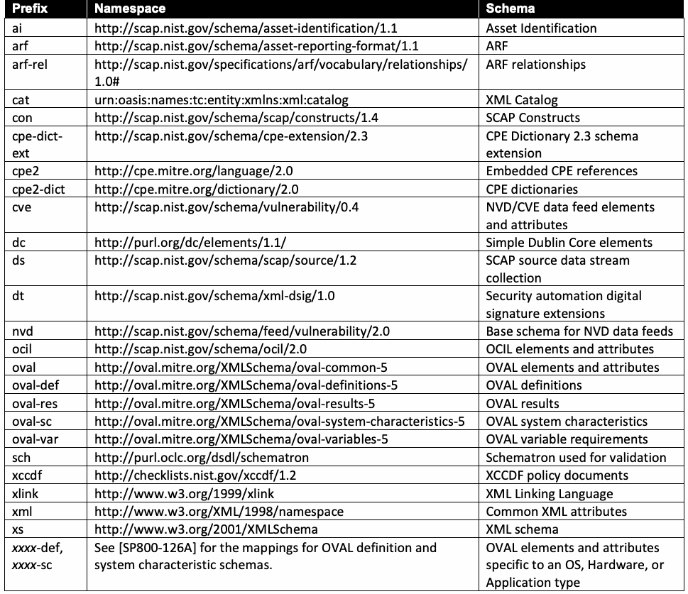
抽出したテキスト（原本と未照合・参考）
| Prefix | Namespace | Schema |
| ai | http://scap.nist.gov/schema/asset-identification/1.1 | Asset Identification |
| arf | http://scap.nist.gov/schema/asset-reporting-format/1.1 | ARF |
| arf-rel | http://scap.nist.gov/specifications/arf/vocabulary/relationships/ 1.0# | ARF relationships |
| cat | urn:oasis:names:tc:entity:xmlns:xml:catalog | XML Catalog |
| con | http://scap.nist.gov/schema/scap/constructs/1.4 | SCAP Constructs |
| cpe-dict- ext | http://scap.nist.gov/schema/cpe-extension/2.3 | CPE Dictionary 2.3 schema extension |
| cpe2 | http://cpe.mitre.org/language/2.0 | Embedded CPE references |
| cpe2-dict | http://cpe.mitre.org/dictionary/2.0 | CPE dictionaries |
| cve | http://scap.nist.gov/schema/vulnerability/0.4 | NVD/CVE data feed elements and attributes |
| dc | http://purl.org/dc/elements/1.1/ | Simple Dublin Core elements |
| ds | http://scap.nist.gov/schema/scap/source/1.2 | SCAP source data stream collection |
| dt | http://scap.nist.gov/schema/xml-dsig/1.0 | Security automation digital signature extensions |
| nvd | http://scap.nist.gov/schema/feed/vulnerability/2.0 | Base schema for NVD data feeds |
| ocil | http://scap.nist.gov/schema/ocil/2.0 | OCIL elements and attributes |
| oval | http://oval.mitre.org/XMLSchema/oval-common-5 | OVAL elements and attributes |
| oval-def | http://oval.mitre.org/XMLSchema/oval-definitions-5 | OVAL definitions |
| oval-res | http://oval.mitre.org/XMLSchema/oval-results-5 | OVAL results |
| oval-sc | http://oval.mitre.org/XMLSchema/oval-system-characteristics-5 | OVAL system characteristics |
| oval-var | http://oval.mitre.org/XMLSchema/oval-variables-5 | OVAL variable requirements |
| sch | http://purl.oclc.org/dsdl/schematron | Schematron used for validation |
| xccdf | http://checklists.nist.gov/xccdf/1.2 | XCCDF policy documents |
| xlink | http://www.w3.org/1999/xlink | XML Linking Language |
| xml | http://www.w3.org/XML/1998/namespace | Common XML attributes |
| xs | http://www.w3.org/2001/XMLSchema | XML schema |
| xxxx-def, xxxx-sc | See [SP800-126A] for the mappings for OVAL definition and system characteristic schemas. | OVAL elements and attributes specific to an OS, Hardware, or Application type |
抽出したテキストの訳（原本と未照合・参考）
| プレフィックス | 名前空間 | スキーマ |
| ai | http://scap.nist.gov/schema/asset-identification/1.1 | アセット識別 |
| arf | http://scap.nist.gov/schema/asset-reporting-format/1.1 | ARF |
| arf-rel | http://scap.nist.gov/specifications/arf/vocabulary/relationships/ 1.0# | ARFリレーションシップ |
| cat | urn:oasis:names:tc:entity:xmlns:xml:catalog | XMLカタログ |
| con | http://scap.nist.gov/schema/scap/constructs/1.4 | SCAPコンストラクト |
| cpe-dict- ext | http://scap.nist.gov/schema/cpe-extension/2.3 | CPE辞書2.3スキーマ拡張 |
| cpe2 | http://cpe.mitre.org/language/2.0 | 埋め込みCPE参照 |
| cpe2-dict | http://cpe.mitre.org/dictionary/2.0 | CPE辞書 |
| cve | http://scap.nist.gov/schema/vulnerability/0.4 | NVD/CVEデータフィードの要素および属性 |
| dc | http://purl.org/dc/elements/1.1/ | Simple Dublin Core要素 |
| ds | http://scap.nist.gov/schema/scap/source/1.2 | SCAPソースデータストリームコレクション |
| dt | http://scap.nist.gov/schema/xml-dsig/1.0 | セキュリティ自動化デジタル署名拡張 |
| nvd | http://scap.nist.gov/schema/feed/vulnerability/2.0 | NVDデータフィードの基本スキーマ |
| ocil | http://scap.nist.gov/schema/ocil/2.0 | OCIL要素および属性 |
| oval | http://oval.mitre.org/XMLSchema/oval-common-5 | OVAL要素および属性 |
| oval-def | http://oval.mitre.org/XMLSchema/oval-definitions-5 | OVAL定義 |
| oval-res | http://oval.mitre.org/XMLSchema/oval-results-5 | OVAL結果 |
| oval-sc | http://oval.mitre.org/XMLSchema/oval-system-characteristics-5 | OVALシステム特性 |
| oval-var | http://oval.mitre.org/XMLSchema/oval-variables-5 | OVAL変数要件 |
| sch | http://purl.oclc.org/dsdl/schematron | 検証に使用されるSchematron |
| xccdf | http://checklists.nist.gov/xccdf/1.2 | XCCDFポリシードキュメント |
| xlink | http://www.w3.org/1999/xlink | XML Linking Language |
| xml | http://www.w3.org/XML/1998/namespace | 共通XML属性 |
| xs | http://www.w3.org/2001/XMLSchema | XMLスキーマ |
| xxxx-def, xxxx-sc | OVAL定義およびシステム特性スキーマのマッピングについては[SP800-126A]を参照。 | OS、ハードウェア、またはアプリケーションタイプに固有のOVAL要素および属性 |
2. SCAP 1.4 Definition
2. SCAP 1.4の定義
In general, SCAP version 1.4 is comprised of 12 component specifications in five categories:
一般に、SCAPバージョン1.4は、5つのカテゴリにおける12のコンポーネント仕様で構成される：
1.Languages. The SCAP languages provide standard vocabularies and conventions for expressing security policies, technical check mechanisms, and assessment results. The SCAP language specifications are the Extensible Configuration Checklist Description Format (XCCDF), Open Vulnerability and Assessment Language (OVAL), and Open Checklist Interactive Language (OCIL).
1.言語。SCAP言語は、セキュリティポリシー、技術的チェックメカニズム、および評価結果を表現するための標準的な語彙と規約を提供する。SCAP言語仕様は、Extensible Configuration Checklist Description Format（XCCDF）、Open Vulnerability and Assessment Language（OVAL）、およびOpen Checklist Interactive Language（OCIL）である。
2.Reporting formats. SCAP reporting provides the necessary constructs to express collected information in standardized formats. The SCAP reporting format specifications are Asset Reporting Format (ARF) and Asset Identification. Although Asset Identification is not explicitly a reporting format, SCAP uses it as a key component in identifying the assets that reports relate to.
2.レポート形式。SCAPレポートは、収集された情報を標準化された形式で表現するために必要なコンストラクトを提供する。SCAPレポート形式仕様は、Asset Reporting Format（ARF）およびAsset Identificationである。Asset Identificationは明示的なレポート形式ではないが、SCAPはこれを、レポートが関連するアセットを識別するための主要コンポーネントとして使用している。
3.Identification schemes. The SCAP identification schemes provide a means to identify key concepts, such as software products, vulnerabilities, and configuration items that use standardized identifier formats. They also provide a means to associate individual identifiers with additional data pertaining to the subject of the identifier. The SCAP identification scheme specifications are the Common Platform Enumeration (CPE), Common Configuration Enumeration (CCE), and Common Vulnerabilities and Exposures (CVE).
3.識別スキーム。SCAP識別スキームは、標準化された識別子形式を使用するソフトウェア製品、脆弱性、構成項目などの主要な概念を識別する手段を提供する。また、個々の識別子をその識別子の対象に関する追加データと関連付ける手段も提供する。SCAP識別スキーム仕様は、Common Platform Enumeration（CPE）、Common Configuration Enumeration（CCE）、およびCommon Vulnerabilities and Exposures（CVE）である。
4.Measurement and scoring systems. In SCAP, this refers to evaluating the specific characteristics of a security weakness (e.g., software vulnerabilities and security configuration issues) and generating a score that reflects their relative severity. The SCAP measurement and scoring system specifications are the Common Vulnerability Scoring System (CVSS) and Common Configuration Scoring System (CCSS).
4.測定およびスコアリングシステム。SCAPにおいて、これはセキュリティ上の弱点（例：ソフトウェアの脆弱性やセキュリティ設定の問題）の特定の特性を評価し、それらの相対的な深刻度を反映したスコアを生成することを指す。SCAP測定およびスコアリングシステム仕様は、Common Vulnerability Scoring System（CVSS）およびCommon Configuration Scoring System（CCSS）である。
5.Integrity. An SCAP integrity specification helps preserve the integrity of SCAP content and results. The Trust Model for Security Automation Data (TMSAD) is the SCAP integrity specification.
5.完全性。SCAP完全性仕様は、SCAPコンテンツおよび結果の完全性を維持するのに役立つ。Trust Model for Security Automation Data（TMSAD）がSCAP完全性仕様である。
More specifically, the five categories for the component specifications included in SCAP 1.4 are:
より具体的には、SCAP 1.4に含まれるコンポーネント仕様の5つのカテゴリは以下のとおりである：
1. Languages
1. 言語
Extensible Configuration Checklist Description Format (XCCDF) 1.2, a language for authoring security checklists/benchmarks and for reporting results of evaluating them [XCCDF]
Extensible Configuration Checklist Description Format（XCCDF）1.2、セキュリティチェックリスト／ベンチマークの作成およびそれらの評価結果の報告のための言語 [XCCDF]
Open Vulnerability and Assessment Language (OVAL) 5.12, a language for o representing system configuration information, assessing machine states, and reporting assessment results [OVAL]4
Open Vulnerability and Assessment Language（OVAL）5.12、システム構成情報の表現、マシン状態の評価、および評価結果の報告のための言語 o [OVAL]4
•Open Checklist Interactive Language (OCIL) 2.0, a language for representing checks that collect information from people or existing data stores made by other data collection efforts [OCIL]
•Open Checklist Interactive Language (OCIL) 2.0：人から、または他のデータ収集作業によって作られた既存のデータストアから情報を収集するチェックを表現するための言語 [OCIL]
2. Reporting formats
2. レポート形式
•Asset Reporting Format (ARF) 1.1, a format for expressing the transport format of information about assets and the relationships between assets and reports [ARF]
•Asset Reporting Format (ARF) 1.1：資産に関する情報、および資産とレポートの間の関係についての情報の転送形式を表現するための形式 [ARF]
•Asset Identification 1.1, a format for uniquely identifying assets based on known identifiers and/or known information about the assets [AI]
•Asset Identification 1.1：既知の識別子や資産に関する既知の情報に基づいて、資産を一意に識別するための形式 [AI]
3. Identification schemes
3. 識別スキーム
•Common Platform Enumeration (CPE) 2.3, a nomenclature and dictionary of hardware, operating systems, and applications [CPE]
•Common Platform Enumeration (CPE) 2.3：ハードウェア、オペレーティングシステム、アプリケーションの命名体系および辞書 [CPE]
•Common Configuration Enumeration (CCE) 5, a nomenclature and dictionary of software security configurations [CCE]
•Common Configuration Enumeration (CCE) 5：ソフトウェアのセキュリティ設定の命名体系および辞書 [CCE]
•Common Vulnerabilities and Exposures (CVE), a nomenclature and dictionary of security-related software flaws5 [CVE]
•Common Vulnerabilities and Exposures (CVE)：セキュリティに関するソフトウェアの欠陥の命名体系および辞書5 [CVE]
4. Measurement and scoring systems
4. 測定およびスコアリングシステム
•Common Vulnerability Scoring System (CVSS) v3.1 and v4.0, open frameworks for measuring the relative severity of software flaw vulnerabilities. CVSS v4.0 is the preferred version for newly authored SCAP content; CVSS v3.1 is the minimum supported version. See Sec. 3.8 for version-precedence requirements [CVSS-3.1] [CVSS-4.0].
•Common Vulnerability Scoring System (CVSS) v3.1およびv4.0：ソフトウェアの欠陥による脆弱性の相対的な深刻度を測定するためのオープンなフレームワーク。新たに作成するSCAPコンテンツではCVSS v4.0が推奨されるバージョンであり、CVSS v3.1がサポートされる最低バージョンである。バージョンの優先順位に関する要件については3.8節を参照のこと [CVSS-3.1] [CVSS-4.0]。
•Common Configuration Scoring System (CCSS) 1.0, a system for measuring the relative severity of system security configuration issues [CCSS]
•Common Configuration Scoring System (CCSS) 1.0：システムのセキュリティ設定上の問題の相対的な深刻度を測定するためのシステム [CCSS]
5. Integrity
5. 完全性
•Trust Model for Security Automation Data (TMSAD) 1.0, a specification for using digital signatures in a common trust model applied to other security automation specifications [TMSAD]
•Trust Model for Security Automation Data (TMSAD) 1.0：他のセキュリティ自動化仕様に適用される共通のトラストモデルにおいて、デジタル署名を使用するための仕様 [TMSAD]
All references to these specifications within this document are to the minor version numbers listed in the annex.6 These versions represent the baseline of interoperability for all SCAP products that support SCAP 1.4. Support for older versions of these specifications may be included in an SCAP 1.4 product, but support for legacy SCAP versions should not interfere with the product’s ability to address the requirements in this specification and the annex. In some cases, support for specific legacy versions of these specifications is required by this specification, such as the requirements discussed in Sec. 4.1.
本文書におけるこれらの仕様への参照はすべて、附属書に記載されたマイナーバージョン番号を指す。6 これらのバージョンは、SCAP 1.4をサポートするすべてのSCAP製品の相互運用性のベースラインである。SCAP 1.4製品はこれらの仕様の旧バージョンのサポートを含んでもよいが、レガシーなSCAPバージョンのサポートが、本仕様と附属書の要件に対応する製品の能力を妨げるべきではない。場合によっては、4.1節で述べる要件のように、これらの仕様の特定のレガシーバージョンのサポートが本仕様によって要求される。
Combinations of these specifications can be used together for particular functions, such as security configuration checking. These functions, known as SCAP use cases, are ways in which a product can use SCAP. The collective XML content used for a use case is called an SCAP data stream, which is a specific instantiation of SCAP content. There are two types of SCAP data streams: an SCAP source data stream holds the input content, and an SCAP result data stream holds the output content. The major elements of a data stream (e.g., an XCCDF benchmark, a set of OVAL definitions) are referred to as stream components.
セキュリティ構成チェックなど、特定の機能のために、これらの仕様の組み合わせを一緒に使用することができる。SCAPユースケースとして知られるこれらの機能は、製品がSCAPを使用できる方法である。ユースケースに使用されるXMLコンテンツの集合は、SCAPコンテンツの特定のインスタンス化であるSCAPデータストリームと呼ばれる。SCAPデータストリームには2つのタイプがある。SCAPソースデータストリームは入力コンテンツを保持し、SCAP結果データストリームは出力コンテンツを保持する。データストリームの主要な要素（例：XCCDFベンチマーク、OVAL定義のセット）は、ストリームコンポーネントと呼ばれる。
Products and source content may want to claim conformance to one or more of the SCAP use cases (see Sec. 5) for a variety of reasons. For example, a product may want to assert that it uses SCAP content properly and can interoperate with other products using valid SCAP content. Another example is a policy mandating that an organization use SCAP source content to perform vulnerability assessments and other security operations.
製品およびソースコンテンツは、さまざまな理由から、1つ以上のSCAPユースケースへの適合を表明したい場合がある（セクション5を参照）。例えば、製品がSCAPコンテンツを適切に使用し、有効なSCAPコンテンツを使用する他の製品と相互運用できることを主張したい場合がある。別の例としては、組織が脆弱性評価やその他のセキュリティ運用を実行するためにSCAPソースコンテンツを使用することを義務付けるポリシーがある。
This section provides the high-level requirements that a product or source content must meet for conformance with the SCAP 1.4 specification. Such products and source content are referred to as SCAP-conformant. Most of the requirements listed in this section reference other sections that fully define the requirements.
本セクションでは、製品またはソースコンテンツがSCAP 1.4仕様に適合するために満たさなければならない高レベルの要件を示す。そのような製品およびソースコンテンツは、SCAP適合（SCAP-conformant）と呼ばれる。本セクションに記載されている要件の大部分は、要件を完全に定義している他のセクションを参照している。
If requirements are in conflict between component specifications, this document will provide clarification. If a component specification conflicts with this document, the requirements in this document SHALL take precedence. This document will be republished with errata as needed, and the errata SHALL take precedence over the original document content.
コンポーネント仕様間で要件が矛盾する場合、本文書が明確化を提供する。コンポーネント仕様が本文書と矛盾する場合、本文書の要件が優先されるものとする（SHALL take precedence）。本文書は必要に応じて正誤表とともに再発行され、その正誤表は元の文書コンテンツよりも優先されるものとする（SHALL take precedence）。
The requirements in [SP800-126A] SHALL take precedence over conflicting requirements in this document or the component specifications. If an SCAP specification or component specification and a schema are in conflict, the requirements in the specification SHALL take precedence over all conflicting requirements in the schema.
[SP800-126A]の要件は、本文書またはコンポーネント仕様における矛盾する要件よりも優先される（SHALL take precedence）。SCAP仕様またはコンポーネント仕様とスキーマが矛盾する場合、仕様における要件がスキーマにおけるすべての矛盾する要件よりも優先される（SHALL take precedence）。
2.1. Product Conformance
2.1. 製品の適合性
There are two types of SCAP-conformant products: content producers and content consumers. Content producers generate SCAP source data streams. Content consumers accept existing SCAP source data streams, process them, and (when required by the supported use cases) produce SCAP result data streams. Products that claim conformance with the SCAP 1.4 specification SHALL comply with the following requirements:
SCAP適合製品には、コンテンツプロデューサーとコンテンツコンシューマーの2つのタイプがある。コンテンツプロデューサーは、SCAPソースデータストリームを生成する。コンテンツコンシューマーは、既存のSCAPソースデータストリームを受け入れて処理し、（サポートされているユースケースで必要な場合）SCAP結果データストリームを生成する。SCAP 1.4仕様への適合を表明する製品は、以下の要件に準拠しなければならない（SHALL comply with）：
•1. Adhere to component specifications.
•1. コンポーネント仕様を遵守する。
Adhere to the requirements in each applicable SCAP component specification, both for each component that the product implements and for each component required to implement the selected SCAP use cases. The authoritative references for component specifications are listed in [SP800-126A].
製品が実装する各コンポーネントと、選択したSCAPユースケースの実装に必要な各コンポーネントの両方について、該当する各SCAPコンポーネント仕様の要件を遵守する。コンポーネント仕様の権威ある参考文献は[SP800-126A]に記載されている。
•2. Implement errata.
•2. 正誤表を実装する。
Adhere to the requirements in the errata for this document and SP 800-126A that are in effect as of the product’s release date.
製品のリリース日の時点で有効な、本文書およびSP 800-126Aの正誤表の要件を遵守する。
•3. Producer requirements.
•3. 作成者の要件。
For content producers, generate SCAP source data streams that are (a) XML well-formed, (b) schema-valid per the applicable component specifications, and (c) conformant to the source content conformance requirements in Sec. 2.2 and the use case requirements in Sec. 5.
コンテンツ作成者は、(a) XMLとして整形式であり、(b) 該当するコンポーネント仕様に照らしてスキーマに対して妥当であり、(c) 2.2節のソースコンテンツ適合要件と5節のユースケース要件に適合する、SCAPソースデータストリームを生成する。
•4. Consumer requirements.
•4. 利用者の要件。
For content consumers, accept and process SCAP source data streams and, when required by the supported use cases, generate SCAP result data streams that are XML well-formed and schema-valid. Content consumers SHALL follow all processing requirements in Sec. 4 for each selected SCAP component specification and each component specification required to implement the selected SCAP use cases and SHALL detect and report non-conformant input.
コンテンツ利用者は、SCAPソースデータストリームを受け入れて処理し、サポートするユースケースで必要な場合には、XMLとして整形式でありスキーマに対して妥当なSCAP結果データストリームを生成する。コンテンツ利用者は、選択した各SCAPコンポーネント仕様と、選択したSCAPユースケースの実装に必要な各コンポーネント仕様について、4節のすべての処理要件に従わなければならず（SHALL）、また非適合な入力を検出して報告しなければならない（SHALL）。
•5. Conformance claim.
•5. 適合の主張。
Make an explicit claim of conformance to this specification in documentation provided to end users. The claim SHALL identify at least (a) this specification and version (SCAP 1.4), (b) the implemented roles (e.g., producer, consumer), (c) the supported SCAP use cases (Sec. 5), and (d) the implemented SCAP component specifications and versions.
エンドユーザーに提供する文書において、本仕様への適合を明示的に主張する。その主張は、少なくとも (a) 本仕様とそのバージョン（SCAP 1.4）、(b) 実装する役割（例：作成者、利用者）、(c) サポートするSCAPユースケース（5節）、(d) 実装するSCAPコンポーネント仕様とそのバージョンを特定しなければならない（SHALL）。
2.2. Source Content Conformance
2.2. ソースコンテンツの適合性
Source content (i.e., source data streams) that claim conformance with the SCAP 1.4 specification SHALL comply with the following requirements:
SCAP 1.4仕様への適合性を主張するソースコンテンツ（すなわち、ソースデータストリーム）は、以下の要件に準拠しなければならない（SHALL）：
•1. Component specifications.
•1. コンポーネント仕様。
Adhere to the requirements specified in each applicable SCAP component specification. This includes both the component specifications explicitly selected for the content and any additional component specifications required to support the selected SCAP use cases. Authoritative references for each specification are provided in [SP800-126A].
適用される各SCAPコンポーネント仕様で規定されている要件を遵守すること。これには、コンテンツ用に明示的に選択されたコンポーネント仕様と、選択されたSCAPユースケースをサポートするために必要な追加のコンポーネント仕様の両方が含まれる。各仕様の正式な参考文献は[SP800-126A]に記載されている。
•2. Errata.
•2. 正誤表。
Adhere to the requirements published in errata for this document and SP 800-126A. In the event of a conflict, the errata SHALL take precedence.
本文書およびSP 800-126Aの正誤表で公開されている要件を遵守すること。矛盾が生じた場合は、正誤表が優先されるものとする（SHALL）。
•3. Syntax, structure, and use cases.
•3. 構文、構造、ユースケース。
Follow all syntax, structural, and design requirements defined in Sec. 3 for each applicable component specification. In addition, follow all use case-specific requirements defined in Sec. 5.
適用される各コンポーネント仕様について、Sec. 3で定義されているすべての構文、構造、および設計の要件に従うこと。さらに、Sec. 5で定義されているすべてのユースケース固有の要件に従うこと。
3. SCAP Content Requirements and Recommendations
3. SCAPコンテンツの要件および推奨事項
This section defines the SCAP 1.4 content syntax, structure, and development requirements and recommendations for SCAP-conformant content and products. Organizations are encouraged to adopt the optional recommendations to promote stronger interoperability and greater content consistency. The first part of the section discusses SCAP source data streams. The middle of the section groups requirements and recommendations by specification: XCCDF, OVAL, OCIL, CPE, CCE, CVE, CVSS, and CCSS, in that order. Finally, the last part of the section discusses applying XML digital signatures to source data streams.
本セクションでは、SCAP適合コンテンツおよび製品を対象に、SCAP 1.4コンテンツの構文、構造、開発の要件および推奨事項を定義する。組織は、より強固な相互運用性とより高いコンテンツの一貫性を促進するために、任意の推奨事項を採用することが推奨される。本セクションの最初の部分では、SCAPソースデータストリームについて説明する。中央部分では、要件と推奨事項を仕様別（XCCDF、OVAL、OCIL、CPE、CCE、CVE、CVSS、CCSSの順）にグループ化して説明する。最後に、最後の部分では、ソースデータストリームへのXMLデジタル署名の適用について説明する。
3.1. SCAP Source Data Stream
3.1. SCAPソースデータストリーム
This subsection discusses SCAP source data streams only; SCAP result data streams are discussed in Sec. 4.4 as part of the requirements for SCAP processing.
本小節ではSCAPソースデータストリームのみを扱う。SCAP結果データストリームについては、SCAP処理の要件の一部としてSec. 4.4で説明する。
An SCAP source data stream collection is composed of SCAP data streams and SCAP source components.7 The components section contains an unbounded number of SCAP source components, each consisting of data expressed using one or more of the SCAP specifications. The data streams section contains one or more source data streams, each of which references the source components that compose the data stream. This model allows source components to be reused across multiple data streams. Many data streams are allowed in a data stream collection to allow for the grouping of related or similar source data streams.
SCAPソースデータストリームコレクションは、SCAPデータストリームとSCAPソースコンポーネントで構成される。7 コンポーネントセクションには無制限の数のSCAPソースコンポーネントが含まれ、それぞれが1つ以上のSCAP仕様を使用して表現されたデータで構成されている。データストリームセクションには1つ以上のソースデータストリームが含まれ、それぞれがそのデータストリームを構成するソースコンポーネントを参照する。このモデルにより、複数のデータストリーム間でソースコンポーネントを再利用することが可能になる。データストリームコレクションでは、関連するまたは類似したソースデータストリームをグループ化できるように、多数のデータストリームが許可されている。
Figure 1 shows a possible relationship between data stream collections, data streams, and components.
Figure 1は、データストリームコレクション、データストリーム、およびコンポーネント間の考えられる関係を示している。
Fig. 1. Notional SCAP data stream collection
図1. 概念的なSCAPデータストリームコレクション
In Fig. 1, data stream 1 points to xccdf1, xccdf2, oval1, oval3, cpe dict1, and cpe dict2. Data stream 2 points to xccdf2, oval2, oval3, and cpe dict2. Each data stream is a collection of links to the components it references, represented as <ds:component-ref>. Each component-ref encapsulates the information required to allow the content consumer to connect the components that are embedded in content with the data stream component that should be used. Content authors MAY place components in any order. For example, some authors might choose to place dictionary components first to help optimize data stream parsing.
図1では、データストリーム1はxccdf1、xccdf2、oval1、oval3、cpe dict1、cpe dict2を指している。データストリーム2はxccdf2、oval2、oval3、cpe dict2を指している。各データストリームは、それが参照するコンポーネントへのリンクの集まりであり、リンクは<ds:component-ref>として表される。各component-refは、コンテンツ内に埋め込まれたコンポーネントと、使用すべきデータストリームコンポーネントとをコンテンツ利用者が結び付けられるようにするために必要な情報をカプセル化する。コンテンツ作成者は、コンポーネントを任意の順序で配置してもよい（MAY）。たとえば、データストリームの解析を最適化しやすくするため、辞書コンポーネントを先頭に配置する作成者もいるであろう。
Links in a <ds:component-ref> element serve two purposes: to indicate which component is being referred to and to provide a map to associate references within a component to other links within the data stream. The latter allows a data stream to define context for each component’s references within the bounds of the data stream’s own set of links. Figure 2 provides a conceptual example that illustrates how a data stream is constructed.
<ds:component-ref>要素内のリンクには、二つの目的がある。どのコンポーネントを参照しているかを示すことと、コンポーネント内の参照をデータストリーム内の他のリンクに関連付けるための対応表を提供することである。後者により、データストリームは、自らのリンクの集合の範囲内で、各コンポーネントの参照の文脈を定義できる。図2は、データストリームがどのように構築されるかを示す概念的な例である。
checklists
チェックリスト
checks
チェック
dictionaries
ディクショナリ
component-ref: scap_id_cref_ref2 component-ref: scap_id_cref_ref3 component-ref: scap_id_cref_ref1
component-ref: scap_id_cref_ref2 component-ref: scap_id_cref_ref3 component-ref: scap_id_cref_ref1
Mapping
マッピング
Mapping
マッピング
To: #scap_id_cref_ref3
先: #scap_id_cref_ref3
To: #scap_id_cref_ref3
先: #scap_id_cref_ref3
From: dict-oval-comp
元: dict-oval-comp
From: sample-oval-comp
元: sample-oval-comp
Link: scap_id_comp_xccdf1
リンク: scap_id_comp_xccdf1
Link: scap_id_comp_oval1
リンク: scap_id_comp_oval1
Link: scap_id_comp_dict1
リンク: scap_id_comp_dict1
component: scap_id_comp_xccdf1 component: scap_id_comp_oval1 component: scap_id_comp_dict1
コンポーネント: scap_id_comp_xccdf1 コンポーネント: scap_id_comp_oval1 コンポーネント: scap_id_comp_dict1
XCCDF Checklist
XCCDFチェックリスト
OVAL Definitions
OVAL定義
CPE Dictionary
CPE辞書
References: sample-oval-comp
参照先: sample-oval-comp
References: dict-oval-comp
参照先: dict-oval-comp
Fig. 2. SCAP data stream
図 2. SCAPデータストリーム
The following XML is a stripped-down example of the source data stream depicted in Fig. 2.
以下のXMLは、図 2に示すソースデータストリームの簡略化された例である。
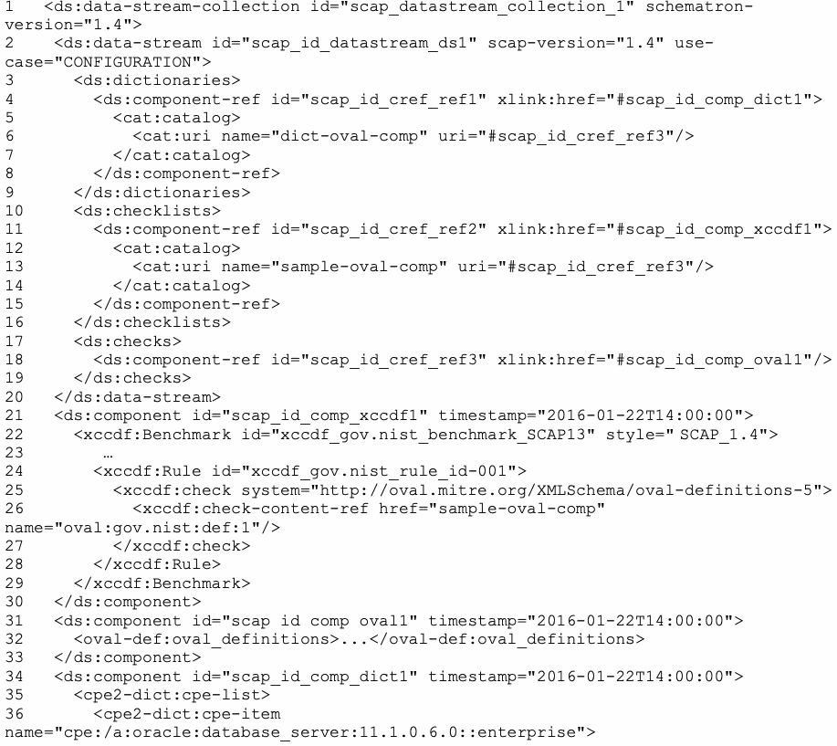
抽出したテキスト（原本と未照合・参考）
| 1 <ds:data-stream-collection id="scap_datastream_collection_1" schematron- | |
| version="1.4"> | |
| 2 <ds:data-stream id="scap_id_datastream_ds1" scap-version="1.4" use- | |
| case="CONFIGURATION"> | |
| 3 <ds:dictionaries> | |
| 4 <ds:component-ref id="scap_id_cref_ref1" xlink:href="#scap_id_comp_dict1"> | |
| 5 <cat:catalog> | |
| 6 <cat:uri name="dict-oval-comp" uri="#scap_id_cref_ref3"/> | |
| 7 </cat:catalog> | |
| 8 </ds:component-ref> | |
| 9 </ds:dictionaries> | |
| 10 <ds:checklists> | |
| 11 <ds:component-ref id="scap_id_cref_ref2" xlink:href="#scap_id_comp_xccdf1"> | |
| 12 <cat:catalog> | |
| 13 <cat:uri name="sample-oval-comp" uri="#scap_id_cref_ref3"/> | |
| 14 </cat:catalog> | |
| 15 </ds:component-ref> | |
| 16 </ds:checklists | |
| 17 <ds:checks> | |
| 18 <ds:component-ref id="scap_id_cref_ref3" xlink:href="#scap_id_comp_oval1"/> | |
| 19 </ds:checks> | |
| 20 </ds:data-stream> | |
| 21 <ds:component id="scap_id_comp_xccdf1" timestamp="2016-01-22T14:00:00"> | |
| 22 <xccdf:Benchmark id="xccdf_gov.nist_benchmark_SCAP13" style=" | SCAP_1.4"> |
| 23 … | |
| 24 <xccdf:Rule id="xccdf_gov.nist_rule_id-001"> | |
| 25 <xccdf:check system="http://oval.mitre.org/XMLSchema/oval-definitions-5"> | |
| 26 <xccdf:check-content-ref href="sample-oval-comp" | |
| name="oval:gov.nist:def:1"/> | |
| 27 </xccdf:check> | |
| 28 </xccdf:Rule> | |
| 29 </xccdf:Benchmark> | |
| 30 </ds:component> | |
| 31 <ds:component id="scap_id_comp_oval1" timestamp="2016-01-22T14:00:00"> | |
| 32 <oval-def:oval_definitions>...</oval-def:oval_definitions> | |
| 33 </ds:component> | |
| 34 <ds:component id="scap_id_comp_dict1" timestamp="2016-01-22T14:00:00"> | |
| 35 <cpe2-dict:cpe-list> | |
| 36 <cpe2-dict:cpe-item | |
| name="cpe:/a:oracle:database_server:11.1.0.6.0::enterprise"> |
抽出したテキストの訳（原本と未照合・参考）
| 1 <ds:data-stream-collection id="scap_datastream_collection_1" schematron- | |
| version="1.4"> | |
| 2 <ds:data-stream id="scap_id_datastream_ds1" scap-version="1.4" use- | |
| case="CONFIGURATION"> | |
| 3 <ds:dictionaries> | |
| 4 <ds:component-ref id="scap_id_cref_ref1" xlink:href="#scap_id_comp_dict1"> | |
| 5 <cat:catalog> | |
| 6 <cat:uri name="dict-oval-comp" uri="#scap_id_cref_ref3"/> | |
| 7 </cat:catalog> | |
| 8 </ds:component-ref> | |
| 9 </ds:dictionaries> | |
| 10 <ds:checklists> | |
| 11 <ds:component-ref id="scap_id_cref_ref2" xlink:href="#scap_id_comp_xccdf1"> | |
| 12 <cat:catalog> | |
| 13 <cat:uri name="sample-oval-comp" uri="#scap_id_cref_ref3"/> | |
| 14 </cat:catalog> | |
| 15 </ds:component-ref> | |
| 16 </ds:checklists | |
| 17 <ds:checks> | |
| 18 <ds:component-ref id="scap_id_cref_ref3" xlink:href="#scap_id_comp_oval1"/> | |
| 19 </ds:checks> | |
| 20 </ds:data-stream> | |
| 21 <ds:component id="scap_id_comp_xccdf1" timestamp="2016-01-22T14:00:00"> | |
| 22 <xccdf:Benchmark id="xccdf_gov.nist_benchmark_SCAP13" style=" | SCAP_1.4"> |
| 23 … | |
| 24 <xccdf:Rule id="xccdf_gov.nist_rule_id-001"> | |
| 25 <xccdf:check system="http://oval.mitre.org/XMLSchema/oval-definitions-5"> | |
| 26 <xccdf:check-content-ref href="sample-oval-comp" | |
| name="oval:gov.nist:def:1"/> | |
| 27 </xccdf:check> | |
| 28 </xccdf:Rule> | |
| 29 </xccdf:Benchmark> | |
| 30 </ds:component> | |
| 31 <ds:component id="scap_id_comp_oval1" timestamp="2016-01-22T14:00:00"> | |
| 32 <oval-def:oval_definitions>...</oval-def:oval_definitions> | |
| 33 </ds:component> | |
| 34 <ds:component id="scap_id_comp_dict1" timestamp="2016-01-22T14:00:00"> | |
| 35 <cpe2-dict:cpe-list> | |
| 36 <cpe2-dict:cpe-item | |
| name="cpe:/a:oracle:database_server:11.1.0.6.0::enterprise"> |
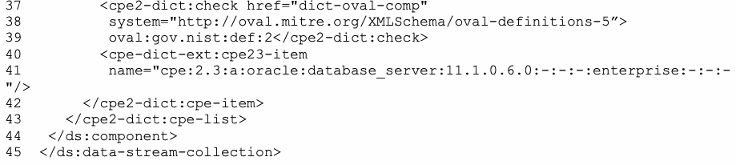
抽出したテキスト（原本と未照合・参考）
37 <cpe2-dict:check href="dict-oval-comp" 38 system="http://oval.mitre.org/XMLSchema/oval-definitions-5”> 39 oval:gov.nist:def:2</cpe2-dict:check> 40 <cpe-dict-ext:cpe23-item 41 name="cpe:2.3:a:oracle:database_server:11.1.0.6.0:-:-:-:enterprise:-:-:- "/> 42 </cpe2-dict:cpe-item> 43 </cpe2-dict:cpe-list> 44 </ds:component> 45 </ds:data-stream-collection>抽出したテキストの訳（原本と未照合・参考）
37 <cpe2-dict:check href="dict-oval-comp" 38 system="http://oval.mitre.org/XMLSchema/oval-definitions-5”> 39 oval:gov.nist:def:2</cpe2-dict:check> 40 <cpe-dict-ext:cpe23-item 41 name="cpe:2.3:a:oracle:database_server:11.1.0.6.0:-:-:-:enterprise:-:-:- "/> 42 </cpe2-dict:cpe-item> 43 </cpe2-dict:cpe-list> 44 </ds:component> 45 </ds:data-stream-collection>In Fig. 2, the data stream links to three components. The OVAL component scap_id_comp_oval1 (see XML lines 31-33 above) does not reference external content, so there are no mappings captured for it. The XCCDF component (scap_id_comp_xccdf1) (see XML lines 21-30) and the CPE Dictionary component (scap_id_comp_dict1) (see XML lines 34-44) reference other components (e.g., scap_id_cref_ref3).
図2において、データストリームは3つのコンポーネントにリンクしている。OVALコンポーネント scap_id_comp_oval1（上記のXML行31〜33を参照）は外部コンテンツを参照しないため、それに対してキャプチャされたマッピングはない。XCCDFコンポーネント（scap_id_comp_xccdf1）（XML行21〜30を参照）およびCPE辞書コンポーネント（scap_id_comp_dict1）（XML行34〜44を参照）は、他のコンポーネント（例：scap_id_cref_ref3）を参照している。
When referencing components within the example data stream, a mapping indicates that when scap_id_comp_xccdf1 references “sample-oval-comp,” the content is found through the link to the component identified as “scap_id_comp_oval1” (see XML lines 26, 13, and 18). Similarly, when the scap_id_comp_dict1 component references “dict-oval-comp,” the component reference is resolved through the link to the component identified as “scap_id_comp_oval1” (see XML lines 37, 6, and 18). This approach associates SCAP components within a data stream at the SCAP logical level, allowing components to be reused across data streams within the same data stream collection. This reuse can be accomplished irrespective of how references are made within a given component.
例示されたデータストリーム内のコンポーネントを参照する際、マッピングは、scap_id_comp_xccdf1 が「sample-oval-comp」を参照するときに、そのコンテンツが「scap_id_comp_oval1」として識別されるコンポーネントへのリンクを通じて見つかることを示す（XML行26、13、および18を参照）。同様に、scap_id_comp_dict1 コンポーネントが「dict-oval-comp」を参照するとき、そのコンポーネント参照は「scap_id_comp_oval1」として識別されるコンポーネントへのリンクを通じて解決される（XML行37、6、および18を参照）。このアプローチにより、データストリーム内のSCAPコンポーネントがSCAP論理レベルで関連付けられ、同一のデータストリームコレクション内のデータストリーム間でコンポーネントを再利用できるようになる。この再利用は、特定のコンポーネント内で参照がどのように行われているかに関係なく達成できる。
The design of the SCAP source data stream is important for the following reasons:
SCAPソースデータストリームの設計は、以下の理由から重要である。
1.Individual components may be developed outside of an SCAP data stream, where linking to other components is not necessarily known when the component is created.
1.個々のコンポーネントはSCAPデータストリームの外部で開発される場合があり、コンポーネント作成時には他のコンポーネントへのリンクが必ずしも判明しているとは限らない。
2.The SCAP source data stream creates links between different components that were not necessarily designed to reference each other. For example, XCCDF was not designed to reference a particular checking system; it can reference OVAL, OCIL, and other checking systems.
2.SCAPソースデータストリームは、必ずしも相互に参照するように設計されていなかった異なるコンポーネント間にリンクを作成する。例えば、XCCDFは特定のチェックシステムを参照するように設計されたわけではなく、OVAL、OCIL、その他のチェックシステムを参照することができる。
3.The logical link mapping in the data stream places a layer of capability within the data stream to control the dereferencing of URIs within components, creating a complete solution related to bundling components.
3.データストリーム内の論理リンクマッピングは、コンポーネント内のURIの逆参照を制御する機能層をデータストリーム内に配置し、コンポーネントのバンドルに関連する完全なソリューションを作成する。
4.The SCAP source data stream format is intended to be easily adaptable for use in future communication models (e.g., web services, transport protocols, tasking mechanisms).
4.SCAPソースデータストリーム形式は、将来の通信モデル（例：Webサービス、トランスポートプロトコル、タスキングメカニズム）での使用に容易に適応できるように意図されている。
5.The SCAP source data stream format supports more comprehensive validation of component content, including interrelationships between components.
5.SCAPソースデータストリーム形式は、コンポーネント間の相互関係を含む、コンポーネントコンテンツのより包括的な検証をサポートする。
3.1.1. Source Data Stream Data Model
3.1.1. ソースデータストリームデータモデル
The tables in this section formalize the SCAP source data stream data model. The tables contain requirements and SHALL be interpreted as follows:
本節の表は、SCAPソースデータストリームデータモデルを形式化する。表には要件が含まれており、次のように解釈しなければならない（SHALL）：
•The “Element Name” field indicates the name for the XML element being described. Each element name has a namespace prefix indicating the namespace to which the element belongs. See Table 1 for a mapping of namespace prefixes to namespaces.
•「Element Name」フィールドは、記述されているXML要素の名前を示す。各要素名には、その要素が属する名前空間を示す名前空間プレフィックスが付いている。名前空間プレフィックスと名前空間のマッピングについては、Table 1を参照すること。
•The “Element Definition” field indicates the prose description of the element. The definition field MAY contain key words, as indicated in [RFC2119].
•「Element Definition」フィールドは、要素の説明文を示す。定義フィールドには、[RFC2119]で示されているキーワードが含まれていてもよい（MAY）。
•The “Properties” field is broken into four subfields:
•「Properties」フィールドは、4つのサブフィールドに分かれている：
1.The “Name” column indicates the name of a property that MAY, SHOULD, or SHALL be included in the described element, in accordance with the cardinality indicated in the “Count” column and any [RFC2119] requirement words in the “Property Definition” column.
1.「Name」列は、「Count」列に示されたカーディナリティ、および「Property Definition」列の任意の[RFC2119]要件ワードに従って、記述された要素に含まれてもよい（MAY）、含まれるべきである（SHOULD）、または含まれなければならない（SHALL）プロパティの名前を示す。
2.The “Type” column indicates the REQUIRED data type for the value of the property. There are two categories of types: literal and element. A literal type indicates the type of literal as defined in [XMLS]. An element type references the name of another element that ultimately defines that property.
2.「Type」列は、プロパティの値に対して REQUIRED であるデータ型を示す。型にはリテラルと要素の2つのカテゴリがある。リテラル型は、[XMLS]で定義されているリテラルの型を示す。要素型は、そのプロパティを最終的に定義する別の要素の名前を参照する。
3.The “Count” column indicates the cardinality of the property within the element. The property SHALL be included in the element in accordance with the cardinality. If a range is given, and “n” is the upper bound of the range, then the upper limit SHALL be unbounded.
3.「Count」列は、要素内におけるプロパティのカーディナリティ（多重度）を示す。プロパティは、そのカーディナリティに従って要素に含まれなければならない（SHALL）。範囲が指定されており、「n」がその範囲の上限である場合、上限は無制限としなければならない（SHALL）。
4.The “Property Definition” column defines the property in the context of the element. The definition MAY contain key words, as indicated in [RFC2119].
4.「Property Definition」列は、要素のコンテキストにおいてプロパティを定義する。この定義には、[RFC2119]に示されているキーワードが含まれていてもよい（MAY）。
Table 2. ds:data-stream-collection
表 2. ds:data-stream-collection
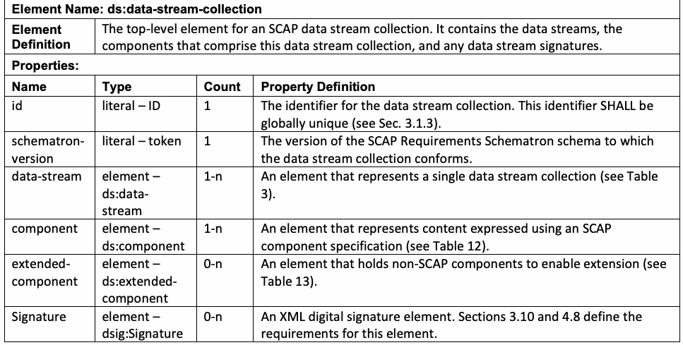
抽出したテキスト（原本と未照合・参考）
| Element Name: ds:data-stream-collection | |
| Element Definition | The top-level element for an SCAP data stream collection. It contains the data streams, the components that comprise this data stream collection, and any data stream signatures. |
| Properties: | |
| Name / Type | Count / Property Definition |
| id / literal – ID | 1 / The identifier for the data stream collection. This identifier SHALL be globally unique (see Sec. 3.1.3). |
| schematron- version / literal – token | 1 / The version of the SCAP Requirements Schematron schema to which the data stream collection conforms. |
| data-stream / element – ds:data- stream | 1-n / An element that represents a single data stream collection (see Table 3). |
| component / element – ds:component | 1-n / An element that represents content expressed using an SCAP component specification (see Table 12). |
| extended- component / element – ds:extended- component | 0-n / An element that holds non-SCAP components to enable extension (see Table 13). |
| Signature / element – dsig:Signature | 0-n / An XML digital signature element. Sections 3.10 and 4.8 define the requirements for this element. |
抽出したテキストの訳（原本と未照合・参考）
| 要素名: ds:data-stream-collection | |
| 要素の定義 | SCAP データストリームコレクションの最上位要素。これには、データストリーム、このデータストリームコレクションを構成するコンポーネント、および任意のデータストリーム署名が含まれる。 |
| プロパティ: | |
| 名前 / 型 | 出現回数 / プロパティ定義 |
| id / literal – ID | 1 / データストリームコレクションの識別子。この識別子はグローバルに一意でなければならない（SHALL）（3.1.3項を参照）。 |
| schematron- version / literal – token | 1 / データストリームコレクションが準拠する SCAP 要件 Schematron スキーマのバージョン。 |
| data-stream / element – ds:data- stream | 1-n / 単一のデータストリームコレクションを表す要素（表 3 を参照）。 |
| component / element – ds:component | 1-n / SCAP コンポーネント仕様を使用して表現されたコンテンツを表す要素（表 12 を参照）。 |
| extended- component / element – ds:extended- component | 0-n / 拡張を可能にするために非 SCAP コンポーネントを保持する要素（表 13 を参照）。 |
| Signature / element – dsig:Signature | 0-n / XML デジタル署名要素。3.10項および4.8項でこの要素の要件が定義されている。 |
Table 3. ds:data-stream
表 3. ds:data-stream
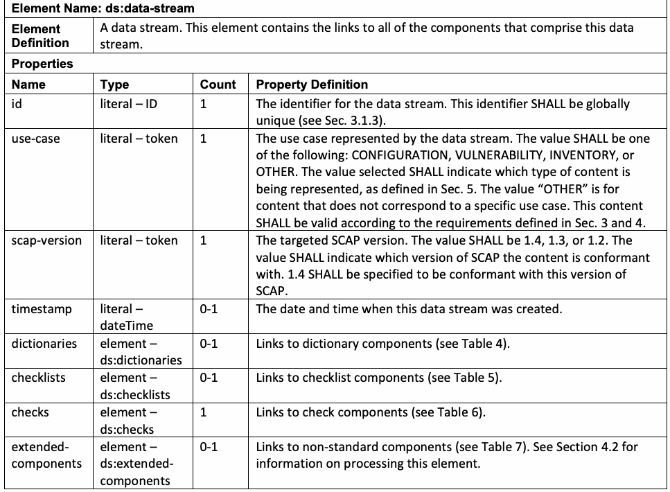
抽出したテキスト（原本と未照合・参考）
| Element Name: ds:data-stream | |
| Element Definition | A data stream. This element contains the links to all of the components that comprise this data stream. |
| Properties | |
| Name / Type | Count / Property Definition |
| id / literal – ID | 1 / The identifier for the data stream. This identifier SHALL be globally unique (see Sec. 3.1.3). |
| use-case / literal – token | 1 / The use case represented by the data stream. The value SHALL be one of the following: CONFIGURATION, VULNERABILITY, INVENTORY, or OTHER. The value selected SHALL indicate which type of content is being represented, as defined in Sec. 5. The value “OTHER” is for content that does not correspond to a specific use case. This content SHALL be valid according to the requirements defined in Sec. 3 and 4. |
| scap-version / literal – token | 1 / The targeted SCAP version. The value SHALL be 1.4, 1.3, or 1.2. The value SHALL indicate which version of SCAP the content is conformant with. 1.4 SHALL be specified to be conformant with this version of SCAP. |
| timestamp / literal – dateTime | 0-1 / The date and time when this data stream was created. |
| dictionaries / element – ds:dictionaries | 0-1 / Links to dictionary components (see Table 4). |
| checklists / element – ds:checklists | 0-1 / Links to checklist components (see Table 5). |
| checks / element – ds:checks | 1 / Links to check components (see Table 6). |
| extended- components / element – ds:extended- components | 0-1 / Links to non-standard components (see Table 7). See Section 4.2 for information on processing this element. |
抽出したテキストの訳（原本と未照合・参考）
| 要素名: ds:data-stream | |
| 要素の定義 | データストリーム。この要素には、このデータストリームを構成するすべてのコンポーネントへのリンクが含まれる。 |
| プロパティ | |
| 名前 / 型 | 出現回数 / プロパティ定義 |
| id / literal – ID | 1 / データストリームの識別子。この識別子はグローバルに一意でなければならない（SHALL）（3.1.3項を参照）。 |
| use-case / literal – token | 1 / データストリームによって表されるユースケース。値は、CONFIGURATION、VULNERABILITY、INVENTORY、または OTHER のいずれかでなければならない（SHALL）。選択された値は、第5節で定義されているように、どのタイプのコンテンツが表現されているかを示さなければならない（SHALL）。値「OTHER」は、特定のユースケースに対応しないコンテンツ用である。このコンテンツは、第3節および第4節で定義されている要件に従って有効でなければならない（SHALL）。 |
| scap-version / literal – token | 1 / 対象となる SCAP バージョン。値は 1.4、1.3、または 1.2 でなければならない（SHALL）。この値は、コンテンツが準拠している SCAP のバージョンを示さなければならない（SHALL）。このバージョンの SCAP に準拠するには、1.4 を指定しなければならない（SHALL）。 |
| timestamp / literal – dateTime | 0-1 / このデータストリームが作成された日時。 |
| dictionaries / element – ds:dictionaries | 0-1 / 辞書コンポーネントへのリンク（表 4 を参照）。 |
| checklists / element – ds:checklists | 0-1 / チェックリストコンポーネントへのリンク（表 5 を参照）。 |
| checks / element – ds:checks | 1 / チェックコンポーネントへのリンク（表 6 を参照）。 |
| extended- components / element – ds:extended- components | 0-1 / 非標準コンポーネントへのリンク（表 7 を参照）。この要素の処理に関する情報については、4.2項を参照すること。 |
Table 4. ds:dictionaries
表 4. ds:dictionaries
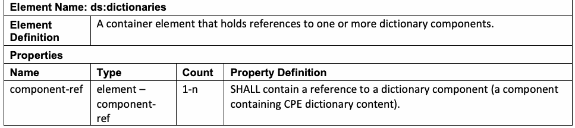
抽出したテキスト（原本と未照合・参考）
| Element Name: ds:dictionaries | |
| Element Definition | A container element that holds references to one or more dictionary components. |
| Properties | |
| Name / Type | Count / Property Definition |
| component-ref / element – component- ref | 1-n / SHALL contain a reference to a dictionary component (a component containing CPE dictionary content). |
抽出したテキストの訳（原本と未照合・参考）
| 要素名: ds:dictionaries | |
| 要素の定義 | 1つ以上の辞書コンポーネントへの参照を保持するコンテナ要素。 |
| プロパティ | |
| 名前 / 型 | 出現回数 / プロパティ定義 |
| component-ref / element – component- ref | 1-n / 辞書コンポーネント（CPE 辞書コンテンツを含むコンポーネント）への参照を含まなければならない（SHALL）。 |
Table 5. ds:checklists
表 5. ds:checklists
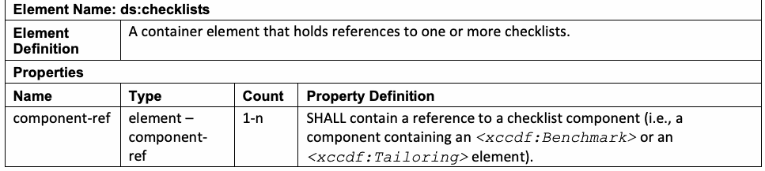
抽出したテキスト（原本と未照合・参考）
| Element Name: ds:checklists | |
| Element Definition | A container element that holds references to one or more checklists. |
| Properties | |
| Name / Type | Count / Property Definition |
| component-ref / element – component- ref | 1-n / SHALL contain a reference to a checklist component (i.e., a component containing an <xccdf:Benchmark> or an <xccdf:Tailoring> element). |
抽出したテキストの訳（原本と未照合・参考）
| 要素名: ds:checklists | |
| 要素の定義 | 1つ以上のチェックリストへの参照を保持するコンテナ要素。 |
| プロパティ | |
| 名前 / 型 | 出現数 / プロパティ定義 |
| component-ref / element – component- ref | 1-n / チェックリストコンポーネント（すなわち、<xccdf:Benchmark> 要素または <xccdf:Tailoring> 要素を含むコンポーネント）への参照を含まなければならない（SHALL）。 |
Table 6. ds:checks
表 6. ds:checks
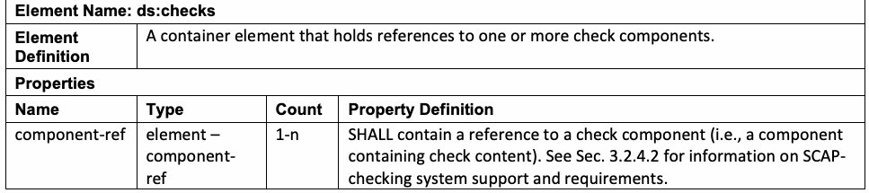
抽出したテキスト（原本と未照合・参考）
| Element Name: ds:checks | |
| Element Definition | A container element that holds references to one or more check components. |
| Properties | |
| Name / Type | Count / Property Definition |
| component-ref / element – component- ref | 1-n / SHALL contain a reference to a check component (i.e., a component containing check content). See Sec. 3.2.4.2 for information on SCAP- checking system support and requirements. |
抽出したテキストの訳（原本と未照合・参考）
| 要素名: ds:checks | |
| 要素の定義 | 1つ以上のチェックコンポーネントへの参照を保持するコンテナ要素。 |
| プロパティ | |
| 名前 / 型 | 出現数 / プロパティ定義 |
| component-ref / element – component- ref | 1-n / チェックコンポーネント（すなわち、チェックコンテンツを含むコンポーネント）への参照を含まなければならない（SHALL）。SCAPチェックシステムのサポートおよび要件に関する情報については、Sec. 3.2.4.2 を参照。 |
Table 7. ds:extended-components
表 7. ds:extended-components
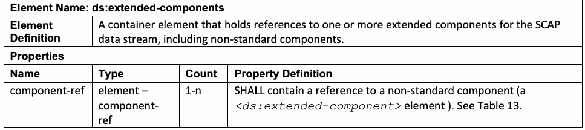
抽出したテキスト（原本と未照合・参考）
| Element Name: ds:extended-components | |
| Element Definition | A container element that holds references to one or more extended components for the SCAP data stream, including non-standard components. |
| Properties | |
| Name / Type | Count / Property Definition |
| component-ref / element – component- ref | 1-n / SHALL contain a reference to a non-standard component (a <ds:extended-component> element ). See Table 13. |
抽出したテキストの訳（原本と未照合・参考）
| 要素名: ds:extended-components | |
| 要素の定義 | 非標準コンポーネントを含む、SCAPデータストリーム用の1つ以上の拡張コンポーネントへの参照を保持するコンテナ要素。 |
| プロパティ | |
| 名前 / 型 | 出現数 / プロパティ定義 |
| component-ref / element – component- ref | 1-n / 非標準コンポーネント（<ds:extended-component> 要素）への参照を含まなければならない（SHALL）。表 13 を参照。 |
Table 8. ds:component-ref
表 8. ds:component-ref
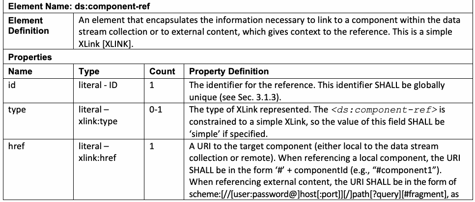
抽出したテキスト（原本と未照合・参考）
| Element Name: ds:component-ref | |
| Element Definition | An element that encapsulates the information necessary to link to a component within the data stream collection or to external content, which gives context to the reference. This is a simple XLink [XLINK]. |
| Properties | |
| Name / Type | Count / Property Definition |
| id / literal - ID | 1 / The identifier for the reference. This identifier SHALL be globally unique (see Sec. 3.1.3). |
| type / literal – xlink:type | 0-1 / The type of XLink represented. The <ds:component-ref> is constrained to a simple XLink, so the value of this field SHALL be ‘simple’ if specified. |
| href / literal – xlink:href | 1 / A URI to the target component (either local to the data stream collection or remote). When referencing a local component, the URI SHALL be in the form ‘#’ + componentId (e.g., “#component1”). When referencing external content, the URI SHALL be in the form of scheme:[//[user:password@]host[:port]][/]path[?query][#fragment], as |
抽出したテキストの訳（原本と未照合・参考）
| 要素名: ds:component-ref | |
| 要素の定義 | データストリームコレクション内のコンポーネントまたは外部コンテンツにリンクするために必要な情報をカプセル化し、その参照にコンテキストを与える要素。これは単純 XLink [XLINK] である。 |
| プロパティ | |
| 名前 / 型 | 出現数 / プロパティ定義 |
| id / literal - ID | 1 / 参照の識別子。この識別子はグローバルに一意でなければならない（SHALL）（Sec. 3.1.3 を参照）。 |
| type / literal – xlink:type | 0-1 / 表される XLink のタイプ。<ds:component-ref> は単純 XLink に制約されるため、指定された場合、このフィールドの値は ‘simple’ でなければならない（SHALL）。 |
| href / literal – xlink:href | 1 / ターゲットコンポーネント（データストリームコレクションに対してローカルまたはリモートのいずれか）への URI。ローカルコンポーネントを参照する場合、URI は ‘#’ + componentId の形式でなければならない（SHALL）（例: “#component1”）。外部コンテンツを参照する場合、URI は scheme:[//[user:password@]host[:port]][/]path[?query][#fragment] の形式でなければならない（SHALL）。以下のように |
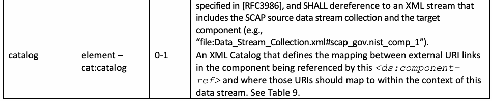
抽出したテキスト（原本と未照合・参考）
| specified in [RFC3986], and SHALL dereference to an XML stream that includes the SCAP source data stream collection and the target component (e.g., “file:Data_Stream_Collection.xml#scap_gov.nist_comp_1”). | |||
| catalog | element – cat:catalog | 0-1 | An XML Catalog that defines the mapping between external URI links in the component being referenced by this <ds:component- ref> and where those URIs should map to within the context of this data stream. See Table 9. |
抽出したテキストの訳（原本と未照合・参考）
| [RFC3986] で規定されており、SCAPソースデータストリームコレクションおよびターゲットコンポーネントを含むXMLストリーム（例：“file:Data_Stream_Collection.xml#scap_gov.nist_comp_1”）に逆参照されなければならない（SHALL dereference）。 | |||
| catalog | element – cat:catalog | 0-1 | この <ds:component- ref> によって参照されているコンポーネント内の外部URIリンクと、このデータストリームのコンテキスト内でそれらのURIがどこにマッピングされるべきかとの間のマッピングを定義するXML Catalog。Table 9 を参照。 |
Table 9. cat:catalog
表 9. cat:catalog
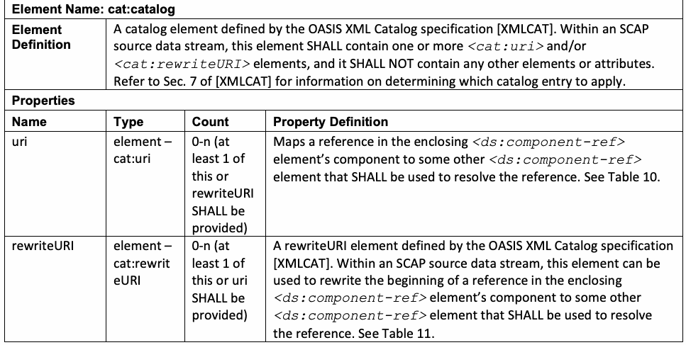
抽出したテキスト（原本と未照合・参考）
| Element Name: cat:catalog | |
| Element Definition | A catalog element defined by the OASIS XML Catalog specification [XMLCAT]. Within an SCAP source data stream, this element SHALL contain one or more <cat:uri> and/or <cat:rewriteURI> elements, and it SHALL NOT contain any other elements or attributes. Refer to Sec. 7 of [XMLCAT] for information on determining which catalog entry to apply. |
| Properties | |
| Name / Type | Count / Property Definition |
| uri / element – cat:uri | 0-n (at least 1 of this or rewriteURI SHALL be provided) / Maps a reference in the enclosing <ds:component-ref> element’s component to some other <ds:component-ref> element that SHALL be used to resolve the reference. See Table 10. |
| rewriteURI / element – cat:rewrit eURI | 0-n (at least 1 of this or uri SHALL be provided) / A rewriteURI element defined by the OASIS XML Catalog specification [XMLCAT]. Within an SCAP source data stream, this element can be used to rewrite the beginning of a reference in the enclosing <ds:component-ref> element’s component to some other <ds:component-ref> element that SHALL be used to resolve the reference. See Table 11. |
抽出したテキストの訳（原本と未照合・参考）
| Element Name: cat:catalog | |
| Element Definition | OASIS XML Catalog仕様 [XMLCAT] によって定義される catalog 要素。SCAPソースデータストリーム内において、この要素は1つ以上の <cat:uri> 要素および／または <cat:rewriteURI> 要素を含まなければならず（SHALL contain）、他のいかなる要素や属性も含んではならない（SHALL NOT contain）。適用するカタログエントリを決定する方法に関する情報については、[XMLCAT] の Sec. 7 を参照。 |
| Properties | |
| Name / Type | Count / Property Definition |
| uri / element – cat:uri | 0-n（これまたは rewriteURI のうち少なくとも1つが提供されなければならない（SHALL be provided））/ 内包する <ds:component-ref> 要素のコンポーネント内の参照を、その参照を解決するために使用しなければならない（SHALL be used）他の何らかの <ds:component-ref> 要素へとマッピングする。Table 10 を参照。 |
| rewriteURI / element – cat:rewrit eURI | 0-n（これまたは uri のうち少なくとも1つが提供されなければならない（SHALL be provided））/ OASIS XML Catalog仕様 [XMLCAT] によって定義される rewriteURI 要素。SCAPソースデータストリーム内において、この要素は、内包する <ds:component-ref> 要素のコンポーネント内の参照の先頭部分を、その参照を解決するために使用しなければならない（SHALL be used）他の何らかの <ds:component-ref> 要素へと書き換えるために使用できる。Table 11 を参照。 |
Table 10. cat:uri
表 10. cat:uri
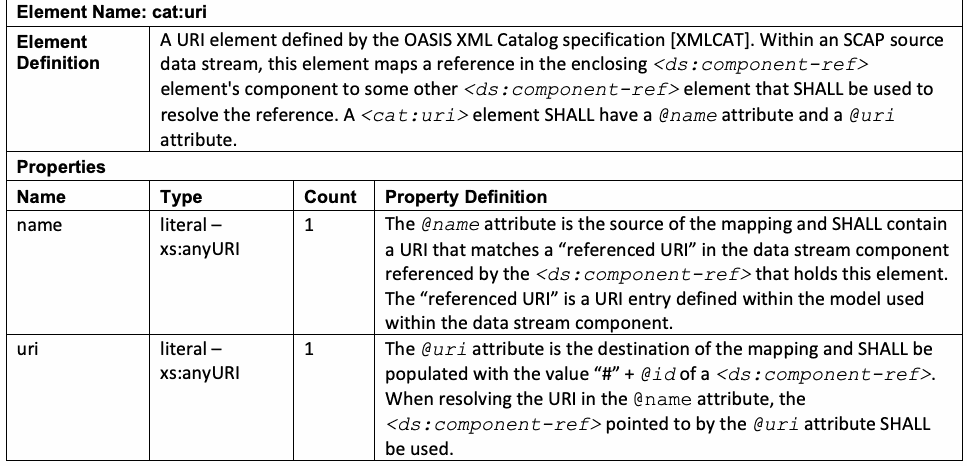
抽出したテキスト（原本と未照合・参考）
| Element Name: cat:uri | |
| Element Definition | A URI element defined by the OASIS XML Catalog specification [XMLCAT]. Within an SCAP source data stream, this element maps a reference in the enclosing <ds:component-ref> element's component to some other <ds:component-ref> element that SHALL be used to resolve the reference. A <cat:uri> element SHALL have a @name attribute and a @uri attribute. |
| Properties | |
| Name / Type | Count / Property Definition |
| name / literal – xs:anyURI | 1 / The @name attribute is the source of the mapping and SHALL contain a URI that matches a “referenced URI” in the data stream component referenced by the <ds:component-ref> that holds this element. The “referenced URI” is a URI entry defined within the model used within the data stream component. |
| uri / literal – xs:anyURI | 1 / The @uri attribute is the destination of the mapping and SHALL be populated with the value “#” + @id of a <ds:component-ref>. When resolving the URI in the attribute, the @name <ds:component-ref> pointed to by the @uri attribute SHALL be used. |
抽出したテキストの訳（原本と未照合・参考）
| Element Name: cat:uri | |
| Element Definition | OASIS XML Catalog仕様 [XMLCAT] によって定義される URI 要素。SCAPソースデータストリーム内において、この要素は内包する <ds:component-ref> 要素のコンポーネント内の参照を、その参照を解決するために使用しなければならない（SHALL be used）他の何らかの <ds:component-ref> 要素へとマッピングする。<cat:uri> 要素は、@name 属性および @uri 属性を持たなければならない（SHALL have）。 |
| Properties | |
| Name / Type | Count / Property Definition |
| name / literal – xs:anyURI | 1 / @name 属性はマッピングの起点であり、この要素を保持する <ds:component-ref> によって参照されるデータストリームコンポーネント内の「参照先URI（referenced URI）」に一致するURIを含まなければならない（SHALL contain）。「参照先URI」とは、データストリームコンポーネント内で使用されるモデル内で定義されたURIエントリである。 |
| uri / literal – xs:anyURI | 1 / @uri 属性はマッピングの宛先であり、<ds:component-ref> の値 “#” + @id を設定しなければならない（SHALL be populated）。@name 属性内のURIを解決する際、@uri 属性によって指し示されている <ds:component-ref> が使用されなければならない（SHALL be used）。 |
Table 11. cat:rewriteURI
表 11. cat:rewriteURI
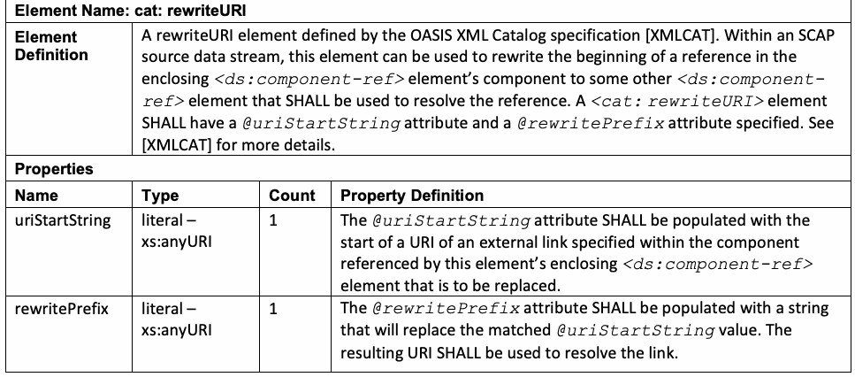
抽出したテキスト（原本と未照合・参考）
| Element Name: cat: rewriteURI | |
| Element Definition | A rewriteURI element defined by the OASIS XML Catalog specification [XMLCAT]. Within an SCAP source data stream, this element can be used to rewrite the beginning of a reference in the enclosing <ds:component-ref> element’s component to some other <ds:component- ref> element that SHALL be used to resolve the reference. A <cat: rewriteURI> element SHALL have a @uriStartString attribute and a @rewritePrefix attribute specified. See [XMLCAT] for more details. |
| Properties | |
| Name / Type | Count / Property Definition |
| uriStartString / literal – xs:anyURI | 1 / The @uriStartString attribute SHALL be populated with the start of a URI of an external link specified within the component referenced by this element’s enclosing <ds:component-ref> element that is to be replaced. |
| rewritePrefix / literal – xs:anyURI | 1 / The @rewritePrefix attribute SHALL be populated with a string that will replace the matched @uriStartString value. The resulting URI SHALL be used to resolve the link. |
抽出したテキストの訳（原本と未照合・参考）
| Element Name: cat: rewriteURI | |
| Element Definition | OASIS XML Catalog仕様 [XMLCAT] によって定義される rewriteURI 要素。SCAPソースデータストリーム内において、この要素は、内包する <ds:component-ref> 要素のコンポーネント内の参照の先頭部分を、その参照を解決するために使用しなければならない（SHALL be used）他の何らかの <ds:component- ref> 要素へと書き換えるために使用できる。<cat: rewriteURI> 要素は、@uriStartString 属性および @rewritePrefix 属性が指定されていなければならない（SHALL have）。詳細については [XMLCAT] を参照。 |
| Properties | |
| Name / Type | Count / Property Definition |
| uriStartString / literal – xs:anyURI | 1 / @uriStartString 属性には、置き換え対象となる、この要素を内包する <ds:component-ref> 要素によって参照されるコンポーネント内で指定された外部リンクのURIの開始部分が設定されなければならない（SHALL be populated）。 |
| rewritePrefix / literal – xs:anyURI | 1 / @rewritePrefix 属性には、一致した @uriStartString の値を置き換える文字列が設定されなければならない（SHALL be populated）。結果として得られるURIは、リンクを解決するために使用されなければならない（SHALL be used）。 |
Table 12. ds:component
表 12. ds:component
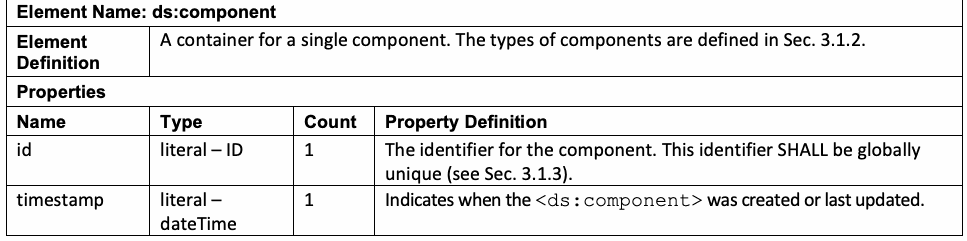
抽出したテキスト（原本と未照合・参考）
| Element Name: ds:component | |
| Element Definition | A container for a single component. The types of components are defined in Sec. 3.1.2. |
| Properties | |
| Name / Type | Count / Property Definition |
| id / literal – ID | 1 / The identifier for the component. This identifier SHALL be globally unique (see Sec. 3.1.3). |
| timestamp / literal – dateTime | 1 / Indicates when the was created or last updated. <ds:component> |
抽出したテキストの訳（原本と未照合・参考）
| 要素名: ds:component | |
| 要素の定義 | 単一のコンポーネントのためのコンテナ。コンポーネントのタイプはSec. 3.1.2で定義されている。 |
| プロパティ | |
| 名前 / タイプ | 出現回数 / プロパティの定義 |
| id / リテラル – ID | 1 / コンポーネントの識別子。この識別子はグローバルに一意でなければならない（SHALL）（Sec. 3.1.3を参照）。 |
| timestamp / リテラル – dateTime | 1 / <ds:component> がいつ作成されたか、または最後に更新されたかを示す。 |
Table 13. ds:extended-component
表13. ds:extended-component
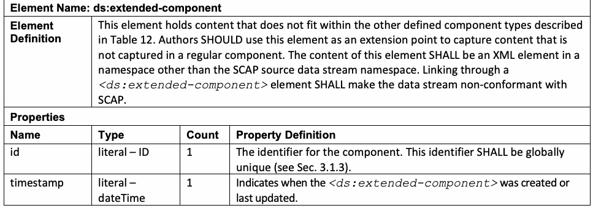
抽出したテキスト（原本と未照合・参考）
| Element Name: ds:extended-component | |
| Element Definition | This element holds content that does not fit within the other defined component types described in Table 12. Authors SHOULD use this element as an extension point to capture content that is not captured in a regular component. The content of this element SHALL be an XML element in a namespace other than the SCAP source data stream namespace. Linking through a <ds:extended-component> element SHALL make the data stream non-conformant with SCAP. |
| Properties | |
| Name / Type | Count / Property Definition |
| id / literal – ID | 1 / The identifier for the component. This identifier SHALL be globally unique (see Sec. 3.1.3). |
| timestamp / literal – dateTime | 1 / Indicates when the <ds:extended-component> was created or last updated. |
抽出したテキストの訳（原本と未照合・参考）
| 要素名: ds:extended-component | |
| 要素の定義 | この要素は、表12に記載されている他の定義されたコンポーネントタイプに適合しないコンテンツを保持する。作成者は、通常のコンポーネントに捕捉されないコンテンツを捕捉するための拡張ポイントとして、この要素を使用すべきである（SHOULD）。この要素のコンテンツは、SCAPソースデータストリームの名前空間以外の名前空間にあるXML要素でなければならない（SHALL）。<ds:extended-component>要素を介してリンクすることは、データストリームをSCAP非準拠とするものとする（SHALL）。 |
| プロパティ | |
| 名前 / タイプ | 出現回数 / プロパティの定義 |
| id / リテラル – ID | 1 / コンポーネントの識別子。この識別子はグローバルに一意でなければならない（SHALL）（Sec. 3.1.3を参照）。 |
| timestamp / リテラル – dateTime | 1 / <ds:extended-component> がいつ作成されたか、または最後に更新されたかを示す。 |
3.1.2. Source Data Stream Collection Validation
3.1.2. ソースデータストリームコレクションの検証
The SCAP source data stream collection SHALL validate against the XML schema representation for the source data stream and all associated Schematron schemas. The SCAP components referenced by each <ds:component> and <ds:extended-component> element SHALL validate against the corresponding component schema and its embedded Schematron rules. All of the SCAP-related schemas are referenced at https://csrc.nist.gov/Projects/security-content-automation-protocol/scap-releases/scap-1-4. See Sec. 2 in [SP800-126A] for a list of SCAP component schema and Schematron schema locations. These XML and Schematron schemas will be updated if any errors are found. If the old schema links change, updated links will be provided in the annex as errors are corrected.
SCAPソースデータストリームコレクションは、ソースデータストリームのXMLスキーマ表現および関連するすべてのSchematronスキーマに対して検証されなければならない（SHALL）。各<ds:component>および<ds:extended-component>要素によって参照されるSCAPコンポーネントは、対応するコンポーネントスキーマおよびその組み込みSchematronルールに対して検証されなければならない（SHALL）。すべてのSCAP関連スキーマは、https://csrc.nist.gov/Projects/security-content-automation-protocol/scap-releases/scap-1-4 で参照されている。SCAPコンポーネントスキーマおよびSchematronスキーマの場所のリストについては、[SP800-126A]のSec. 2を参照のこと。これらのXMLおよびSchematronスキーマは、誤りが見つかった場合に更新される。古いスキーマリンクが変更された場合、誤りの修正に応じて更新されたリンクが付録で提供される。
Each SCAP source data stream component SHALL use one of the elements specified in Table 14 as its document element.
各SCAPソースデータストリームコンポーネントは、そのドキュメント要素として表14で指定されている要素の1つを使用しなければならない（SHALL）。
Table 14. SCAP source data stream component document elements
表14. SCAPソースデータストリームコンポーネントのドキュメント要素
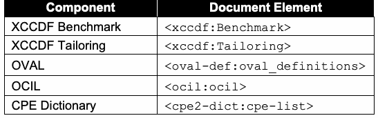
抽出したテキスト（原本と未照合・参考）
| Component | Document Element |
| XCCDF Benchmark | <xccdf:Benchmark> |
| XCCDF Tailoring | <xccdf:Tailoring> |
| OVAL | <oval-def:oval_definitions> |
| OCIL | <ocil:ocil> |
| CPE Dictionary | <cpe2-dict:cpe-list> |
抽出したテキストの訳（原本と未照合・参考）
| コンポーネント | ドキュメント要素 |
| XCCDF Benchmark | <xccdf:Benchmark> |
| XCCDF Tailoring | <xccdf:Tailoring> |
| OVAL | <oval-def:oval_definitions> |
| OCIL | <ocil:ocil> |
| CPE Dictionary | <cpe2-dict:cpe-list> |
SCAP source data stream components SHOULD NOT use any constructs that are deprecated in its associated specification. While Sec. 4.1 requires that products support deprecated constructs, these constructs should be avoided to minimize the impact to content use when the constructs are removed from future revisions of the associated specifications. Single data streams in a data stream collection SHALL NOT reference any component in the collection more than once.
SCAPソースデータストリームコンポーネントは、関連する仕様で非推奨とされているいかなる構文も使用すべきではない（SHOULD NOT）。Sec. 4.1では製品が非推奨の構文をサポートすることを要求しているが、関連する仕様の将来の改訂でそれらの構文が削除された際に対象コンテンツの利用への影響を最小限に抑えるため、これらの構文は避けるべきである。データストリームコレクション内の個々のデータストリームは、コレクション内のいかなるコンポーネントも複数回参照してはならない（SHALL NOT）。
If applicable, each component SHALL validate against its associated Schematron schema. For the SCAP source data stream collection, it SHALL validate against the version of the SCAP Schematron rules as specified on the <ds:data-stream-collection> element’s @schematron-version attribute, and it SHOULD also validate against the latest Schematron rules. NIST provides and maintains a set of Schematron rules to check well-formed SCAP content. The Schematron schemas for the SCAP specification and its applicable component specifications are located at https://csrc.nist.gov/Projects/security-content-automation-protocol/scap-releases/scap-1-4. Source content SHOULD pass all Schematron assertions in the Schematron rule files. When creating source content, failed assertions with a “WARNING” or “INFO” flag MAY be disregarded if the assertion discovers an issue in the content that is justifiable and expected based on the needs of the content author. When executing source content, all failed assertions with a “WARNING” or “INFO” flag SHALL be disregarded.
該当する場合、各コンポーネントはその関連するSchematronスキーマに照らして検証しなければならない（SHALL）。SCAPソースデータストリームコレクションについては、<ds:data-stream-collection>要素の@schematron-version属性で指定されているバージョンのSCAP Schematronルールに照らして検証しなければならず（SHALL）、最新のSchematronルールに対しても検証することが推奨される（SHOULD）。NISTは、整形式のSCAPコンテンツをチェックするためのSchematronルールのセットを提供および維持している。SCAP仕様および該当するそのコンポーネント仕様のSchematronスキーマは、https://csrc.nist.gov/Projects/security-content-automation-protocol/scap-releases/scap-1-4 に置かれている。ソースコンテンツは、Schematronルールファイル内のすべてのSchematronアサーションに合格すべきである（SHOULD）。ソースコンテンツの作成時、「WARNING」または「INFO」フラグが付いた失敗したアサーションは、コンテンツ作成者のニーズに基づき正当化でき想定内である問題がアサーションによって発見された場合、無視してもよい（MAY）。ソースコンテンツの実行時、「WARNING」または「INFO」フラグが付いた失敗したすべてのアサーションは無視しなければならない（SHALL）。
The Schematron schemas are interpretations of the specifications, and the implementations of their rules are subject to change. Whenever a change is made to a Schematron schema used for this SCAP version, the SCAP Schematron change log document will be updated, and the new Schematron schema will be posted. The latest Schematron schema SHOULD be used in place of any earlier versions. If the latest file is unavailable, the version specified on the <ds:data-stream-collection> element’s @schematron-version attribute SHALL be used instead.
Schematronスキーマは仕様の解釈であり、そのルールの実装は変更される場合がある。このSCAPバージョンに使用されるSchematronスキーマに変更が加えられるたびに、SCAP Schematron変更ログドキュメントが更新され、新しいSchematronスキーマが公開される。最新のSchematronスキーマを、以前のいかなるバージョンにも代えて使用すべきである（SHOULD）。最新のファイルが入手できない場合は、代わりに <ds:data-stream-collection> 要素の @schematron-version 属性において指定されたバージョンを使用しなければならない（SHALL）。
3.1.2.1. Informative Notes
3.1.2.1. 参考情報（Informative Notes）
•Validation tooling: NIST has provided an SCAP Content Validation Tool to assist with checking that SCAP source and result content is well-formed, cross-references resolve, and required values are present. It can report errors and warnings in XML and HTML formats. Use of this or any particular tool is not required for conformance. The tool’s availability, feature set, and maintenance are not guaranteed and may change over time. Products and content authors MAY employ any equivalent validation tool that implements the requirements in this document and the associated component specifications.
•検証ツール：NISTは、SCAPのソースコンテンツおよび結果コンテンツが整形式であること、相互参照が解決されること、ならびに必要な値が存在することのチェックを支援するためにSCAP Content Validation Toolを提供している。これはXMLおよびHTML形式でエラーと警告を報告できる。適合性のために、このツールまたは特定のツールを使用することは要求されない。ツールの提供、機能セット、および保守は保証されておらず、時間の経過とともに変更される可能性がある。製品およびコンテンツ作成者は、本文書および関連するコンポーネント仕様の要件を実装する任意の同等な検証ツールを採用してもよい（MAY）。
•Schematron rules: NIST has published Schematron rules to assist content authors and implementers in checking for conditions that are not enforced by XML Schema, such as structural or semantic consistency across components. Following these rules is not required for conformance, and NIST does not guarantee their availability, accuracy, or maintenance over time. Content authors and product developers MAY employ these or equivalent rule sets as an additional quality-assurance mechanism.
•Schematronルール：NISTは、コンポーネント間の構造的または意味論的な一貫性など、XML Schemaでは適用されない条件をコンテンツ作成者や実装者がチェックするのを支援するためにSchematronルールを公開している。適合性のためにこれらのルールに従うことは要求されず、NISTはその利用可能性、正確性、または長期にわたる保守を保証しない。コンテンツ作成者および製品開発者は、追加の品質保証メカニズムとして、これらまたは同等のルールセットを採用してもよい（MAY）。
3.1.3. Globally Unique Identifiers
3.1.3. グローバル一意識別子（Globally Unique Identifiers）
The elements listed in Table 15 have special conventions for the format of their identifiers (@id attribute).
表15に挙げる要素には、識別子（@id属性）の形式に関する特別な規約がある。
Table 15. Element identifier format convention
表15. 要素識別子形式規約
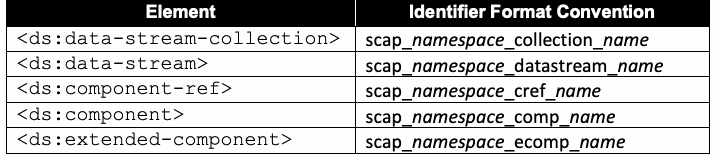
抽出したテキスト（原本と未照合・参考）
| Element | Identifier Format Convention |
| <ds:data-stream-collection> | scap_namespace_collection_name |
| <ds:data-stream> | scap_namespace_datastream_name |
| <ds:component-ref> | scap_namespace_cref_name |
| <ds:component> | scap_namespace_comp_name |
| <ds:extended-component> | scap_namespace_ecomp_name |
抽出したテキストの訳（原本と未照合・参考）
| 要素 | 識別子形式規約 |
| <ds:data-stream-collection> | scap_namespace_collection_name |
| <ds:data-stream> | scap_namespace_datastream_name |
| <ds:component-ref> | scap_namespace_cref_name |
| <ds:component> | scap_namespace_comp_name |
| <ds:extended-component> | scap_namespace_ecomp_name |
Authors SHALL follow these conventions because they preserve the global uniqueness of the resulting identifiers. In Table 15, namespace contains a valid reverse-DNS-style string (limited to letters, numbers, periods, and the hyphen character) that is associated with the content author. Examples include “com.acme.finance” and “gov.tla.” These namespace strings MAY have any number of parts, and SCAP content consumers processing them SHALL treat them as case-insensitive (e.g., com.ABC is considered identical to com.abc). The name in the format conventions SHALL be an NCName-compliant string [XMLS].
作成者はこれらの規約に従わなければならない（SHALL）。これらの規約により、得られる識別子のグローバルな一意性が保たれるからである。表15において、namespaceは、コンテンツ作成者に関連付けられた有効な逆DNS形式の文字列（英字、数字、ピリオド、ハイフン文字に限る）を含む。例として“com.acme.finance”や“gov.tla”がある。これらのnamespace文字列は任意の数の部分を持ってもよく（MAY）、それらを処理するSCAPコンテンツ利用者は大文字と小文字を区別せずに扱わなければならない（SHALL）（例：com.ABCはcom.abcと同一とみなされる）。形式の規約におけるnameは、NCNameに準拠した文字列でなければならない（SHALL）[XMLS]。
3.2. Extensible Configuration Checklist Description Format (XCCDF)
3.2. Extensible Configuration Checklist Description Format (XCCDF)
This section lists requirements and recommendations for using the Extensible Configuration Checklist Description Format (XCCDF) to express an XCCDF benchmark or tailoring component of an SCAP source data stream (see Table 14). They are organized by the following categories: general, <xccdf:Benchmark>, <xccdf:Profile>, <xccdf:Rule>, <xccdf:Value>, and <xccdf:Group>.
本節では、Extensible Configuration Checklist Description Format（XCCDF）を用いて、SCAPソースデータストリームのXCCDFベンチマークまたはテーラリングのコンポーネントを表現するための要件と推奨事項を示す（表14を参照）。これらは、一般、<xccdf:Benchmark>、<xccdf:Profile>、<xccdf:Rule>、<xccdf:Value>、<xccdf:Group>というカテゴリに分けて整理している。
3.2.1. General
3.2.1. 全般
The @xml:base attribute SHALL NOT be allowed in XCCDF content. This attribute is not compatible with the SCAP data stream model.
XCCDFコンテンツでは@xml:base属性を許可してはならない（SHALL NOT）。この属性はSCAPデータストリームモデルと互換性がない。
Descriptive information within XCCDF MAY be used by SCAP products to assist in selecting the appropriate SCAP data stream, ensure that the most recent or correct version of an XCCDF document is used, and provide additional information about the document. The following requirements and conventions apply to the <xccdf:Benchmark>, <xccdf:Profile>, <xccdf:Value>, <xccdf:Group>, and <xccdf:Rule> elements:
XCCDF内の記述的な情報は、SCAP製品が、適切なSCAPデータストリームの選択を支援し、XCCDF文書の最新版または正しい版が使用されるようにし、文書に関する追加情報を提供するために使用してもよい（MAY）。<xccdf:Benchmark>、<xccdf:Profile>、<xccdf:Value>、<xccdf:Group>、<xccdf:Rule>の各要素には、以下の要件と規約が適用される。
•1. One or more instances of the <xccdf:title> element SHALL be provided. Each instance SHALL contain a text value that briefly indicates the purpose of the containing element.
•1. <xccdf:title>要素のインスタンスを一つ以上提供しなければならない（SHALL）。各インスタンスは、それを含む要素の目的を簡潔に示すテキスト値を含まなければならない（SHALL）。
•2. One or more instances of the <xccdf:description> element SHALL be provided. Each instance SHALL contain a text value that describes the purpose of the containing element.
•2. <xccdf:description>要素のインスタンスを一つ以上提供しなければならない（SHALL）。各インスタンスは、それを含む要素の目的を説明するテキスト値を含まなければならない（SHALL）。
XInclude elements SHALL NOT be included in XCCDF content [XINCLUDE].
XInclude 要素は XCCDF コンテンツに含めてはならない（SHALL NOT）[XINCLUDE]。
All remaining OPTIONAL elements in the XCCDF schema MAY be included at the author’s discretion unless otherwise noted in this document.
本書で特に注記のない限り、XCCDF スキーマにおける残りのすべての OPTIONAL 要素は、作成者の裁量で含めてもよい（MAY）。
3.2.2. The <xccdf:Benchmark> Element
3.2.2. <xccdf:Benchmark> 要素
The following requirements and recommendations apply to the <xccdf:Benchmark> element:
<xccdf:Benchmark>要素には、以下の要件と推奨事項が適用される。
•1. The <xccdf:version> element and the @id attribute SHALL be used together to uniquely identify all revisions of a benchmark.
•1. <xccdf:version>要素と@id属性は、ベンチマークのすべての改訂版を一意に識別するために併せて使用しなければならない（SHALL）。
•a. Multiple revisions of a single benchmark SHOULD have the same @id attribute value and different <xccdf:version> element values so that someone who reviews the revisions can readily identify them as multiple versions of a single benchmark.
•a. 単一のベンチマークの複数の改訂版は、同じ@id属性値と異なる<xccdf:version>要素値を持つべきである（SHOULD）。そうすることで、改訂版を確認する者が、それらを単一のベンチマークの複数の版として容易に識別できる。
b.Multiple revisions of a single benchmark SHOULD have <xccdf:version> element values that indicate the revision sequence so that the history of changes from the original benchmark can be determined.
b.翻訳準備中
c.The @time attribute of the <xccdf:version> element SHOULD be used for a timestamp of when the benchmark was defined.
c.翻訳準備中
2.The @update attribute of the <xccdf:version> element SHOULD be used for a URI that specifies where updates to the benchmark can be obtained.
2.翻訳準備中
3.The <xccdf:Benchmark> element SHALL have an @xml:lang attribute.
3.翻訳準備中
4.The @style attribute SHOULD have the value “SCAP_1.4.”
4.翻訳準備中
5.The <xccdf:status> element SHALL indicate the current status of the benchmark document. The associated text value SHALL be “draft” for documents released in public draft state and “accepted” for documents that have been officially released by an organization. The @date attribute SHALL be populated with the date of the status change. Additional <xccdf:status> elements MAY be included to indicate historic status transitions.
5.翻訳準備中
6.The <xccdf:metadata> element SHALL be provided and SHALL, at minimum, contain the Dublin Core [DCES] terms from Table 16. If provided, additional Dublin Core terms SHALL follow the required terms within the element sequence.
6.翻訳準備中
Table 16. Use of Dublin Core terms in <xccdf:metadata>
表16. <xccdf:metadata>におけるダブリンコア用語の使用
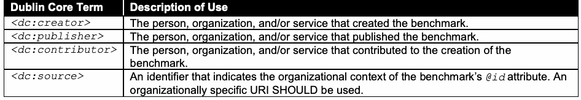
抽出したテキスト（原本と未照合・参考）
| Dublin Core Term | Description of Use |
| <dc:creator> | The person, organization, and/or service that created the benchmark. |
| <dc:publisher> | The person, organization, and/or service that published the benchmark. |
| <dc:contributor> | The person, organization, and/or service that contributed to the creation of the benchmark. |
| <dc:source> | An identifier that indicates the organizational context of the benchmark’s @id attribute. An organizationally specific URI SHOULD be used. |
抽出したテキストの訳（原本と未照合・参考）
| ダブリンコア用語 | 用途の説明 |
| <dc:creator> | ベンチマークを作成した人、組織、および／またはサービス。 |
| <dc:publisher> | ベンチマークを公開した人、組織、および／またはサービス。 |
| <dc:contributor> | ベンチマークの作成に貢献した人、組織、および／またはサービス。 |
| <dc:source> | ベンチマークの@id属性の組織的コンテキストを示す識別子。組織固有のURIを使用すべきである（SHOULD）。 |
3.2.3. The <xccdf:Profile> Element
3.2.3. <xccdf:Profile>要素
As stated in the XCCDF specification, the use of an <xccdf:Profile> element is not required, even though SCAP content commonly uses it.
翻訳準備中
Use of the <xccdf:set-complex-value> element within the <xccdf:Profile> element SHALL NOT be allowed. Use of complex values is disallowed because the behavior for mapping XCCDF complex values to OVAL variables is not defined.
<xccdf:Profile>要素内での<xccdf:set-complex-value>要素の使用は許可されてはならない（SHALL NOT）。XCCDFの複合値をOVAL変数にマッピングするための動作が定義されていないため、複合値の使用は許可されない。
3.2.4. The <xccdf:Rule> Element
3.2.4. <xccdf:Rule>要素
The following requirements and recommendations apply to the <xccdf:Rule> element. The topics they address are <xccdf:ident> elements, <xccdf:check> elements, patching up-to-date rules, and CVSS and CCSS scores.
翻訳準備中
3.2.4.1. The <xccdf:ident> Element
3.2.4.1. <xccdf:ident> 要素
Each <xccdf:Rule> element SHALL include an <xccdf:ident> element that contains a CVE, CCE, or CPE identifier reference if an appropriate identifier exists. The meaning of the identifier SHALL be consistent with the recommendation implemented by the <xccdf:Rule> element. The <xccdf:ident> element content SHALL match the corresponding CVE, CCE, or CPE identifier found in the associated OVAL definitions if the rule references an OVAL definition, if an appropriate identifier exists, and if that OVAL definition is the only input to the rule’s final result.
適切な識別子が存在する場合、各 <xccdf:Rule> 要素は、CVE、CCE、またはCPE識別子参照を含む <xccdf:ident> 要素を含めなければならない（SHALL）。その識別子の意味は、<xccdf:Rule> 要素によって実装される推奨事項と一致していなければならない（SHALL）。ルールがOVAL定義を参照し、適切な識別子が存在し、かつそのOVAL定義がルールの最終結果に対する唯一の入力である場合、<xccdf:ident> 要素の内容は、関連するOVAL定義で見つかる対応するCVE、CCE、またはCPE識別子と一致しなければならない（SHALL）。
When referencing a CVE, CCE, or CPE identifier, an <xccdf:Rule> element SHALL have a purpose consistent with one of the rows in Table 17.
CVE、CCE、またはCPEの識別子を参照する場合、<xccdf:Rule>要素は、表17のいずれかの行と整合する目的を持たなければならない（SHALL）。
Table 17. <xccdf:Rule> and <xccdf:ident> element values
表17. <xccdf:Rule> および <xccdf:ident> 要素の値
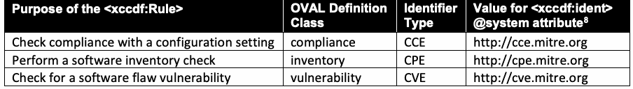
抽出したテキスト（原本と未照合・参考）
| Purpose of the <xccdf:Rule> | OVAL Definition | Identifier | Value for <xccdf:ident> |
| Class | Type | @system attribute8 | |
| Check compliance with a configuration setting | compliance | CCE | http://cce.mitre.org |
| Perform a software inventory check | inventory | CPE | http://cpe.mitre.org |
| Check for a software flaw vulnerability | vulnerability | CVE | http://cve.mitre.org |
抽出したテキストの訳（原本と未照合・参考）
| <xccdf:Rule> の目的 | OVAL定義 | 識別子 | <xccdf:ident> の値 |
| クラス | タイプ | @system 属性8 | |
| 構成設定への準拠を確認する | compliance | CCE | http://cce.mitre.org |
| ソフトウェアインベントリチェックを実行する | inventory | CPE | http://cpe.mitre.org |
| ソフトウェアの欠陥の脆弱性を確認する | vulnerability | CVE | http://cve.mitre.org |
Based on the purpose of the <xccdf:Rule> element, the <xccdf:Rule> SHALL define its <xccdf:ident> element’s @system attribute using the corresponding value from Table 17. Also, if the <xccdf:Rule> element references an OVAL definition, it SHALL reference an OVAL definition of the specified class.
<xccdf:Rule>要素の目的に基づき、<xccdf:Rule>は、表17の対応する値を用いて、その<xccdf:ident>要素の@system属性を定義しなければならない（SHALL）。また、<xccdf:Rule>要素がOVAL定義を参照する場合は、指定されたクラスのOVAL定義を参照しなければならない（SHALL）。
Here is a partial example of a rule intended to check compliance with a configuration setting:
構成設定への準拠を確認することを目的としたルールの一部例を以下に示す。
<xccdf:Rule id="xccdf_gov.nist.fdcc.xp_value_AuditAccountLogonEvents"> … <xccdf:ident system="http://cce.mitre.org">CCE-3867-0</xccdf:ident> … </xccdf:Rule>
<xccdf:Rule id="xccdf_gov.nist.fdcc.xp_value_AuditAccountLogonEvents"> … <xccdf:ident system="http://cce.mitre.org">CCE-3867-0</xccdf:ident> … </xccdf:Rule>
See Sec. 4.5.1 for information on the meaning of a “pass/fail” rule result relating to each of the identifier types in Table 17. All rules that contain CCE, CPE, or CVE entries in their <xccdf:ident> elements SHALL obey these meanings. As a result, such <xccdf:ident> elements SHALL only be included if the recommendation is identical to these associated meanings or if they have a @con:negate attribute (as described in Sec. 4.5.1) set to comply with the intended meaning (by default, @con:negate is set to false). In SCAP, an <xccdf:ident> element is not simply a reference to related material — it is a declaration of exact alignment with the described meanings.
表17の各識別子の種類に関する「pass/fail」のルール結果の意味については、4.5.1節を参照すること。<xccdf:ident>要素にCCE、CPE、またはCVEのエントリを含むすべてのルールは、これらの意味に従わなければならない（SHALL）。したがって、そのような<xccdf:ident>要素は、推奨事項がこれらの関連する意味と同一である場合、または意図された意味に合致するよう設定された@con:negate属性（4.5.1節で説明）を持つ場合にのみ含めなければならない（SHALL）（デフォルトでは、@con:negateはfalseに設定される）。SCAPにおいて、<xccdf:ident>要素は単なる関連資料への参照ではなく、記述された意味と厳密に一致することの宣言である。
An <xccdf:ident> element referencing a CVE, CCE, or CPE identifier SHALL be ordered before other <xccdf:ident> elements referencing non-SCAP identifiers. Identifiers from previous revisions of CCE or CPE MAY also be specified following the SCAP identifiers.
CVE、CCE、またはCPEの識別子を参照する<xccdf:ident>要素は、SCAP以外の識別子を参照する他の<xccdf:ident>要素よりも前に配置しなければならない（SHALL）。CCEまたはCPEの以前の改訂版の識別子を、SCAPの識別子の後に指定してもよい（MAY）。
3.2.4.2. The <xccdf:check> Element
3.2.4.2. <xccdf:check>要素
The following requirements and recommendations apply to the <xccdf:check> element:
<xccdf:check>要素には、以下の要件と推奨事項が適用される。
•1. The <xccdf:check-content> element SHALL NOT be used to embed check content directly into XCCDF content.
•1. <xccdf:check-content>要素を用いて、チェックコンテンツをXCCDFコンテンツに直接埋め込んではならない（SHALL NOT）。
•2. At least one <xccdf:check-content-ref> element SHALL be provided for each <xccdf:check> element.
•2. 各<xccdf:check>要素に対して、少なくとも一つの<xccdf:check-content-ref>要素を提供しなければならない（SHALL）。
•3. When evaluating an <xccdf:check-content-ref> element within an <xccdf:check> element, its @href attribute SHALL contain a “#” and the @id of a <ds:component-ref> element or SHALL be resolved in the context of the XML Catalog specified as part of the <ds:component-ref> element that is referencing this benchmark. In either case, the @href attribute SHALL ultimately resolve to a <ds:component-ref> element in the data stream referencing the benchmark containing this <xccdf:check-content-ref> element. See Sec. 3.1.1 for additional information on <ds:component-ref> resolution.
•3. <xccdf:check>要素内の<xccdf:check-content-ref>要素を評価する際、その@href属性は、“#”と<ds:component-ref>要素の@idを含まなければならない（SHALL）か、またはこのベンチマークを参照している<ds:component-ref>要素の一部として指定されたXML Catalogの文脈で解決されなければならない（SHALL）。いずれの場合も、@href属性は最終的に、この<xccdf:check-content-ref>要素を含むベンチマークを参照するデータストリーム内の<ds:component-ref>要素に解決されなければならない（SHALL）。<ds:component-ref>の解決に関する追加情報については、3.1.1節を参照すること。
This version of SCAP supports the use of only OVAL and/or OCIL-checking systems in SCAP-conformant content. Use of these checking systems SHALL be restricted as follows:
このバージョンのSCAPは、SCAP準拠コンテンツにおいて、OVALおよび/またはOCILのチェックシステムの使用のみをサポートする。これらのチェックシステムの使用は、次のとおり制限されなければならない（SHALL）。
•1. OVAL checking system
•1. OVALチェックシステム
•i. Use of the OVAL checking system SHALL be indicated by setting the <xccdf:check> element’s @system attribute to http://oval.mitre.org/XMLSchema/oval-definitions-5.
•i. OVALチェックシステムの使用は、<xccdf:check>要素の@system属性をhttp://oval.mitre.org/XMLSchema/oval-definitions-5に設定することによって示さなければならない（SHALL）。
•ii. The @href attribute in the <xccdf:check-content-ref> element SHALL reference an OVAL source data stream component using the <ds:component-ref> approach defined above.
•ii. <xccdf:check-content-ref>要素の@href属性は、上記で定義した<ds:component-ref>の方式を用いて、OVALソースデータストリームコンポーネントを参照しなければならない（SHALL）。
•iii. Use of the @name attribute in the <xccdf:check-content-ref> element is OPTIONAL. If present, it SHALL reference an OVAL definition in the designated OVAL source data stream component. Otherwise, see Sec. 4.5.2 for information on the use of the @multi-check attribute.
•iii. <xccdf:check-content-ref>要素における@name属性の使用は任意（OPTIONAL）である。存在する場合、それは指定されたOVALソースデータストリームコンポーネント内のOVAL定義を参照しなければならない（SHALL）。存在しない場合は、@multi-check属性の使用に関する情報について4.5.2節を参照すること。
•2. OCIL-checking system
•2. OCILチェックシステム
•i. OCIL questionnaires SHOULD NOT be used if OVAL can perform the same check correctly.
•i. OVALが同じチェックを正しく実行できる場合は、OCILの質問票を使用すべきではない（SHOULD NOT）。
•ii. Use of the OCIL checking system SHALL be indicated by setting the <xccdf:check> element’s @system attribute to http://scap.nist.gov/schema/ocil/2.0.
•ii. OCILチェックシステムの使用は、<xccdf:check>要素の@system属性をhttp://scap.nist.gov/schema/ocil/2.0に設定することによって示さなければならない（SHALL）。
•iii. The @href attribute in the <xccdf:check-content-ref> element SHALL reference an OCIL source data stream component using the <ds:component-ref> approach defined above.
•iii. <xccdf:check-content-ref>要素の@href属性は、上記で定義した<ds:component-ref>の方式を用いて、OCILソースデータストリームコンポーネントを参照しなければならない（SHALL）。
•iv. Use of the @name attribute in the <xccdf:check-content-ref> element is OPTIONAL. If present, it SHALL reference an OCIL questionnaire in the designated OCIL source data stream component. Otherwise, see Sec. 4.5.2 for information on the use of the @multi-check attribute.
•翻訳準備中
OPTIONAL. If present, it SHALL reference an OCIL questionnaire in the designated OCIL source data stream component. Otherwise, see Sec. 4.5.2 for information on the use of the @multi-check attribute. v. All requirements in Appendix B of NIST Interagency Report (IR) 7692, Specifications for the Open Checklist Interactive Language (OCIL) Version 2.0 [OCIL], SHALL be followed.
OPTIONALである。存在する場合、それは指定されたOCILソースデータストリームコンポーネント内のOCIL質問票を参照しなければならない（SHALL）。それ以外の場合は、@multi-check属性の使用に関する情報についてセクション4.5.2を参照すること。v. NIST Interagency Report (IR) 7692「Specifications for the Open Checklist Interactive Language (OCIL) Version 2.0」[OCIL]の付録Bにあるすべての要件に従わなければならない（SHALL）。
A checking system that is not supported by SCAP MAY be used in XCCDF content. There is no guarantee that an SCAP implementation will be capable of processing any additional checking system data used in this content. To ensure interoperability, SCAP has standardized the use of OVAL and OCIL-checking systems. Content containing the use of checking systems other than the OVAL and OCIL-checking systems SHALL NOT be considered well-formed with regard to SCAP.
SCAPがサポートしていないチェックシステムをXCCDFコンテンツで使用してもよい（MAY）。ただし、SCAPの実装が、そのようなコンテンツで使用される追加のチェックシステムのデータを処理できるという保証はない。相互運用性を確保するため、SCAPはOVALおよびOCILのチェックシステムの使用を標準化している。OVALおよびOCIL以外のチェックシステムを使用するコンテンツは、SCAPに関して整形式とみなしてはならない（SHALL NOT）。
3.2.4.3. Use of a Patches Up-To-Date Rule
3.2.4.3. パッチ最新化ルールの使用
An OVAL source data stream component MAY be used to represent a series of checks to verify that patches have been installed. Historically, an XCCDF convention has been used to identify such a reference. An XCCDF benchmark MAY include a patches up-to-date rule that SHALL reference an OVAL source data stream component.
パッチがインストールされていることを検証するための一連のチェックを表すために、OVALソースデータストリームコンポーネントを使用してもよい（MAY）。歴史的には、このような参照を特定するためにXCCDFの慣例が使用されてきた。XCCDFベンチマークには、OVALソースデータストリームコンポーネントを参照しなければならない（SHALL）パッチ最新化ルールを含めてもよい（MAY）。
When implementing a patches up-to-date XCCDF rule that checks for patches via numerous OVAL patch class definitions, the following approach SHALL be used:
多数のOVAL patchクラス定義を介してパッチをチェックするパッチ最新XCCDFルールを実装する場合、以下のアプローチを使用しなければならない（SHALL）。
1.The source data stream SHALL include the OVAL source data stream component referenced by the patches up-to-date rule, which contains one or more OVAL patch class definitions and MAY contain other class definitions.
1.ソースデータストリームは、パッチ最新化ルールによって参照されるOVALソースデータストリームコンポーネントを含まなければならず（SHALL）、これには1つ以上のOVALパッチクラス定義が含まれ、他のクラス定義を含んでもよい（MAY）。
•2. The <xccdf:Rule> element that references an OVAL source data stream component SHALL have the @id attribute value of xccdf_NAMESPACE_rule_security_patches_up_to_date, where NAMESPACE is the reverse DNS format namespace associated with the content maintainer.
•2. OVALソースデータストリームコンポーネントを参照する<xccdf:Rule>要素は、@id属性値としてxccdf_NAMESPACE_rule_security_patches_up_to_dateを持たなければならない（SHALL）。ここで、NAMESPACEはコンテンツ保守者に関連付けられた逆DNS形式の名前空間である。
•3. Each <xccdf:check-content-ref> element SHALL omit the @name attribute.
•3. 各<xccdf:check-content-ref>要素は、@name属性を省略しなければならない（SHALL）。
•4. The @multi-check attribute of the <xccdf:check> element SHALL be set to “true.” This causes a separate <xccdf:rule-result> to be generated for each OVAL patch definition. See Sec. 4.5.2 for more information.
•4. <xccdf:check>要素の@multi-check属性は、“true”に設定しなければならない（SHALL）。これにより、OVALのパッチ定義ごとに個別の<xccdf:rule-result>が生成される。詳細は4.5.2節を参照すること。
Use of this approach allows for the individual OVAL patch definitions to be easily identified along with the XCCDF rule checking whether patches are up to date.
このアプローチを使用することにより、パッチが最新であるかどうかをチェックするXCCDFルールとともに、個々のOVALパッチ定義を容易に特定できるようになる。
The following example of a patches up-to-date rule references numerous OVAL patch class definitions:
多数のOVALパッチクラス定義を参照するパッチ最新化ルールの例を以下に示す。
<xccdf:Rule id="xccdf_gov.nist.usgcb.win_rule_security_patches_up_to_date" selected="true"> <xccdf:title>Security Patches Up-To-Date</xccdf:title> <xccdf:description>Keep systems up to current patch levels</xccdf:description> <xccdf:check system="http://oval.mitre.org/XMLSchema/oval-definitions-5" multi-check="true"> <xccdf:check-content-ref href="scap-windows-patches"/> </xccdf:check> </xccdf:Rule>
<xccdf:Rule id="xccdf_gov.nist.usgcb.win_rule_security_patches_up_to_date" selected="true"> <xccdf:title>Security Patches Up-To-Date</xccdf:title> <xccdf:description>Keep systems up to current patch levels</xccdf:description> <xccdf:check system="http://oval.mitre.org/XMLSchema/oval-definitions-5" multi-check="true"> <xccdf:check-content-ref href="scap-windows-patches"/> </xccdf:check> </xccdf:Rule>
When implementing a patches up-to-date XCCDF rule that checks for patches via a single OVAL patch class definition, the following approach SHALL be used:
単一のOVALパッチクラス定義によってパッチを確認する、パッチ適用状況が最新であるかを判定するXCCDFルールを実装する場合は、次の方式を用いなければならない（SHALL）。
1.The source data stream SHALL include the OVAL source data stream component referenced by the patches up-to-date rule, which contains one or more OVAL patch class definitions and MAY contain other class definitions.
1.ソースデータストリームは、パッチ最新化ルールによって参照されるOVALソースデータストリームコンポーネントを含まなければならず（SHALL）、これには1つ以上のOVALパッチクラス定義が含まれ、他のクラス定義を含んでもよい（MAY）。
•2. The <xccdf:Rule> element that references an OVAL source data stream component SHALL have the @id attribute value of xccdf_NAMESPACE_rule_security_patches_up_to_date, where NAMESPACE is the reverse DNS format namespace associated with the content maintainer.
•2. OVALソースデータストリームコンポーネントを参照する<xccdf:Rule>要素は、@id属性値としてxccdf_NAMESPACE_rule_security_patches_up_to_dateを持たなければならない（SHALL）。ここで、NAMESPACEはコンテンツ保守者に関連付けられた逆DNS形式の名前空間である。
•3. Each <xccdf:check-content-ref> element SHALL refer to the single OVAL definition performing the patches up-to-date check.
•3. 各<xccdf:check-content-ref>要素は、パッチ適用状況が最新であるかのチェックを実行する単一のOVAL定義を参照しなければならない（SHALL）。
•4. The @multi-check attribute of the <xccdf:check> element SHALL be set to “false,” which is the default value.
•4. <xccdf:check>要素の@multi-check属性は、デフォルト値である“false”に設定しなければならない（SHALL）。
Use of a single OVAL patch definition provides for easier content maintenance and makes it easy to identify both the XCCDF rule and the patch class definition used for checking whether patches are up to date.
単一のOVALパッチ定義を使用することで、コンテンツの保守が容易になり、パッチが最新であるかどうかを確認するために使用されるXCCDFルールとパッチクラス定義の両方を特定しやすくなる。
Here is a patches up-to-date rule example that references a single OVAL patch class definition:
以下は、単一のOVALパッチクラス定義を参照するパッチ最新化ルールの例である。
<xccdf:Rule id="xccdf_gov.nist.usgcb.win_rule_security_patches_up_to_date" selected="true"> <xccdf:title>Security Patches Up-To-Date</xccdf:title> <xccdf:description>Keep systems up to current patch levels</xccdf:description> <xccdf:check system="http://oval.mitre.org/XMLSchema/oval-definitions-5" multi-check="false"> <xccdf:check-content-ref href="scap-windows-patches" name="oval:gov.nist.usgcb.win.patch:def:10101"/> </xccdf:check> </xccdf:Rule>
<xccdf:Rule id="xccdf_gov.nist.usgcb.win_rule_security_patches_up_to_date" selected="true"> <xccdf:title>Security Patches Up-To-Date</xccdf:title> <xccdf:description>Keep systems up to current patch levels</xccdf:description> <xccdf:check system="http://oval.mitre.org/XMLSchema/oval-definitions-5" multi-check="false"> <xccdf:check-content-ref href="scap-windows-patches" name="oval:gov.nist.usgcb.win.patch:def:10101"/> </xccdf:check> </xccdf:Rule>
3.2.4.4. CVSS and CCSS Scores
3.2.4.4. CVSSおよびCCSSスコア
SCAP 1.0 required the inclusion of static CVSS scores in XCCDF vulnerability-related rules. However, CVSS base scores sometimes change over time (e.g., when more information is available about a particular vulnerability), and CVSS temporal and environmental scores are intended to change to reflect current threats, security controls, and other factors. As a result, the practice of embedding CVSS scores in XCCDF content was no longer required starting with SCAP 1.1.
SCAP 1.0では、XCCDFの脆弱性関連のルールに静的なCVSSスコアを含めることが求められていた。しかし、CVSSの基本スコアは時間の経過とともに変わることがあり（例：特定の脆弱性についてより多くの情報が得られた場合）、CVSSの現状スコアと環境スコアは、現在の脅威、セキュリティ管理策、その他の要因を反映して変化することが意図されている。その結果、SCAP 1.1以降、XCCDFコンテンツにCVSSスコアを埋め込む慣行は必須ではなくなった。
During scoring, current CVSS scores acquired dynamically, such as from a data feed, SHOULD be used in place of the @weight attribute within XCCDF vulnerability-related rules. Section 3.8 contains additional requirements for CVSS usage.
スコアリングの際には、データフィードなどから動的に取得した最新のCVSSスコアを、XCCDFの脆弱性関連のルール内の@weight属性の代わりに使用すべきである（SHOULD）。CVSSの使用に関する追加の要件は3.8節に示す。
CCSS scores are more stable than CVSS scores, but they still may change over time. Accordingly, during scoring, current CCSS scores acquired dynamically, such as from a data feed, MAY be used in place of the @weight attribute within XCCDF configuration setting-related rules. Section 3.9 contains additional requirements for CCSS usage.
CCSSスコアはCVSSスコアよりも安定しているが、それでも時間の経過とともに変わる可能性がある。したがって、スコアリングの際には、データフィードなどから動的に取得した最新のCCSSスコアを、XCCDFの設定項目関連のルール内の@weight属性の代わりに使用してもよい（MAY）。CCSSの使用に関する追加の要件は3.9節に示す。
For both the CVSS and CCSS cases, this specification encourages the use of data feeds that can be updated over time. The specifics around scoring provided in this and referenced sections are intended to prevent potential misuse of the XCCDF @weight attribute within an SCAP data stream.
CVSSとCCSSのいずれの場合も、本仕様は、時間の経過とともに更新できるデータフィードの使用を推奨する。本節および参照先の節で示すスコアリングに関する詳細は、SCAPデータストリーム内でXCCDFの@weight属性が誤用される可能性を防ぐことを意図している。
SCAP 1.4 supports CVSS v3.1 and CVSS v4.0 as defined in [CVSS-3.1] and [CVSS-4.0] respectively, and continues to recognize CVSS v3.0 [CVSS-3.0] and CVSS v2.0 [CVSS-2.0] as legacy versions for pre-existing vulnerability data only. When more than one CVSS score is available for a given vulnerability from an authoritative source (such as the NIST National Vulnerability Database CVE feed referenced in Sec. 3.7), SCAP-conformant products SHOULD apply the version-precedence rule defined in Sec. 3.8 - that is, products SHOULD prefer a CVSS v4.0 score over a CVSS v3.1 score, SHOULD prefer a CVSS v3.1 score over a CVSS v3.0 score, and SHOULD prefer a CVSS v3.0 score over a CVSS v2.0 score. This further supports the use of updatable data feeds to provide current CVSS information. As acknowledged in prior revisions of this specification, XCCDF does not provide a means to indicate which CVSS version was used when calculating an XCCDF score; this is a recognized weakness in the XCCDF specification. As a result, tool developers are encouraged not to rely solely on the scoring information embedded in an SCAP checklist for downstream risk decisions, and SHOULD instead recompute or revalidate CVSS scores against the latest authoritative source at evaluation time.
SCAP 1.4は、それぞれ[CVSS-3.1]および[CVSS-4.0]で定義されるCVSS v3.1およびCVSS v4.0をサポートし、CVSS v3.0 [CVSS-3.0]およびCVSS v2.0 [CVSS-2.0]については、既存の脆弱性データに限り、レガシーバージョンとして引き続き認める。ある脆弱性について、権威ある情報源（3.7節で参照するNIST National Vulnerability DatabaseのCVEフィードなど）から複数のCVSSスコアが得られる場合、SCAP準拠製品は3.8節で定義するバージョン優先順位の規則を適用すべきである（SHOULD）。すなわち、製品はCVSS v3.1のスコアよりもCVSS v4.0のスコアを優先すべきであり（SHOULD）、CVSS v3.0のスコアよりもCVSS v3.1のスコアを優先すべきであり（SHOULD）、CVSS v2.0のスコアよりもCVSS v3.0のスコアを優先すべきである（SHOULD）。これは、最新のCVSS情報を提供するために更新可能なデータフィードを使用することをさらに後押しする。本仕様の以前の改訂版でも認めているとおり、XCCDFには、XCCDFスコアの計算時にどのCVSSバージョンが使用されたかを示す手段がない。これはXCCDF仕様の既知の弱点である。したがって、ツール開発者は、後続のリスク判断においてSCAPチェックリストに埋め込まれたスコアリング情報のみに依存しないことが推奨され、代わりに評価時に最新の権威ある情報源に照らしてCVSSスコアを再計算または再検証すべきである（SHOULD）。
3.2.5. The <xccdf:Value> Element
3.2.5. <xccdf:Value>要素
Use of the <xccdf:source>, <xccdf:complex-value>, and <xccdf:complex-default> elements within the <xccdf:Value> element SHALL NOT be allowed. Within the <xccdf:choices> element of the <xccdf:Value> element, use of the <xccdf:complex-choice> element SHALL NOT be allowed. Use of complex values is disallowed because the behavior for mapping XCCDF complex values to OVAL variables is not defined.
<xccdf:Value>要素内で<xccdf:source>、<xccdf:complex-value>、<xccdf:complex-default>の各要素を使用することは許可してはならない（SHALL NOT）。<xccdf:Value>要素の<xccdf:choices>要素内では、<xccdf:complex-choice>要素の使用を許可してはならない（SHALL NOT）。XCCDFの複合値をOVAL変数に対応付ける際の動作が定義されていないため、複合値の使用は認められない。
One or more <xccdf:check-export> elements MAY be used to define the binding of <xccdf:Value> elements to OVAL variables. The format of the <xccdf:check-export> element is:
<xccdf:Value>要素とOVAL変数との結び付けを定義するために、一つ以上の<xccdf:check-export>要素を使用してもよい（MAY）。<xccdf:check-export>要素の形式は次のとおりである。
<xccdf:check-export value-id="XCCDF_Value_id" export-name="OVAL_External_Variable_id"/>
<xccdf:check-export value-id="XCCDF_Value_id" export-name="OVAL_External_Variable_id"/>
The following <xccdf:check> element example demonstrates the use of this convention:
次の<xccdf:check>要素の例は、この規約の使用方法を示す。
<xccdf:check system="http://oval.mitre.org/XMLSchema/oval-definitions-5"> <xccdf:check-export value-id="xccdf_gov.nist.fdcc.xp_value_NoSlowLink" export-name="oval:gov.nist.fdcc.xp:var:66711"/> <xccdf:check-export value-id="xccdf_gov.nist.fdcc.xp_value_NoBackgroundPolicy" export-name="oval:gov.nist.fdcc.xp:var:66712"/> <xccdf:check-export value-id="xccdf_gov.nist.fdcc.xp_value_NoGPOListChanges" export-name="oval:gov.nist.fdcc.xp:var:66713"/> <xccdf:check-content-ref href="fdcc-winxp-oval.xml" name="oval:gov.nist.fdcc.xp:def:6671"/> </xccdf:check>
<xccdf:check system="http://oval.mitre.org/XMLSchema/oval-definitions-5"> <xccdf:check-export value-id="xccdf_gov.nist.fdcc.xp_value_NoSlowLink" export-name="oval:gov.nist.fdcc.xp:var:66711"/> <xccdf:check-export value-id="xccdf_gov.nist.fdcc.xp_value_NoBackgroundPolicy" export-name="oval:gov.nist.fdcc.xp:var:66712"/> <xccdf:check-export value-id="xccdf_gov.nist.fdcc.xp_value_NoGPOListChanges" export-name="oval:gov.nist.fdcc.xp:var:66713"/> <xccdf:check-content-ref href="fdcc-winxp-oval.xml" name="oval:gov.nist.fdcc.xp:def:6671"/> </xccdf:check>
The type and value binding of the specified <xccdf:Value> is constrained to match the lexical representation of the indicated OVAL Variable data type. Table 18 summarizes the constraints regarding data type usage.
指定された<xccdf:Value>の型と値の結び付けは、示されたOVAL変数のデータ型の字句表現に一致するよう制約される。表18に、データ型の使用に関する制約をまとめる。
Table 18. XCCDF-OVAL data export matching constraints
表 18. XCCDF-OVAL データエクスポート照合制約
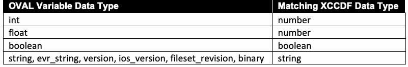
抽出したテキスト（原本と未照合・参考）
| OVAL Variable Data Type | Matching XCCDF Data Type |
| int | number |
| float | number |
| boolean | boolean |
| string, evr_string, version, ios_version, fileset_revision, binary | string |
抽出したテキストの訳（原本と未照合・参考）
| OVAL Variable データ型 | 一致する XCCDF データ型 |
| int | number |
| float | number |
| boolean | boolean |
| string, evr_string, version, ios_version, fileset_revision, binary | string |
Additional information regarding OVAL data types can be found in the OVAL language documentation and the XCCDF specification [XCCDF]. Additional information on OVAL data types may also be added to Sec. 4 of the SCAP 1.4 annex document [SP800-126A].
OVAL データ型に関する追加情報は、OVAL 言語のドキュメントおよび XCCDF 仕様 [XCCDF] に記載されている。また、OVAL データ型に関する追加情報は、SCAP 1.4 付属文書 [SP800-126A] のセクション 4 に追加されることもある。
3.2.6. The <xccdf:Group> Element
3.2.6. <xccdf:Group> 要素
The XCCDF group extension SHALL NOT be allowed.
XCCDF グループ拡張は許可されてはならない（SHALL NOT）。
3.3. Open Vulnerability and Assessment Language (OVAL)
3.3. Open Vulnerability and Assessment Language (OVAL)
This section lists requirements and recommendations for using the Open Vulnerability and Assessment Language (OVAL) to express an OVAL component of an SCAP source data stream (see Table 14).9 Because SCAP 1.4 supports the use of multiple OVAL source data stream components, an SCAP content creator could choose to divide the OVAL definitions into multiple components. For example, a content creator could create one OVAL source data stream component that contains a set of OVAL definitions for one OVAL version (e.g., 5.10.1) and another set of OVAL definitions for a newer OVAL version (e.g., 5.12) if both versions are valid according to SCAP 1.4 requirements. SCAP 1.4 also supports multiple types of OVAL definitions within a single OVAL source data stream component. For example, a benchmark could reference OVAL compliance and vulnerability definitions contained in a single data stream component.
本節では、Open Vulnerability and Assessment Language（OVAL）を用いて、SCAPソースデータストリームのOVALコンポーネントを表現するための要件と推奨事項を示す（表14を参照）。9 SCAP 1.4は複数のOVALソースデータストリームコンポーネントの使用をサポートしているため、SCAPコンテンツ作成者はOVAL定義を複数のコンポーネントに分割することを選択できる。たとえば、コンテンツ作成者は、両方のバージョンがSCAP 1.4の要件に照らして有効であれば、あるOVALバージョン（例：5.10.1）のOVAL定義の集合と、より新しいOVALバージョン（例：5.12）のOVAL定義の別の集合を含む一つのOVALソースデータストリームコンポーネントを作成できる。SCAP 1.4は、単一のOVALソースデータストリームコンポーネント内で複数の種類のOVAL定義を含めることもサポートしている。たとえば、ベンチマークは、単一のデータストリームコンポーネントに含まれるOVALのコンプライアンス定義と脆弱性定義を参照できる。
The version of any particular OVAL document instance SHALL be specified using the <oval:schema_version> content element of the <oval:generator> element, as in this example:
個々のOVAL文書インスタンスのバージョンは、次の例のように、<oval:generator>要素の<oval:schema_version>内容要素を用いて指定しなければならない（SHALL）。
<oval:generator> <oval:product_name>The OVAL Repository</oval:product_name> <oval:schema_version>5.12</oval:schema_version> </oval:generator>
<oval:generator> <oval:product_name>The OVAL Repository</oval:product_name> <oval:schema_version>5.12</oval:schema_version> </oval:generator>
The versions that are specified using the <oval:schema_version> content element SHALL correspond to the versions specified by the @xsi:schemaLocation attribute value for the OVAL schema if an @xsi:schemaLocation attribute is specified.
@xsi:schemaLocation属性が指定されている場合、<oval:schema_version>内容要素を用いて指定するバージョンは、OVALスキーマに対する@xsi:schemaLocation属性値で指定されたバージョンと一致しなければならない（SHALL）。
Some OVAL interpreters make use of the OVAL variable format to allow variable values to be passed to the OVAL interpreter. While the OVAL variable format is not part of an SCAP data stream, this format can be used to carry variable information as part of an SCAP product for non-SCAP-related purposes.
一部のOVALインタープリターは、OVAL変数フォーマットを利用して、変数値がOVALインタープリターに渡されることを可能にしている。OVAL変数フォーマットはSCAPデータストリームの一部ではないが、このフォーマットはSCAP非関連の目的でSCAP製品の一部として変数情報を伝達するために使用できる。
If an <oval-var:oval_variables> element is used to carry variable values between an XCCDF processor and an OVAL processor, the <oval:schema_version> of the <oval-var:oval_variables> element SHALL be the same as that of the <oval-def:oval_definitions> element whose external variables are bound by the <oval-var:oval_variables> element.
XCCDFプロセッサとOVALプロセッサの間で変数値を受け渡すために<oval-var:oval_variables>要素を使用する場合、<oval-var:oval_variables>要素の<oval:schema_version>は、その<oval-var:oval_variables>要素によって外部変数が結び付けられる<oval-def:oval_definitions>要素のものと同じでなければならない（SHALL）。
Required values for the @class attribute of an OVAL definition are as follows:
OVAL定義の@class属性に求められる値は次のとおりである。
1.“Compliance” if it represents a check for the system’s configuration complying with policy requirements (e.g., having the required value for a specific configuration setting)
1.システムの構成がポリシー要件に準拠しているかどうかのチェックを表す場合は「Compliance」（例：特定の構成設定に対して必要な値を持っているなど）
2.“Vulnerability” if it represents a check for the presence of a particular software flaw vulnerability on a system
2.システム上に特定のソフトウェア欠陥の脆弱性が存在するかどうかのチェックを表す場合は「Vulnerability」
3.“Patch” if it represents a check for whether a discrete patch needs to be installed on the system
3.個別のパッチをシステムにインストールする必要があるかどうかのチェックを表す場合は“Patch”
4.“Inventory” if it represents a check for the presence of a product of interest on the system
4.システム上に対象製品が存在するかどうかのチェックを表す場合は“Inventory”
The following requirements apply to particular classes of OVAL definitions:
以下の要件は、OVAL定義の特定のクラスに適用される：
•1. For compliance class definitions:
•1. コンプライアンスクラス定義の場合：
•a. If an OVAL compliance class definition maps to one or more CCE identifiers, the definition SHOULD include <oval-def:reference> elements that reference those identifiers using the following format:
•a. OVALコンプライアンスクラス定義が一つ以上のCCE識別子に対応する場合、その定義は、次の形式を用いてそれらの識別子を参照する<oval-def:reference>要素を含むべきである（SHOULD）。
<oval-def:reference source="http://cce.mitre.org" ref_id="CCE_identifier"/>
<oval-def:reference source="http://cce.mitre.org" ref_id="CCE_identifier"/>
The source attribute SHALL be defined using either “http://cce.mitre.org” (preferred method) or “CCE.”
source属性は、“http://cce.mitre.org”（推奨される方法）または“CCE”のいずれかを用いて定義しなければならない（SHALL）。
b. Definitions that are directly or indirectly extended SHALL be limited to inventory and compliance classes.
b. 直接または間接的に拡張される定義は、インベントリクラスおよびコンプライアンスクラスに限定されなければならない（SHALL）。
•2. For inventory class definitions:
•2. インベントリクラス定義の場合：
•a. If an OVAL inventory class definition maps to one or more CPE identifiers, the definition SHOULD include <oval-def:reference> elements that reference those identifiers using the following format:
•a. OVALインベントリクラス定義が一つ以上のCPE識別子に対応する場合、その定義は、次の形式を用いてそれらの識別子を参照する<oval-def:reference>要素を含むべきである（SHOULD）。
<oval-def:reference source="http://cpe.mitre.org" ref_id="CPE_identifier"/>
<oval-def:reference source="http://cpe.mitre.org" ref_id="CPE_identifier"/>
The source attribute SHALL be defined using either “http://cpe.mitre.org” (preferred method) or “CPE.”
source属性は、“http://cpe.mitre.org”（推奨される方法）または“CPE”のいずれかを用いて定義しなければならない（SHALL）。
b. Definitions that are directly or indirectly extended SHALL be limited to the inventory class.
b. 直接的または間接的に拡張される定義は、インベントリクラスに限定されなければならない（SHALL）。
•3. For patch class definitions:
•3. パッチクラス定義の場合：
•a. If an OVAL patch class definition is associated with a source-specific identifier (e.g., Knowledge Base numbers for Microsoft patches), these identifiers SHOULD be included in <oval-def:reference> elements contained by the definition. For example:
•a. OVALパッチクラス定義が情報源固有の識別子（例：MicrosoftのパッチのKnowledge Base番号）に関連付けられている場合、これらの識別子を、その定義に含まれる<oval-def:reference>要素に含めるべきである（SHOULD）。例を次に示す。
<oval-def:reference source="www.microsoft.com/Patch" ref_id="KB912919"/>
<oval-def:reference source="www.microsoft.com/Patch" ref_id="KB912919"/>
•b. If an OVAL patch class definition maps to one or more CVE identifiers, the definition MAY include <oval-def:reference> elements that reference those identifiers using the following format:
•b. OVALパッチクラス定義が一つ以上のCVE識別子に対応する場合、その定義は、次の形式を用いてそれらの識別子を参照する<oval-def:reference>要素を含んでもよい（MAY）。
<oval-def:reference source="http://cve.mitre.org" ref_id="CVE_identifier"/>
<oval-def:reference source="http://cve.mitre.org" ref_id="CVE_identifier"/>
This recommendation is weaker than its counterparts for the other class definition types because a CVE identifier is not an identifier for a patch; it is more of an association. For example, one patch could fix multiple vulnerabilities, so it would map to multiple CVE identifiers.
この推奨は、他のクラス定義の種類に対応する推奨よりも弱い。CVE識別子はパッチの識別子ではなく、むしろ関連付けに近いものだからである。たとえば、一つのパッチが複数の脆弱性を修正することがあり、その場合、そのパッチは複数のCVE識別子に対応することになる。
The source attribute SHALL be defined using either “http://cve.mitre.org” (preferred method) or “CVE.”
source属性は、“http://cve.mitre.org”（推奨される方法）または“CVE”のいずれかを用いて定義しなければならない（SHALL）。
c. Definitions that are directly or indirectly extended SHALL be limited to inventory and patch classes.
c. 直接的または間接的に拡張される定義は、インベントリおよびパッチクラスに限定されなければならない（SHALL）。
•4. For vulnerability class definitions:
•4. 脆弱性クラス定義の場合：
•a. If an OVAL vulnerability class definition maps to one or more CVE identifiers, the definition SHOULD include <oval-def:reference> elements that reference those identifiers using the following format:
•a. OVAL脆弱性クラス定義が一つ以上のCVE識別子に対応する場合、その定義は、次の形式を用いてそれらの識別子を参照する<oval-def:reference>要素を含むべきである（SHOULD）。
<oval-def:reference source="http://cve.mitre.org" ref_id="CVE_identifier"/>
<oval-def:reference source="http://cve.mitre.org" ref_id="CVE_identifier"/>
The source attribute SHALL be defined using either “http://cve.mitre.org” (preferred method) or “CVE.”
source属性は、“http://cve.mitre.org”（推奨される方法）または“CVE”のいずれかを用いて定義しなければならない（SHALL）。
b. Definitions that are directly or indirectly extended SHALL be limited to inventory and vulnerability classes.
b. 直接的または間接的に拡張される定義は、インベントリおよび脆弱性クラスに限定されなければならない（SHALL）。
5.For miscellaneous class definitions, no additional requirements apply.
5.その他（miscellaneous）クラス定義については、追加の要件は適用されない。
3.4. Open Checklist Interactive Language (OCIL)
3.4. Open Checklist Interactive Language (OCIL)
This section lists recommendations for using the Open Checklist Interactive Language (OCIL) to express an OCIL component of an SCAP source data stream (see Table 14).
本セクションでは、SCAPソースデータストリームのOCILコンポーネントを表現するためにOpen Checklist Interactive Language（OCIL）を使用するための推奨事項を列挙する（表14を参照）。
OCIL content SHOULD be used to check rules that cannot be fully automated with OVAL. For example, a particular software product may not have an application programming interface (API) that supports OVAL use. Another example is performing a check that requires user interaction, such as asking the user to look up information within a management console or to report a serial number affixed to a computing device. OCIL can also be used to collect a user’s own information, such as whether the user participated in a recent security training session.
OVALで完全に自動化できないルールをチェックするには、OCILコンテンツを使用すべきである（SHOULD）。例えば、特定のソフトウェア製品には、OVALの使用をサポートするアプリケーションプログラミングインターフェース（API）がない場合がある。別の例としては、管理コンソール内で情報を検索するようユーザーに求めたり、コンピューティングデバイスに貼付されたシリアル番号を報告するよう求めたりするなど、ユーザーの対話を必要とするチェックの実行が挙げられる。また、OCILは、ユーザーが最近のセキュリティトレーニングセッションに参加したかどうかなど、ユーザー自身の情報を収集するためにも使用できる。
If an <ocil:questionnaire> element maps to one or more CCE, CVE, and/or CPE identifiers, it SHOULD include <ocil:reference> elements that reference those identifiers using the corresponding following format:
翻訳準備中
<ocil:reference href="http://cce.mitre.org">CCE_identifier</ocil:reference>
翻訳準備中
<ocil:reference href="http://cve.mitre.org">CVE_identifier</ocil:reference>
翻訳準備中
<ocil:reference href="http://cpe.mitre.org">CPE_identifier</ocil:reference>
翻訳準備中
3.5. Common Platform Enumeration (CPE)
3.5. 共通プラットフォーム列挙（Common Platform Enumeration: CPE）
This section lists requirements and recommendations for using Common Platform Enumeration (CPE) to express a CPE component of an SCAP source data stream (see Table 14).
翻訳準備中
The Official CPE Dictionary data feed10 MAY be used by SCAP components to reference CPE names. If use of the Official CPE Dictionary is impractical, a subset of the dictionary MAY be used instead. Creating the reduced official dictionary involves first identifying every CPE in <xccdf:platform> and <cpe2:fact-ref> elements contained within referenced <cpe2:platform-specification> elements in every benchmark in the data stream. These CPEs SHALL then be matched against every entry in the Official CPE Dictionary using the CPE name matching algorithm [CPE-M]. All CPEs matched in the official dictionary with a result of EQUAL or SUPERSET SHALL be included in the reduced official dictionary.
翻訳準備中
One or more third-party dictionaries MAY be included in a data stream as well. All such third-party dictionaries SHOULD follow the requirements of the CPE Dictionary specification [CPE-D]. If including an entire third-party dictionary is impractical, a subset of the dictionary MAY be used instead. The reduced dictionary SHALL be created using the same procedure outlined for creating a subset of the official dictionary. In all cases, a dictionary component MAY be remote to the data stream collection.
翻訳準備中
Each CPE name [CPE-N] in an <xccdf:platform> or <cpe2:fact-ref> element within an XCCDF document SHALL match at least one CPE entry in a dictionary referenced by the data stream. A match is considered an EQUAL or SUPERSET result when matching the CPE name to a dictionary entry, as defined in the CPE Name Matching specification [CPE-M]. Only non-deprecated names SHOULD be used. Checklist authors SHOULD ensure that each CPE name [CPE-N] they specify in an <xccdf:platform> or <cpe2:fact-ref> element within an XCCDF document has a check associated with its CPE name. If a corresponding check does not exist, then it will not be possible to fully detect the presence of the product and determine platform applicability.
XCCDF文書内の<xccdf:platform>要素または<cpe2:fact-ref>要素に含まれる各CPE名[CPE-N]は、データストリームが参照する辞書内の少なくとも一つのCPEエントリに一致しなければならない（SHALL）。CPE Name Matching仕様[CPE-M]の定義に従い、CPE名を辞書エントリと照合した結果がEQUALまたはSUPERSETである場合に一致とみなす。非推奨でない名前のみを使用すべきである（SHOULD）。チェックリスト作成者は、XCCDF文書内の<xccdf:platform>要素または<cpe2:fact-ref>要素で指定する各CPE名[CPE-N]に、そのCPE名に関連付けられたチェックがあることを確認すべきである（SHOULD）。対応するチェックが存在しない場合、製品の存在を完全に検出し、プラットフォームの適用可能性を判断することはできない。
[CPE-D] provides the defining structure of a CPE dictionary. A <cpe2_dict:cpe-item> element MAY contain one or more <cpe2-dict:check> elements that reference OVAL inventory class definitions. The referenced OVAL inventory class definition SHALL specify the technical procedure for determining whether or not a specific target asset is an instance of the CPE name specified by the <cpe2_dict:cpe-item> element. This usage is encouraged for CPE components. If a <cpe2_dict:cpe-item> element contained in a CPE component references an OVAL inventory class definition, then that definition SHALL be resolved by an @href attribute that references an OVAL source data stream component in the same data stream.
[CPE-D]は、CPE辞書を定義する構造を示す。<cpe2_dict:cpe-item>要素は、OVALインベントリクラス定義を参照する一つ以上の<cpe2-dict:check>要素を含んでもよい（MAY）。参照されるOVALインベントリクラス定義は、特定の対象資産が、<cpe2_dict:cpe-item>要素で指定されたCPE名のインスタンスであるか否かを判断するための技術的手順を規定しなければならない（SHALL）。この使い方はCPEコンポーネントに推奨される。CPEコンポーネントに含まれる<cpe2_dict:cpe-item>要素がOVALインベントリクラス定義を参照する場合、その定義は、同じデータストリーム内のOVALソースデータストリームコンポーネントを参照する@href属性によって解決されなければならない（SHALL）。
Because there may be a lag between when a new product is available and when the Official CPE Dictionary is updated to include a CPE name for that product, third-party dictionaries may be needed to compensate. When creating a subset of the Official CPE Dictionary or a third-party dictionary, a <cpe2_dict:check> element on an entry MAY be added or modified if the existing check does not provide satisfactory content to test the presence of the CPE name.
新しい製品が利用可能になってから、その製品の CPE 名を含むように Official CPE Dictionary が更新されるまでには時間差がありうるため、それを補うためにサードパーティ辞書が必要になる場合がある。Official CPE Dictionary のサブセットまたはサードパーティ辞書を作成する際、既存のチェックが CPE 名の存在を検査するのに十分なコンテンツを提供しない場合には、エントリ上の <cpe2_dict:check> 要素を追加または変更してもよい（MAY）。
3.6. Common Configuration Enumeration (CCE)
3.6. 共通構成列挙（CCE）
To maintain consistency and accuracy, SCAP content that references a configuration setting SHALL use the official CCE identifier if a CCE entry for a particular configuration setting exists in the official CCE list. If no CCE entry exists for the configuration setting of interest, the content author SHOULD seek to have a CCE identifier issued for the configuration setting. See the OVAL compliance class definition requirements in Sec. 3.3 and the <xccdf:ident> requirements in Sec. 3.2.4.1 for additional requirements regarding CCE identifier references. The current official CCE list is available at https://ncp.nist.gov/cce, and new CCEs can be requested from NIST via email at cce@nist.gov.
一貫性と正確性を維持するため、構成設定を参照する SCAP コンテンツは、特定の構成設定に対応する CCE エントリが公式 CCE リストに存在する場合、公式の CCE 識別子を使用しなければならない（SHALL）。対象の構成設定に対応する CCE エントリが存在しない場合、コンテンツ作成者はその構成設定に CCE 識別子が発行されるよう求めるべきである（SHOULD）。CCE 識別子の参照に関する追加要件については、3.3 節の OVAL 準拠クラス定義の要件および 3.2.4.1 節の <xccdf:ident> の要件を参照のこと。現行の公式 CCE リストは https://ncp.nist.gov/cce で入手でき、新しい CCE は電子メール（cce@nist.gov）で NIST に要求できる。
Use of an official, dynamic data feed is preferred over the static coding of CCE-related supporting information in SCAP data sources. For example, NVD provides a data feed11 that is the authoritative mapping between CCE identifiers and the control identifiers defined in SP 800-53. Embedding control identifiers within SCAP content is strongly discouraged due to the maintenance burden that it imposes on content maintainers when the control identifiers are revised. A preferred technique is to only embed CCE identifiers in SCAP content. When mappings to SP 800-53 control identifiers are needed, dynamically acquire them from the official data feed, and associate them with the SCAP content based on its embedded CCE identifiers.
SCAP データソースに CCE 関連の補足情報を静的に記述するよりも、公式の動的なデータフィードを使用することが望ましい。たとえば NVD は、CCE 識別子と SP 800-53 で定義された管理策識別子との間の権威あるマッピングであるデータフィード11を提供している。SCAP コンテンツ内に管理策識別子を埋め込むことは、管理策識別子が改訂された際にコンテンツ保守者に保守負担を課すため、強く推奨されない。望ましい手法は、SCAP コンテンツには CCE 識別子のみを埋め込むことである。SP 800-53 の管理策識別子へのマッピングが必要な場合は、それらを公式データフィードから動的に取得し、SCAP コンテンツに埋め込まれた CCE 識別子に基づいて当該コンテンツと関連付ける。
未レビュー訳3.7. Common Vulnerabilities and Exposures (CVE)
3.7. 共通脆弱性識別子（Common Vulnerabilities and Exposures: CVE）
CVE references in SCAP content MAY use any CVE identifier in any non-deprecated state recognized by the CVE Program, including identifiers in the RESERVED state and identifiers in the PUBLISHED state. CVE identifiers in the REJECTED state, and any other deprecated CVE identifiers, SHALL NOT be used.
SCAPコンテンツ内のCVE参照は、CVEプログラムが認識する、非推奨ではない（non-deprecated）任意の状態のCVE識別子を使用してよい（MAY）。これには、RESERVED状態の識別子およびPUBLISHED状態の識別子が含まれる。REJECTED状態のCVE識別子、およびその他の非推奨となったCVE識別子は使用してはならない（SHALL NOT）。
If a CVE identifier exists for a particular vulnerability, the official CVE identifier SHALL be used. If no CVE exists for the software flaw, an alternate identifier MAY be used, but the content author SHOULD seek to have a CVE identifier issued for the vulnerability. Information on submitting unpublished vulnerabilities and obtaining CVE identifiers is available at https://cve.org.
特定の脆弱性に対してCVE識別子が存在する場合、公式のCVE識別子を使用しなければならない（SHALL）。ソフトウェアの欠陥に対してCVEが存在しない場合、代替識別子を使用してもよいが（MAY）、コンテンツ作成者はその脆弱性に対してCVE識別子が発行されるよう努めるべきである（SHOULD）。未公開の脆弱性の提出およびCVE識別子の取得に関する情報は、https://cve.org で入手可能である。
NIST provides public access to current CVE data - including descriptions, CVSS metrics, CPE applicability statements, and weakness (CWE) mappings - through two complementary mechanisms maintained by the National Vulnerability Database (NVD). Both mechanisms emit data conforming to the same JSON 2.0 schema, available at https://csrc.nist.gov/schema/nvd/api/2.0/cve_api_json_2.0.schema.
NISTは、National Vulnerability Database（NVD）が維持管理する2つの補完的なメカニズムを通じて、現在のCVEデータ（説明、CVSSメトリクス、CPE適用性ステートメント、および脆弱性タイプ（CWE）のマッピングを含む）へのパブリックアクセスを提供している。両方のメカニズムは、https://csrc.nist.gov/schema/nvd/api/2.0/cve_api_json_2.0.schema で入手可能な同じJSON 2.0スキーマに準拠したデータを出力する。
•Preferred mechanism - NVD CVE API 2.0. SCAP-conformant tools that consume CVE data dynamically SHOULD use the NVD CVE API 2.0. The API supports lookup by CVE identifier, time-bounded change retrieval (for incremental synchronization), and full enumeration with offset-based pagination. Documentation is available at https://nvd.nist.gov/developers/vulnerabilities, and a general developer on-ramp at https://nvd.nist.gov/developers. Production tools SHOULD register an NVD API key (see https://nvd.nist.gov/developers/request-an-api-key) so that per-source rate limits do not throttle synchronization during normal operation.
•推奨メカニズム - NVD CVE API 2.0。CVEデータを動的に利用するSCAP適合ツールは、NVD CVE API 2.0を使用すべきである（SHOULD）。このAPIは、CVE識別子による検索、時間制限付きの変更取得（増分同期用）、およびオフセットベースのページネーションによる完全な列挙をサポートしている。ドキュメントは https://nvd.nist.gov/developers/vulnerabilities で、一般的な開発者向け導入ガイドは https://nvd.nist.gov/developers で入手可能である。本番ツールは、通常動作中に送信元ごとのレート制限によって同期が抑制されないよう、NVD APIキーを登録すべきである（SHOULD）（https://nvd.nist.gov/developers/request-an-api-key を参照）。
•Supported alternative - NVD JSON 2.0 vulnerability feeds. Tools that perform bulk import or maintain a local mirror MAY consume the JSON 2.0 vulnerability feeds, available at https://nvd.nist.gov/vuln/data-feeds. The feeds are organized by CVE-identifier year (file naming ‘nvdcve-2.0-{YYYY}.json.gz’ and ‘.zip’), and additionally include "modified" and "recent" feeds covering changes within the previous eight days. Each feed is accompanied by a ‘.meta’ file (e.g., ‘nvdcve-2.0-{YYYY}.meta’) recording the last-modified timestamp, the uncompressed file size, and a SHA-256 hash of the uncompressed file. SCAP-conformant tools that synchronize via the JSON 2.0 feeds SHALL consult the corresponding ‘.meta’ file before downloading the feed payload, and SHALL NOT re-download a feed whose ‘.meta’ file is unchanged from the prior synchronization. NVD documents that this polling pattern, applied to all year and incremental feeds, results in fewer than 200 requests per day from a single consumer.
•サポートされる代替手段 - NVD JSON 2.0脆弱性フィード。一括インポートを実行するかローカルミラーを維持するツールは、https://nvd.nist.gov/vuln/data-feeds で入手可能なJSON 2.0脆弱性フィードを利用してもよい（MAY）。このフィードはCVE識別子の年別に整理されており（ファイル命名形式は「nvdcve-2.0-{YYYY}.json.gz」および「.zip」）、さらに過去8日以内の変更をカバーする「modified」および「recent」フィードも含まれている。各フィードには、最終更新タイムスタンプ、非圧縮ファイルサイズ、および非圧縮ファイルのSHA-256ハッシュを記録した「.meta」ファイル（例：「nvdcve-2.0-{YYYY}.meta」）が付属している。JSON 2.0フィードを介して同期を行うSCAP適合ツールは、フィードのペイロードをダウンロードする前に対処する「.meta」ファイルを参照しなければならず（SHALL）、前回の同期から「.meta」ファイルが変更されていないフィードを再ダウンロードしてはならない（SHALL NOT）。NVDの文書によれば、すべての年別フィードおよび増分フィードにこのポーリングパターンを適用することで、単一の利用者からのリクエスト数は1日あたり200件未満に抑えられる。
CVSS metric fields. The CVE record returned by both the API and the JSON 2.0 feeds carries CVSS metric data in version-specific fields. The field names are ‘cvssMetricV2’ (for CVSS v2.0; the absence of a minor-version digit in this field name is a known irregularity in the NVD schema relative to the v3.x and v4.0 fields), ‘cvssMetricV30’ (CVSS v3.0), ‘cvssMetricV31’ (CVSS v3.1), and ‘cvssMetricV40’ (CVSS v4.0). Sect. 3.8 specifies the SCAP 1.4 version-precedence rule under which SCAP-conformant tools select among these fields when more than one is populated for the same CVE.
CVSSメトリクスフィールド。APIとJSON 2.0フィードの両方から返されるCVEレコードには、バージョン固有のフィールドにCVSSメトリクスデータが含まれている。フィールド名は、「cvssMetricV2」（CVSS v2.0用。このフィールド名にマイナーバージョン番号が存在しないことは、v3.xおよびv4.0フィールドに対するNVDスキーマの既知の不規則性である）、「cvssMetricV30」（CVSS v3.0）、「cvssMetricV31」（CVSS v3.1）、および「cvssMetricV40」（CVSS v4.0）である。セクション3.8では、同一のCVEに対してこれら複数のフィールドにデータが入力されている場合に、SCAP適合ツールがどのフィールドを選択するかに関するSCAP 1.4のバージョン優先順位規則を規定している。
3.8. Common Vulnerability Scoring System (CVSS)
3.8. 共通脆弱性評価システム（Common Vulnerability Scoring System: CVSS）
The NIST CVE data feed (see Sec. 3.7) is one source of CVSS base scores and vector data that MAY be used by SCAP-conformant products to support additional use cases built on SCAP, and MAY be used along with Threat, Temporal, Environmental, or Supplemental scores and vectors obtained from other authoritative sources.
NIST CVEデータフィード（Sec. 3.7を参照）は、SCAP上に構築された追加のユースケースをサポートするためにSCAP適合製品によって使用されてもよい（MAY）CVSS基本スコアおよびベクターデータのソースの1つであり、他の信頼できる情報源から取得された脅威、現状、環境、または補足のスコアおよびベクターとともに使用されてもよい（MAY）。
3.8.1. Supported CVSS Versions
3.8.1. サポートされているCVSSバージョン
SCAP 1.4 recognizes four CVSS versions, organized into two tiers:
SCAP 1.4は、2つの階層に編成された4つのCVSSバージョンを認識する:
Current versions (for new SCAP content):
現行バージョン（新規SCAPコンテンツ用）:
•CVSS v4.0 [CVSS-4.0] - preferred. SCAP-conformant content authored after the publication date of SP 800-126r4 SHOULD reference CVSS v4.0 vectors and scores when such data is available from an authoritative source.
•CVSS v4.0 [CVSS-4.0] — 推奨。SP 800-126r4 の発行日以降に作成された SCAP 準拠コンテンツは、権威ある情報源からそのようなデータが入手できる場合、CVSS v4.0 のベクトルおよびスコアを参照すべきである（SHOULD）。
•CVSS v3.1 [CVSS-3.1] - supported. CVSS v3.1 vectors and scores SHALL be accepted by SCAP-conformant products when no CVSS v4.0 data is available for the referenced vulnerability.
•CVSS v3.1 [CVSS-3.1] — サポート対象。参照される脆弱性について CVSS v4.0 のデータが入手できない場合、SCAP 準拠製品は CVSS v3.1 のベクトルおよびスコアを受け入れなければならない（SHALL）。
Legacy versions (for pre-existing data only):
レガシーバージョン（既存のデータのみ対象）:
•CVSS v3.0 [CVSS-3.0] - legacy. CVSS v3.0 vectors and scores MAY be referenced solely for vulnerabilities published prior to 10 September 2019 (the date on which the NVD officially adopted CVSS v3.1 guidance for all new and re-analyzed CVEs) and only when neither a CVSS v3.1 nor a CVSS v4.0 vector has been issued for the same vulnerability.
•CVSS v3.0 [CVSS-3.0] — レガシー。CVSS v3.0 のベクトルおよびスコアは、2019年9月10日（NVD がすべての新規および再分析された CVE について CVSS v3.1 のガイダンスを正式に採用した日）より前に公開された脆弱性に限り、かつ同じ脆弱性について CVSS v3.1 と CVSS v4.0 のいずれのベクトルも発行されていない場合にのみ、参照してもよい（MAY）。
•CVSS v2.0 [CVSS-2.0] - legacy. CVSS v2.0 vectors and scores MAY be referenced solely for vulnerabilities published prior to 13 July 2022 (the date on which the NVD ceased generating new CVSS v2.0 vector strings) and only when no CVSS v3.0, v3.1, or v4.0 vector has been issued for the same vulnerability.
•CVSS v2.0 [CVSS-2.0] — レガシー。CVSS v2.0 のベクトルおよびスコアは、2022年7月13日（NVD が新たな CVSS v2.0 ベクトル文字列の生成を停止した日）より前に公開された脆弱性に限り、かつ同じ脆弱性について CVSS v3.0、v3.1、v4.0 のいずれのベクトルも発行されていない場合にのみ、参照してもよい（MAY）。
SCAP-conformant products SHALL identify the source CVSS version from the vector-string prefix where available - ‘CVSS:4.0/’, ‘CVSS:3.1/’, or ‘CVSS:3.0/’ - and SHALL NOT silently relabel a vector under a different version. Vectors lacking a ‘CVSS:’ prefix SHALL be treated as CVSS v2.0.
SCAP適合製品は、利用可能な場合、ベクターストリングのプレフィックス（「CVSS:4.0/」、「CVSS:3.1/」、または「CVSS:3.0/」）からソースのCVSSバージョンを識別しなければならず（SHALL）、ベクターを異なるバージョンで暗黙的にラベル付け直してはならない（SHALL NOT）。「CVSS:」プレフィックスがないベクターは、CVSS v2.0として扱わなければならない（SHALL）。
3.8.2. Version Precedence
3.8.2. バージョンの優先順位
When more than one CVSS vector is available for the same vulnerability, SCAP-conformant products SHOULD select the version with the highest major number first, breaking ties on minor number. The resulting precedence is:
同じ脆弱性について複数の CVSS ベクトルが入手できる場合、SCAP 準拠製品は、まずメジャー番号が最も大きいバージョンを選択し、同じ場合はマイナー番号で決定すべきである（SHOULD）。その結果、優先順位は次のとおりとなる：
•v4.0 > v3.1 > v3.0 > v2.0
•v4.0 > v3.1 > v3.0 > v2.0
Products SHOULD record, alongside any CVSS score they emit, the CVSS version, the vector string, and the source (e.g., the NVD CVE feed entry identifier) so that downstream consumers can rederive or recompute the score against the authoritative source.
下流の利用者が信頼できる情報源に照らしてスコアを再導出または再計算できるように、製品は出力する任意のCVSSスコアとともに、CVSSバージョン、ベクターストリング、および情報源（例：NVD CVEフィードのエントリ識別子）を記録すべきである（SHOULD）。
3.8.3. Metric Groups
3.8.3. メトリックグループ
Products consuming CVSS v4.0 data SHOULD support the four metric groups defined by [CVSS-4.0] - Base, Threat, Environmental, and Supplemental - and SHOULD preserve any nomenclature qualifier (CVSS-B, CVSS-BT, CVSS-BE, CVSS-BTE) reported by the source. Products consuming CVSS v3.1 or v3.0 data SHOULD support the three metric groups defined by [CVSS-3.1] / [CVSS-3.0] - Base, Temporal, and Environmental. Products consuming CVSS v2.0 data SHOULD support the three metric groups defined by [CVSS-2.0] - Base, Temporal, and Environmental.
CVSS v4.0データを利用する製品は、[CVSS-4.0]で定義されている4つのメトリックグループ（基本（Base）、脅威（Threat）、環境（Environmental）、および補足（Supplemental））をサポートすべきであり（SHOULD）、情報源から報告された命名法の修飾子（CVSS-B、CVSS-BT、CVSS-BE、CVSS-BTE）を保持すべきである（SHOULD）。CVSS v3.1またはv3.0データを利用する製品は、[CVSS-3.1] / [CVSS-3.0]で定義されている3つのメトリックグループ（基本（Base）、現状（Temporal）、および環境（Environmental））をサポートすべきである（SHOULD）。CVSS v2.0データを利用する製品は、[CVSS-2.0]で定義されている3つのメトリックグループ（基本（Base）、現状（Temporal）、および環境（Environmental））をサポートすべきである（SHOULD）。
3.8.4. Known Limitation in XCCDF
3.8.4. XCCDFにおける既知の制限事項
As noted in sect. 3.2.4.4, XCCDF does not provide a means to indicate which CVSS version was used when calculating an XCCDF score. SCAP-conformant tools that emit XCCDF results SHOULD therefore record the CVSS version and vector for each rule out-of-band (for example, in the corresponding ARF report or in tool-specific extensions) so that the version is recoverable by downstream consumers. This limitation is preserved from prior SCAP revisions and is not resolved by SCAP 1.4.
セクション 3.2.4.4 で言及されているように、XCCDF は XCCDF スコアの計算時にどの CVSS バージョンが使用されたかを示す手段を提供していない。したがって、XCCDF 結果を出力する SCAP 適合ツールは、ダウンストリームの利用者がバージョンを復元できるように、各ルールの CVSS バージョンとベクターをアウトオブバンド（例えば、対応する ARF レポート内やツール固有の拡張機能内など）で記録すべきである（SHOULD）。この制限は以前の SCAP リビジョンから維持されており、SCAP 1.4 でも解決されていない。
3.9. Common Configuration Scoring System (CCSS)
3.9. 共通設定スコアリングシステム（CCSS）
CCSS base, temporal, and environmental scores and vectors MAY be used by products. Adopters should consider CCSS data in the context of organizational security policies and dependencies among vulnerabilities. See [CCSS] for additional information.
製品は CCSS のベーススコア、現状スコア（temporal scores）、環境スコアおよびベクターを使用してよい（MAY）。採用者は、組織のセキュリティポリシーおよび脆弱性間の依存関係の文脈において CCSS データを考慮すべきである。追加情報については [CCSS] を参照のこと。
3.10. XML Digital Signature
3.10. XML デジタル署名
Digitally signing source data streams helps ensure the integrity and trustworthiness of legitimate content by preventing unauthorized content from being processed. Leveraging the TMSAD specification [TMSAD] for SCAP improves the legitimacy of authoritative content. Content authors SHOULD digitally sign SCAP source data stream collections in accordance with [TMSAD] and the requirements provided in this section.
ソースデータストリームにデジタル署名を行うことは、未承認のコンテンツが処理されるのを防ぐことで、正当なコンテンツの完全性と信頼性を確保するのに役立つ。SCAP に TMSAD 仕様 [TMSAD] を活用することで、信頼できるコンテンツの正当性が向上する。コンテンツ作成者は、[TMSAD] および本セクションで提供される要件に従って、SCAP ソースデータストリームコレクションにデジタル署名すべきである（SHOULD）。
3.10.1. Signature Location
3.10.1. 署名の位置
If a digital signature is included in a source data stream collection, it SHALL be placed as the last element within the source data stream collection root element.
デジタル署名がソースデータストリームコレクションに含まれる場合、それはソースデータストリームコレクションのルート要素内の最後の要素として配置しなければならない（SHALL）。
3.10.2. Signature Representation
3.10.2. 署名の表現
Each digital signature SHALL be represented as a <ds:Signature> element and SHALL conform to the W3C XML Signature Syntax and Processing recommendation [DSIG]. The “ds” prefix is used in this section for clarity; any equivalent prefix bound to the XMLDSIG namespace MAY be used.
各デジタル署名は<ds:Signature>要素として表現されなければならず（SHALL）、W3CのXML Signature Syntax and Processing勧告[DSIG]に準拠しなければならない（SHALL）。本節では明確にするために「ds」プレフィックスを使用しているが、XMLDSIG名前空間にバインドされた同等の任意のプレフィックスを使用してもよい（MAY）。
3.10.3. Signature Requirements
3.10.3. 署名要件
The <ds:Signature> element SHALL follow the recommendations in [TMSAD] and the following additional requirements:
<ds:Signature>要素は、[TMSAD]の推奨事項および以下の追加要件に従わなければならない（SHALL）：
a) Each <ds:Signature> SHALL cover exactly one target:
a) 各<ds:Signature>は、正確に1つのターゲットを対象としなければならない（SHALL）：
1) The source data stream collection root element
1) ソースデータストリームコレクションのルート要素
または
2) A single data stream.
2) 単一のデータストリーム。
b) If the <ds:Signature> element targets the source data stream collection root element, the <ds:SignedInfo> element contained within SHALL contain exactly one <ds:Reference>. The <ds:Reference> SHALL have a target URI of one of the following:
b) <ds:Signature>要素がソースデータストリームコレクションのルート要素を対象とする場合、その中に含まれる<ds:SignedInfo>要素は正確に1つの<ds:Reference>を含まなければならない（SHALL）。その<ds:Reference>は、以下のいずれかのターゲットURIを持たなければならない（SHALL）：
1) If the URI is an empty string otherwise represented as “”, the URI target SHALL be considered to refer to the source data stream collection root element.
1) URIが空文字列（“”と表される）である場合、URIターゲットはソースデータストリームコレクションのルート要素を参照しているとみなされなければならない（SHALL）。
2) If the URI is a defined ID, then it SHALL be a same-document reference (e.g., #id) that resolves to the source data stream collection root element.
2) URIが定義済みのIDである場合、それはソースデータストリームコレクションのルート要素を解決する同一ドキュメント参照（例：#id）でなければならない（SHALL）。
c) If the <ds:Signature> element targets a single data stream, then the <ds:SignedInfo> element SHALL contain a same-document reference (e.g., #id) that resolves to the data stream collection being signed along with either:
c) <ds:Signature>要素が単一のデータストリームを対象とする場合、<ds:SignedInfo>要素は、署名対象のデータストリームコレクションを解決する同一ドキュメント参照（例：#id）とともに、以下のいずれかを含まなければならない（SHALL）：
1) A set of same-document references (e.g., #id) that resolve to each local component referenced by the data stream being signed
1) 署名対象のデータストリームによって参照される各ローカルコンポーネントを解決する一連の同一ドキュメント参照（例：#id）
または
2) A same-document reference (e.g., #id) that resolves to a <ds:Manifest> element contained within the <ds:Signature> as a <ds:Object> element. The referenced <ds:Manifest> element SHALL have a <ds:Reference> element for each local component referenced by the data stream being signed. External components MAY be omitted from the <ds:Manifest> element. Each <ds:Reference> element referencing a <ds:component> or <ds:extended-component> SHALL point to the component being signed by identifying the component in the @URI attribute using “#” and the @Id of the component.
2) <ds:Signature>内に<ds:Object>要素として含まれる<ds:Manifest>要素を解決する同一ドキュメント参照（例：#id）。参照される<ds:Manifest>要素は、署名対象のデータストリームによって参照される各ローカルコンポーネントに対する<ds:Reference>要素を持たなければならない（SHALL）。外部コンポーネントは<ds:Manifest>要素から省略してもよい（MAY）。<ds:component>または<ds:extended-component>を参照する各<ds:Reference>要素は、@URI属性において“#”とコンポーネントの@Idを使用してコンポーネントを特定することにより、署名対象のコンポーネントを指さなければならない（SHALL）。
3.10.4. Key Information
3.10.4. 鍵情報
Cryptographic key information SHOULD be provided in the <ds:Signature> element through use of the <ds:KeyInfo> sub-element.
暗号鍵情報は、<ds:KeyInfo>サブ要素を使用して<ds:Signature>要素内で提供されるべきである（SHOULD）。
For example:
例えば：
<scap-ds:source-data-stream-collection xml:id="sds-1" ...> <!-- data-streams and components --> <ds:Signature Id="sig-sds-1"> <ds:SignedInfo>
<scap-ds:source-data-stream-collection xml:id="sds-1" ...> <!-- data-streams and components --> <ds:Signature Id="sig-sds-1"> <ds:SignedInfo>
<ds:CanonicalizationMethod Algorithm="http://www.w3.org/2001/10/xml-
<ds:CanonicalizationMethod Algorithm="http://www.w3.org/2001/10/xml-
exc-c14n#"/>
exc-c14n#"/>
<ds:SignatureMethod Algorithm="http://www.w3.org/2001/04/xmldsig-
<ds:SignatureMethod Algorithm="http://www.w3.org/2001/04/xmldsig-
more#rsa-sha256"/>
more#rsa-sha256"/>
<ds:Reference URI=""> <ds:Transforms> <ds:Transform
<ds:Reference URI=""> <ds:Transforms> <ds:Transform
Algorithm="http://www.w3.org/2000/09/xmldsig#enveloped-signature"/>
Algorithm="http://www.w3.org/2000/09/xmldsig#enveloped-signature"/>
</ds:Transforms> <ds:DigestMethod
</ds:Transforms> <ds:DigestMethod
Algorithm="http://www.w3.org/2001/04/xmlenc#sha256"/> <ds:DigestValue>...</ds:DigestValue>
Algorithm="http://www.w3.org/2001/04/xmlenc#sha256"/> <ds:DigestValue>...</ds:DigestValue>
</ds:Reference> </ds:SignedInfo> <ds:SignatureValue>...</ds:SignatureValue> <ds:KeyInfo> <ds:X509Data> <ds:X509Certificate>...</ds:X509Certificate> </ds:X509Data> </ds:KeyInfo> </ds:Signature>
</ds:Reference> </ds:SignedInfo> <ds:SignatureValue>...</ds:SignatureValue> <ds:KeyInfo> <ds:X509Data> <ds:X509Certificate>...</ds:X509Certificate> </ds:X509Data> </ds:KeyInfo> </ds:Signature>
</scap-ds:source-data-stream-collection>
</scap-ds:source-data-stream-collection>
4. SCAP Content Processing Requirements and Recommendations
4. SCAP コンテンツ処理の要件と推奨事項
This section defines the processing requirements that SCAP content consumers SHOULD follow to correctly process SCAP 1.4 content. This section also provides recommendations that content producers and consumers are encouraged to adopt to promote stronger interoperability and greater consistency.
本セクションでは、SCAP 1.4コンテンツを正しく処理するためにSCAPコンテンツコンシューマが従うべき（SHOULD）処理要件を定義する。また、本セクションでは、より強力な相互運用性と高い一貫性を促進するために、コンテンツプロデューサおよびコンシューマが採用することが推奨される推奨事項も示す。
4.1. Legacy Support
4.1. レガシーサポート
Content consumers that support SCAP 1.4 may be interested in supporting earlier version of SCAP (i.e., SCAP 1.3) if there is little difference between the two content streams.12 Content consumers that process legacy SCAP content SHOULD be capable of outputting results in the current SCAP revision. Additionally, content consumers MAY output results in the same SCAP version as the source content. For producers of results in legacy formats, legacy results MAY also be converted into results based on the current SCAP revision.
SCAP 1.4 をサポートするコンテンツ消費者は、2 つのコンテンツストリーム間の差異が小さい場合、以前のバージョンの SCAP（すなわち SCAP 1.3）のサポートに関心を持つことがある。12 レガシー SCAP コンテンツを処理するコンテンツ消費者は、現行の SCAP 改訂版で結果を出力できるべきである（SHOULD）。さらに、コンテンツ消費者はソースコンテンツと同じ SCAP バージョンで結果を出力してもよい（MAY）。レガシー形式の結果の生成者については、レガシーの結果を現行の SCAP 改訂版に基づく結果に変換してもよい（MAY）。
Certain constructs can be deprecated in the SCAP component specifications.13 SCAP content consumers SHOULD support deprecated constructs unless specifically noted in the annex because they are still valid in SCAP 1.4 and supported legacy SCAP versions. This recommendation ensures that legacy SCAP content that uses these deprecated constructs will continue to be supported.
SCAP 構成要素仕様では、特定の構文が非推奨とされることがある。13 非推奨の構文は SCAP 1.4 およびサポート対象のレガシー SCAP バージョンにおいて依然として有効であるため、附属書で特に明記されていない限り、SCAP コンテンツ消費者はそれらをサポートすべきである（SHOULD）。この推奨により、非推奨の構文を使用するレガシー SCAP コンテンツが引き続きサポートされることが保証される。
Content consumers that support OVAL SHOULD support OVAL definition documents written against all versions of OVAL component specifications listed in the annex.
OVALをサポートするコンテンツコンシューマーは、付属文書に記載されているOVALコンポーネント仕様のすべてのバージョンに対して作成されたOVAL定義文書をサポートすべきである（SHOULD）。
4.2. Source Data Streams
4.2. ソースデータストリーム
Content consumers SHALL be capable of validating SCAP content against the appropriate schemas and Schematron stylesheets, detecting and reporting errors, and failing gracefully if there are errors. The relevant XML schemas and Schematron rule sets are available at https://csrc.nist.gov/Projects/security-content-automation-protocol/scap-releases/scap-1-4. See Sec. 3.1 for additional information on the Schematron rule sets.
コンテンツ消費者は、SCAP コンテンツを適切なスキーマおよび Schematron スタイルシートに照らして検証し、エラーを検出・報告し、エラーがある場合には適切に処理を中止できなければならない（SHALL）。関連する XML スキーマおよび Schematron ルールセットは https://csrc.nist.gov/Projects/security-content-automation-protocol/scap-releases/scap-1-4 で入手できる。Schematron ルールセットに関する追加情報については 3.1 節を参照のこと。
Content consumers SHOULD validate XML digital signatures if they exist in the content. Validating a signature includes confirming that the signature value is valid, all of the reference hashes in the signature and manifest are correct, and the public key used to verify the signature is from a trusted source. A data stream with a signature that does not validate SHOULD NOT be evaluated by a content consumer.
コンテンツコンシューマーは、コンテンツ内にXMLデジタル署名が存在する場合、それを検証すべきである（SHOULD）。署名の検証には、署名値が有効であること、署名およびマニフェスト内のすべての参照ハッシュが正しいこと、ならびに署名の検証に使用された公開鍵が信頼できる送信元からのものであることを確認することが含まれる。検証に合格しない署名を持つデータストリームは、コンテンツコンシューマーによって評価されるべきではない（SHOULD NOT）。
When a <ds:extended-component> that is not recognized by the tool is referenced from a <ds:data-stream>, <ds:component>, or <ds:extended-component> element, the tool SHALL issue a warning.
ツールが認識しない <ds:extended-component> が <ds:data-stream>、<ds:component>、または <ds:extended-component> 要素から参照されている場合、ツールは警告を発しなければならない（SHALL）。
If more than one <ds:data-stream> element is specified on the <ds:data-stream-collection>, the ID of the <ds:data-stream> to execute SHALL be indicated to the content consumer, and the content consumer SHALL use the specified <ds:data-stream>. If more than one <xccdf:Benchmark> is referenced by a <ds:data-stream>, the ID of the <xccdf:Benchmark> to execute SHALL be indicated to the content consumer, and the content consumer SHALL process the indicated <xccdf:Benchmark>. Because SCAP and its component specifications do not formally define how to designate a particular data stream or benchmark, it is expected that products will implement these capabilities in a proprietary way.
<ds:data-stream-collection> に複数の <ds:data-stream> 要素が指定されている場合、実行する <ds:data-stream> の ID をコンテンツ消費者に指示しなければならず（SHALL）、コンテンツ消費者は指定された <ds:data-stream> を使用しなければならない（SHALL）。<ds:data-stream> が複数の <xccdf:Benchmark> を参照している場合、実行する <xccdf:Benchmark> の ID をコンテンツ消費者に指示しなければならず（SHALL）、コンテンツ消費者は指示された <xccdf:Benchmark> を処理しなければならない（SHALL）。SCAP およびその構成要素仕様は特定のデータストリームまたはベンチマークを指定する方法を正式に定義していないため、製品はこれらの機能を独自の方法で実装することが想定される。
4.3. XCCDF Processing
4.3. XCCDF処理
The following requirements and recommendations pertain to content consumers processing XCCDF benchmark and tailoring components from an SCAP source data stream.
以下の要件および推奨事項は、SCAPソースデータストリームからのXCCDFベンチマークおよびテーラリングコンポーネントを処理するコンテンツコンシューマーに関するものである。
4.3.1. CPE Applicability Processing
4.3.1. CPE適用可能性処理
CPEs referenced in an <xccdf:platform> element directly or by a <cpe2:fact-ref> contained within a referenced <cpe2:platform-specification> element SHALL be evaluated as follows to determine their presence on a machine:
<xccdf:platform>要素で直接、または参照される<cpe2:platform-specification>要素内に含まれる<cpe2:fact-ref>によって参照されるCPEは、マシン上での存在を判断するために以下のように評価されなければならない（SHALL）：
1.The CPE SHALL be matched against all CPEs in all of the dictionaries referenced by the <ds:data-stream> element. All CPEs that return an EQUAL or SUPERSET result as defined in CPE Name Matching [CPE-M] SHALL be used in evaluating the <xccdf:platform> or <cpe2:fact-ref>.
1.CPEは、<ds:data-stream>要素によって参照されるすべての辞書内のすべてのCPEと照合されなければならない（SHALL）。CPE Name Matching [CPE-M]で定義されているEQUALまたはSUPERSETの結果を返す全CPEは、<xccdf:platform>または<cpe2:fact-ref>の評価に使用されなければならない（SHALL）。
2.Either a list of CPEs found on the target asset SHALL be known before the scan, or a list SHALL be generated. If a previously known list is used, it SHALL be equivalent to a newly generated list. To generate the list, the <cpe2_dict:check> element data associated with the found <cpe2_dict:cpe-item> elements SHALL be evaluated against the target using the referenced OVAL inventory class definition. If a <cpe2_dict:check> returns “pass,” then the corresponding CPE SHALL be added to the list of CPEs found on the target.
2.ターゲットアセット上で検出されたCPEのリストをスキャン前に把握しておかなければならない（SHALL）か、リストを生成しなければならない（SHALL）。以前から判明しているリストを使用する場合、それは新しく生成されたリストと同等でなければならない（SHALL）。リストを生成するには、検出された<cpe2_dict:cpe-item>要素に関連付けられた<cpe2_dict:check>要素データを、参照されるOVALインベントリクラス定義を使用してターゲットに対して評価しなければならない（SHALL）。<cpe2_dict:check>が「pass」を返した場合、対応するCPEはターゲット上で検出されたCPEのリストに追加されなければならない（SHALL）。
3.The list of CPEs found on the target asset and either the <xccdf:platform> or the <cpe2:platform-specification> SHALL be used as input to the CPE Applicability Language [CPE-L] algorithm to determine the XCCDF benchmark applicability to the target asset.
3.ターゲットアセットに対するXCCDFベンチマークの適用可能性を判断するために、ターゲットアセット上で検出されたCPEのリスト、および<xccdf:platform>または<cpe2:platform-specification>のいずれかがCPE Applicability Language [CPE-L]アルゴリズムへの入力として使用されなければならない（SHALL）。
4.3.2. Checking System Usage
4.3.2. チェックシステムの利用
If an XCCDF component has multiple <xccdf:check-content-ref> elements, then check processing SHOULD be performed according to [XCCDF:7.2.3.5.1] with the following changes:
XCCDFコンポーネントが複数の<xccdf:check-content-ref>要素を持つ場合、チェック処理は以下の変更を加えた上で[XCCDF:7.2.3.5.1]に従って実行されるべきである（SHOULD）。
1.1. For each <xccdf:check-content-ref> element, a content consumer either SHALL attempt to retrieve the document referenced by the <ds:component-ref> element that is referenced directly by the <xccdf:check-content-ref> element’s @href attribute, or it SHALL resolve the @href attribute within the context of the XML Catalog specified as part of the <ds:component-ref> element used to reference this benchmark. If not resolvable, the next available <xccdf:check-content-ref> element SHALL be evaluated. If none of the <xccdf:check-content-ref> elements are resolvable, then the result of the rule evaluation SHALL be the XCCDF “notchecked” status, and processing of the check SHALL end.
1.1. 各<xccdf:check-content-ref>要素について、コンテンツコンシューマーは、その<xccdf:check-content-ref>要素の@href属性が直接参照する<ds:component-ref>要素によって参照されるドキュメントの取得を試みるか（SHALL）、またはこのベンチマークの参照に使用された<ds:component-ref>要素の一部として指定されたXMLカタログのコンテキスト内で@href属性を解決しなければならない（SHALL）。解決できない場合は、次に利用可能な<xccdf:check-content-ref>要素を評価しなければならない（SHALL）。どの<xccdf:check-content-ref>要素も解決できない場合、ルール評価の結果はXCCDFの「notchecked」ステータスでなければならず（SHALL）、チェックの処理を終了しなければならない（SHALL）。
2.Once a resolvable <xccdf:check-content-ref> element is found, then checking system processing SHALL proceed. When evaluating a rule, an <xccdf:rule-result/xccdf:message> with the @severity attribute value of “info” SHALL be generated, indicating the <xccdf:check-content-ref> @href attribute and @name attribute, if provided.
2.解決可能な<xccdf:check-content-ref>要素が見つかった場合、チェックシステム処理を続行しなければならない（SHALL）。ルールを評価する際、提供されていれば<xccdf:check-content-ref>の@href属性および@name属性を示す、@severity属性値が“info”である<xccdf:rule-result/xccdf:message>を生成しなければならない（SHALL）。
Content consumers SHOULD implement checking systems that are supported by SCAP, as defined in Sec. 3.2.4.2. Content consumers MAY implement checking systems that are not supported by SCAP. If a tool encounters a checking system it does not support, it SHOULD issue a warning, and it SHOULD continue processing according to the [XCCDF] specification.
コンテンツコンシューマーは、セクション3.2.4.2で定義されている、SCAPでサポートされるチェックシステムを実装すべきである（SHOULD）。コンテンツコンシューマーは、SCAPでサポートされていないチェックシステムを実装しても構わない（MAY）。ツールがサポートしていないチェックシステムに遭遇した場合、警告を発すべきであり（SHOULD）、[XCCDF]仕様に従って処理を継続すべきである（SHOULD）。
4.4. SCAP Result Data Streams
4.4. SCAPリザルトデータストリーム
An SCAP result data stream contains the results of the evaluation of one or more SCAP source data streams by an SCAP content consumer. The following requirements and recommendations pertain to content consumers that generate SCAP result data streams.
SCAPリザルトデータストリームには、SCAPコンテンツコンシューマーによる1つ以上のSCAPソースデータストリームの評価結果が含まれる。以下の要件および推奨事項は、SCAPリザルトデータストリームを生成するコンテンツコンシューマーに関するものである。
An SCAP result data stream SHALL conform to the [ARF] specification. The following sections outline the details of the ARF report. In all situations, one or more component results (e.g., XCCDF, check results), the target asset, and/or the SCAP source data stream collection represented as a report request in ARF MAY be represented either as a local component in the ARF or as a remote resource, leveraging the remote resource capability built into ARF. The following is a stripped down ARF example:
SCAPリザルトデータストリームは、[ARF]仕様に準拠しなければならない（SHALL）。以下のセクションでは、ARFレポートの詳細について概説する。どのような状況においても、1つ以上のコンポーネント結果（例：XCCDF、チェック結果）、ターゲット資産、および/またはARF内でレポートリクエストとして表現されるSCAPソースデータストリームコレクションは、ARFに組み込まれているリモートリソース機能を活用して、ARF内のローカルコンポーネントまたはリモートリソースのいずれかとして表現しても構わない（MAY）。以下は、簡略化されたARFの例である。
<arf:asset-report-collection> <rc:relationships>
<arf:asset-report-collection> <rc:relationships>
<rc:relationship type="arf-rel:isAbout" subject="xccdf1"> <rc:ref>asset1</rc:ref> </rc:relationship> <rc:relationship type="arf-rel:isAbout" subject="oval1"> <rc:ref>asset1</rc:ref> </rc:relationship> <rc:relationship type="scap-rel:checkContext" subject="oval1"> <rc:ref>xccdf1</rc:ref> </rc:relationship> <rc:relationship type="scap-rel:fromSource" subject="xccdf1"> <rc:ref>collection1</rc:ref> </rc:relationship> <rc:relationship type="scap-rel:fromSource" subject="oval1"> <rc:ref>collection1</rc:ref> </rc:relationship> </rc:relationships> <arf:report-requests> <arf:report-request id="collection1"> <arf:content> <ds:data-stream-collection>…</ds:data-stream-collection>
<rc:relationship type="arf-rel:isAbout" subject="xccdf1"> <rc:ref>asset1</rc:ref> </rc:relationship> <rc:relationship type="arf-rel:isAbout" subject="oval1"> <rc:ref>asset1</rc:ref> </rc:relationship> <rc:relationship type="scap-rel:checkContext" subject="oval1"> <rc:ref>xccdf1</rc:ref> </rc:relationship> <rc:relationship type="scap-rel:fromSource" subject="xccdf1"> <rc:ref>collection1</rc:ref> </rc:relationship> <rc:relationship type="scap-rel:fromSource" subject="oval1"> <rc:ref>collection1</rc:ref> </rc:relationship> </rc:relationships> <arf:report-requests> <arf:report-request id="collection1"> <arf:content> <ds:data-stream-collection>…</ds:data-stream-collection>
</arf:content> </arf:report-request> </arf:report-requests>
</arf:content> </arf:report-request> </arf:report-requests>
<arf:assets> <arf:asset id="asset1">
<arf:assets> <arf:asset id="asset1">
<ai:computing-device>…</ai:computing-device> </arf:asset>
<ai:computing-device>…</ai:computing-device> </arf:asset>
</arf:assets> <arf:reports> <arf:report id="xccdf1"> <arf:content>
</arf:assets> <arf:reports> <arf:report id="xccdf1"> <arf:content>
<xccdf:TestResult>…</xccdf:TestResult> </arf:content>
<xccdf:TestResult>…</xccdf:TestResult> </arf:content>
</arf:report> <arf:report id="oval1"> <arf:content>
</arf:report> <arf:report id="oval1"> <arf:content>
<oval-res:oval_results>…</oval-res:oval_results> </arf:content>
<oval-res:oval_results>…</oval-res:oval_results> </arf:content>
</arf:report> </arf:reports> </arf:asset-report-collection>
</arf:report> </arf:reports> </arf:asset-report-collection>
4.4.1. The Component Reports
4.4.1. コンポーネントレポート
The ARF report SHALL contain a report object for each XCCDF, OVAL, and OCIL component executed when a source data stream is evaluated against a target. It MAY contain additional report objects for other results, such as <oval-var:oval_variables> or extended component results. Each component result SHALL be captured as a separate <arf:report> element in the <arf:asset-report-collection> element.14 When reporting on XCCDF, OVAL, or OCIL, each component report SHALL use the element specified in Table 19 as its root element.
ARFレポートは、ソースデータストリームがターゲットに対して評価される際に実行された各XCCDF、OVAL、およびOCILコンポーネントに対するレポートオブジェクトを含まなければならない（SHALL）。また、<oval-var:oval_variables>や拡張コンポーネント結果などの他の結果に対する追加のレポートオブジェクトを含めてもよい（MAY）。各コンポーネント結果は、<arf:asset-report-collection>要素内の個別の<arf:report>要素として取り込まれなければならない（SHALL）。14 XCCDF、OVAL、またはOCILについてレポートする場合、各コンポーネントレポートはそのルート要素として表19で指定された要素を使用しなければならない（SHALL）。
Table 19. SCAP result data stream component document elements
表19. SCAP結果データストリームコンポーネント文書要素
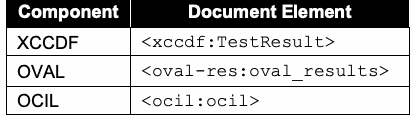
抽出したテキスト（原本と未照合・参考）
| Component | Document Element |
| XCCDF | <xccdf:TestResult> |
| OVAL | <oval-res:oval_results> |
| OCIL | <ocil:ocil> |
抽出したテキストの訳（原本と未照合・参考）
| コンポーネント | 文書要素 |
| XCCDF | <xccdf:TestResult> |
| OVAL | <oval-res:oval_results> |
| OCIL | <ocil:ocil> |
SCAP result data stream components SHOULD NOT use any deprecated constructs in their associated specifications. Validation of each component SHALL be done in accordance with the portions of this document that define requirements for the component. See Sec. 3.1.2 for more information on the SCAP Content Validation Tool, which can help validate the correctness of SCAP result data streams.
SCAP結果データストリームコンポーネントは、関連する仕様における非推奨の構成要素を使用すべきではない（SHOULD NOT）。各コンポーネントの検証は、そのコンポーネントの要件を定義している本書の部分に従って行われなければならない（SHALL）。SCAP結果データストリームの正確性の検証を支援できるSCAP Content Validation Toolの詳細については、Sec. 3.1.2を参照のこと。
4.4.2. The Target Identification
4.4.2. ターゲットの識別
The target asset SHALL be represented in the ARF report using the <ai:assets> part of ARF. The <ai:asset> element populated about a target asset SHOULD include the fields specified in Table 20, where applicable.
ターゲット資産は、ARFの<ai:assets>パートを使用してARFレポート内で表現されなければならない（SHALL）。ターゲット資産について生成（設定）される<ai:asset>要素は、該当する場合、表20に指定されているフィールドを含めるべきである（SHOULD）。
Table 20. Asset identification fields to populate
表20. 生成（設定）する資産識別フィールド
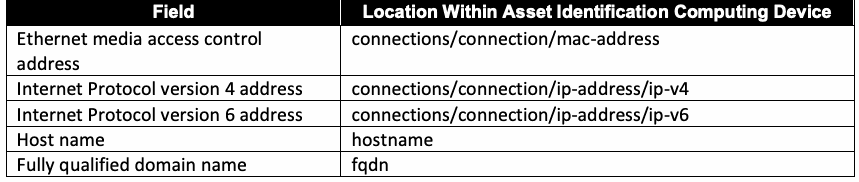
抽出したテキスト（原本と未照合・参考）
| Field | Location Within Asset Identification Computing Device |
| Ethernet media access control address | connections/connection/mac-address |
| Internet Protocol version 4 address | connections/connection/ip-address/ip-v4 |
| Internet Protocol version 6 address | connections/connection/ip-address/ip-v6 |
| Host name | hostname |
| Fully qualified domain name | fqdn |
抽出したテキストの訳（原本と未照合・参考）
| フィールド | 資産識別コンピューティングデバイス内の場所 |
| Ethernetメディアアクセス制御（MAC）アドレス | connections/connection/mac-address |
| インターネットプロトコルバージョン4（IPv4）アドレス | connections/connection/ip-address/ip-v4 |
| インターネットプロトコルバージョン6（IPv6）アドレス | connections/connection/ip-address/ip-v6 |
| ホスト名 | hostname |
| 完全修飾ドメイン名（FQDN） | fqdn |
Additional identification information MAY be captured in the <ai:asset> element (e.g., asset tag, system GUID). The guidelines specified in [AI] SHALL be followed when populating the asset identification information. Currently, only the target asset of the SCAP evaluation is identified.
追加の識別情報は<ai:asset>要素内に記録されてもよい（MAY）（例：資産タグ、システムGUID）。資産識別情報を設定する際は、[AI]で指定されているガイドラインに従わなければならない（SHALL）。現在、SCAP評価のターゲット資産のみが識別される。
4.4.3. The Source Data Stream
4.4.3. ソースデータストリーム
The source data stream collection that was used to generate the results against the target SHOULD be included in the ARF report as an <arf:report-request>. If the source data stream collection is included in the ARF report, and an <xccdf:Tailoring> component was used during processing, the tailoring component SHALL be included as well. The following is a stripped-down example:
ターゲットに対する結果を生成するために使用されたソースデータストリームコレクションは、<arf:report-request>としてARFレポートに含まれるべきである（SHOULD）。ソースデータストリームコレクションがARFレポートに含まれ、処理中に<xccdf:Tailoring>コンポーネントが使用された場合、そのテーラリングコンポーネントも含まれなければならない（SHALL）。以下は簡略化された例である：
<arf:asset-report-collection> <arf:report-requests>
<arf:asset-report-collection> <arf:report-requests>
<arf:report-request id="request_0"> <arf:content>
<arf:report-request id="request_0"> <arf:content>
<ds:data-stream-collection id="..." <!-- Source data stream collection which was tailored --> ... </ds:data-stream-collection> </arf:content>
<ds:data-stream-collection id="..." <!-- Source data stream collection which was tailored --> ... </ds:data-stream-collection> </arf:content>
</arf:report-request>
</arf:report-request>
<arf:report-request id="request_1"> <arf:content>
<arf:report-request id="request_1"> <arf:content>
<ds:data-stream-collection id="..." <!-- Source data stream collection with an <xccdf:Tailoring>
<ds:data-stream-collection id="..." <!-- Source data stream collection with an <xccdf:Tailoring>
component -->
component -->
... </ds:data-stream-collection>
... </ds:data-stream-collection>
</arf:content> </arf:report-request> </arf:report-requests> <arf:assets>...</arf:assets> <arf:reports>...</arf:reports>
</arf:content> </arf:report-request> </arf:report-requests> <arf:assets>...</arf:assets> <arf:reports>...</arf:reports>
</arf:asset-report-collection>
</arf:asset-report-collection>
4.4.4. The Relationships
4.4.4. 関係（Relationships）
Table 21 outlines the relationships that SHALL be specified in the ARF report if the stated condition is satisfied.
表21は、指定された条件が満たされる場合にARFレポートで指定しなければならない（SHALL）関係の概要を示している。
Table 21. ARF relationships
表 21. ARFの関係
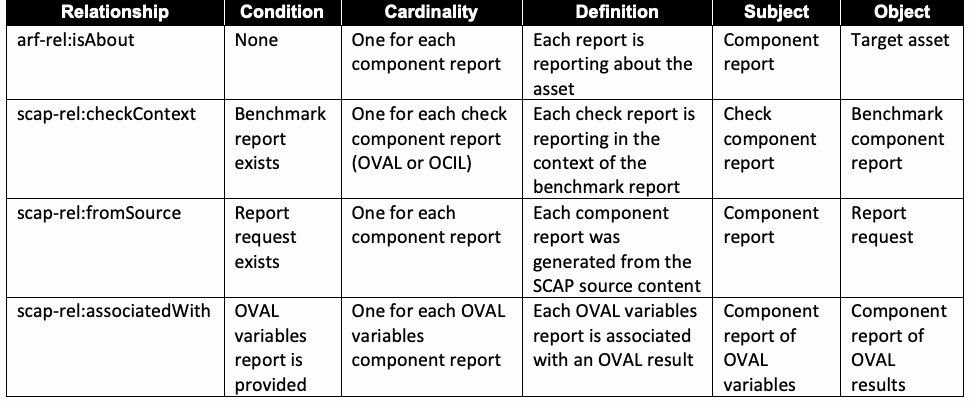
抽出したテキスト（原本と未照合・参考）
| Relationship | Condition | Cardinality | Definition | Subject | Object |
| arf-rel:isAbout | None | One for each component report | Each report is reporting about the asset | Component report | Target asset |
| scap-rel:checkContext | Benchmark report exists | One for each check component report (OVAL or OCIL) | Each check report is reporting in the context of the benchmark report | Check component report | Benchmark component report |
| scap-rel:fromSource | Report request exists | One for each component report | Each component report was generated from the SCAP source content | Component report | Report request |
| scap-rel:associatedWith | OVAL variables report is provided | One for each OVAL variables component report | Each OVAL variables report is associated with an OVAL result | Component report of OVAL variables | Component report of OVAL results |
抽出したテキストの訳（原本と未照合・参考）
| 関係 | 条件 | 多重度（Cardinality） | 定義 | 主語（Subject） | 目的語（Object） |
| arf-rel:isAbout | なし | 各コンポーネントレポートに対して1つ | 各レポートは資産について報告している | コンポーネントレポート | 対象資産 |
| scap-rel:checkContext | ベンチマークレポートが存在する | 各チェックコンポーネントレポート（OVALまたはOCIL）に対して1つ | 各チェックレポートはベンチマークレポートのコンテキストで報告している | チェックコンポーネントレポート | ベンチマークコンポーネントレポート |
| scap-rel:fromSource | レポート要求が存在する | 各コンポーネントレポートに対して1つ | 各コンポーネントレポートはSCAPソースコンテンツから生成された | コンポーネントレポート | レポート要求 |
| scap-rel:associatedWith | OVAL変数レポートが提供されている | 各OVAL変数コンポーネントレポートに対して1つ | 各OVAL変数レポートはOVAL結果に関連付けられている | OVAL変数のコンポーネントレポート | OVAL結果のコンポーネントレポート |
Figure 3 gives an example of how the resulting ARF report would look.
図3は、結果として得られるARFレポートがどのように見えるかの例を示している。
arf-report
arf-report
Legend
凡例（Legend）
xccdf-result1
xccdf-result1
target-asset
target-asset
arf-rel:isAbout
arf-rel:isAbout
scap-rel:fromSource
scap-rel:fromSource
oval-result1
oval-result1
scap-rel:checkContent
scap-rel:checkContent
asset
asset
oval-result2
oval-result2
report
report
scap-datastream
scap-datastream
ocil-result1
ocil-result1
report-request
report-request
Fig. 3. Sample ARF report structure
図 3. ARFレポート構造のサンプル
4.5. XCCDF Results
4.5. XCCDF結果
The following requirements and recommendations pertain to content consumers that generate XCCDF result data stream components.
以下の要件および推奨事項は、XCCDF結果データストリームコンポーネントを生成するコンテンツコンシューマーに関するものである。
Each XCCDF result data stream component SHALL comply with the XCCDF Results schema.
各XCCDF結果データストリームコンポーネントは、XCCDF Resultsスキーマに準拠しなければならない（SHALL）。
XCCDF test results SHALL be documented as the contents of an <xccdf:TestResult> element. To be considered valid SCAP result content, the <xccdf:TestResult> element SHALL meet the following conditions:
XCCDF のテスト結果は、<xccdf:TestResult> 要素の内容として記録しなければならない（SHALL）。有効な SCAP 結果コンテンツとみなされるためには、<xccdf:TestResult> 要素は次の条件を満たさなければならない（SHALL）：
•1. The @start-time and @end-time attributes SHALL be provided to indicate when the scan started and completed, respectively.
•1. スキャンの開始時刻と完了時刻をそれぞれ示すため、@start-time 属性と @end-time 属性を提供しなければならない（SHALL）。
•2. The @test-system attribute SHALL be provided, and it SHALL be a CPE name value indicating the product that was responsible for generating the results.
•2. @test-system 属性を提供しなければならず（SHALL）、それは結果の生成を担った製品を示す CPE 名の値でなければならない（SHALL）。
•3. When the <xccdf:TestResult> is the root XCCDF element, then it will include an <xccdf:benchmark> element [XCCDF:6.6.2].
•3. <xccdf:TestResult> がルート XCCDF 要素である場合、<xccdf:benchmark> 要素を含む [XCCDF:6.6.2]。
•a. The <xccdf:benchmark> element SHALL have an @id attribute specified. The @id attribute SHALL match the value of the <xccdf:Benchmark> element’s @id attribute that was processed.
•a. <xccdf:benchmark> 要素には @id 属性を指定しなければならない（SHALL）。@id 属性は、処理された <xccdf:Benchmark> 要素の @id 属性の値と一致しなければならない（SHALL）。
•b. The <xccdf:benchmark> element SHALL have an @href attribute specified. The @href attribute SHALL hold the URI that references the XCCDF component (i.e., either local to the data stream collection or remote) that was processed. The URI SHALL be in the form specified for the @href attribute in Table 8.
•b. <xccdf:benchmark> 要素には @href 属性を指定しなければならない（SHALL）。@href 属性は、処理された XCCDF コンポーネント（データストリームコレクションのローカルまたはリモートのいずれか）を参照する URI を保持しなければならない（SHALL）。この URI は、表 8 で @href 属性について規定された形式でなければならない（SHALL）。
•4. If a child profile of an <xccdf:Tailoring> element was applied during processing, then the <xccdf:tailoring-file> element SHALL be present and SHALL provide the following information about the <xccdf:Tailoring> element: @href, @id, @version, and @time. The @href attribute SHALL hold the URI to the XCCDF tailoring component and SHALL comply with the format described above (item 3).
•4. 処理中に <xccdf:Tailoring> 要素の子プロファイルが適用された場合、<xccdf:tailoring-file> 要素が存在しなければならず（SHALL）、<xccdf:Tailoring> 要素に関する次の情報を提供しなければならない（SHALL）：@href、@id、@version、および @time。@href 属性は XCCDF テーラリングコンポーネントへの URI を保持しなければならず（SHALL）、上記（項目 3）で説明した形式に準拠しなければならない（SHALL）。
•5. The <xccdf:Profile> element SHALL be included if a profile was applied during processing. This is also applicable to selected profiles that are part of <xccdf:Tailoring>.
•5. 処理中にプロファイルが適用された場合、<xccdf:Profile> 要素を含めなければならない（SHALL）。これは、<xccdf:Tailoring> の一部である選択されたプロファイルにも適用される。
•6. Regarding the definition and use of <xccdf:Profile> elements, reported <xccdf:set-value> elements SHALL include all those values that are exported by the reported rules. The specific settings are those determined by the reported <xccdf:Profile>.
•6. <xccdf:Profile> 要素の定義と使用に関して、報告される <xccdf:set-value> 要素は、報告されるルールがエクスポートするすべての値を含まなければならない（SHALL）。具体的な設定は、報告される <xccdf:Profile> によって決定されるものである。
•7. The <xccdf:identity> element SHALL identify the security principal used to access rule evaluations on the targets. This will include the identity name or username used to perform the evaluation.
•7. <xccdf:identity> 要素は、ターゲット上のルール評価にアクセスするために使用されたセキュリティプリンシパルを識別しなければならない（SHALL）。これには、評価の実行に使用された識別名またはユーザ名が含まれる。
•8. Each IP address associated with the <xccdf:target> SHALL be enumerated using the <xccdf:target-address> element.
•8. <xccdf:target> に関連付けられた各 IP アドレスは、<xccdf:target-address> 要素を使用して列挙しなければならない（SHALL）。
•9. An <xccdf:target-id-ref> SHALL be specified with a @system attribute of “http://scap.nist.gov/schema/asset-identification/1.1”, an @href attribute value of “”, and a @name attribute value of the ID of the <ai:asset> element in the ARF that this <xccdf:TestResult> is about.
•9. <xccdf:target-id-ref> を、@system 属性に「http://scap.nist.gov/schema/asset-identification/1.1」、@href 属性値に「」、@name 属性値にこの <xccdf:TestResult> が対象とする ARF 内の <ai:asset> 要素の ID を設定して指定しなければならない（SHALL）。
10.10. The <xccdf:rule-result> elements report the result of the application of each selected rule [XCCDF:6.6.2]. The @role, @severity, and @weight attributes of the <xccdf:rule-result> element SHALL be provided to indicate the values used during assessment. The <xccdf:check/xccdf:check-content-ref> element SHALL record the reference to the checking system-specific result component report ID and check name within the result file using the @href and @name attributes, respectively. The @href attribute SHALL contain “#” and the @id of the <arf:report> that contains the check result. This approach provides traceability between XCCDF and check results. If @multi-check is not set to “true,” and the <xccdf:rule-result> represents a group of checks, then the @name attribute SHALL be omitted. See the example below the next requirement.
10.10. <xccdf:rule-result> 要素は、選択された各ルールの適用の結果を報告する [XCCDF:6.6.2]。アセスメント中に使用された値を示すために、<xccdf:rule-result> 要素の @role、@severity、および @weight 属性を提供しなければならない（SHALL）。<xccdf:check/xccdf:check-content-ref> 要素は、それぞれ @href 属性および @name 属性を使用して、結果ファイル内の検査システム固有の結果コンポーネントレポートIDおよび検査名への参照を記録しなければならない（SHALL）。@href 属性には、「#」と、検査結果を含む <arf:report> の @id を含めなければならない（SHALL）。このアプローチにより、XCCDFと検査結果の間の追跡可能性が提供される。@multi-check が「true」に設定されておらず、かつ <xccdf:rule-result> が検査のグループを表している場合、@name 属性は省略しなければならない（SHALL）。次の要件の下にある例を参照のこと。
11.Where applicable to the target system, each of the <xccdf:fact> elements in Table 22 SHALL be provided. Previous versions of SCAP required additional facts; these have been incorporated into the use of the Asset Identification specification, as discussed in Sec. 4.4.2.
11.ターゲットシステムに適用可能な場合、表22の各 <xccdf:fact> 要素を提供しなければならない（SHALL）。以前のバージョンの SCAP では追加のファクトが必要とされていたが、これらは 4.4.2 項で説明されているように、Asset Identification 仕様の使用に組み込まれている。
Table 22. XCCDF fact descriptions
表 22. XCCDF ファクトの説明
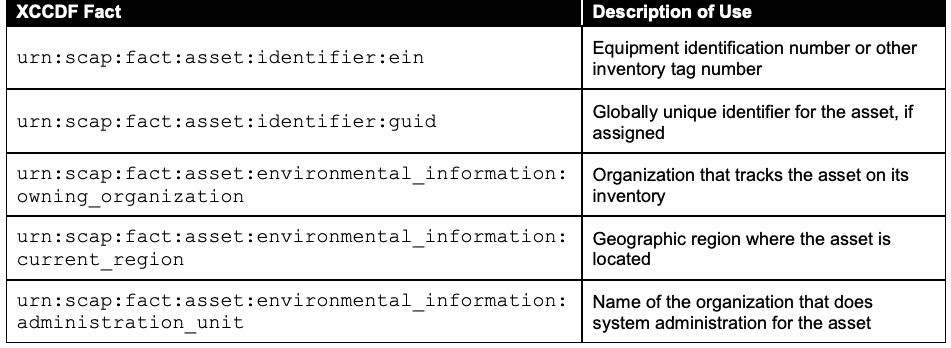
抽出したテキスト（原本と未照合・参考）
| XCCDF Fact | Description of Use |
| urn:scap:fact:asset:identifier:ein | Equipment identification number or other inventory tag number |
| urn:scap:fact:asset:identifier:guid | Globally unique identifier for the asset, if assigned |
| urn:scap:fact:asset:environmental_information: owning_organization | Organization that tracks the asset on its inventory |
| urn:scap:fact:asset:environmental_information: current_region | Geographic region where the asset is located |
| urn:scap:fact:asset:environmental_information: administration_unit | Name of the organization that does system administration for the asset |
抽出したテキストの訳（原本と未照合・参考）
| XCCDFファクト | 用途の説明 |
| urn:scap:fact:asset:identifier:ein | 機器識別番号またはその他の資産管理タグ番号 |
| urn:scap:fact:asset:identifier:guid | アセットに割り当てられている場合、そのグローバル一意識別子 |
| urn:scap:fact:asset:environmental_information: owning_organization | 自組織の棚卸台帳でアセットを追跡・管理している組織 |
| urn:scap:fact:asset:environmental_information: current_region | アセットが設置されている地理的地域 |
| urn:scap:fact:asset:environmental_information: administration_unit | アセットのシステム管理を行う組織の名称 |
The following is a stripped-down example that illustrates the above requirements:
以下は、上記の要件を説明するための簡略化した例である。
<arf:asset-report-collection> <rc:relationships>...</rc:relationships> <arf:report-requests>...</arf:report-requests> <arf:assets>...</arf:assets> <arf:reports>
<arf:asset-report-collection> <rc:relationships>...</rc:relationships> <arf:report-requests>...</arf:report-requests> <arf:assets>...</arf:assets> <arf:reports>
<arf:report id="scap_gov.nist_comp_r3005-xccdf_01">
<arf:report id="scap_gov.nist_comp_r3005-xccdf_01">
<arf:content>
<arf:content>
<xccdf:TestResult start-time="2016-03-10T10:07:11" version="1-2.1.0.0" test-system="cpe:/a:vendor:product_name:version" end-time="2016-03-10T10:07:11" id="xccdf_gov.nist_testresult_...">
<xccdf:TestResult start-time="2016-03-10T10:07:11" version="1-2.1.0.0" test-system="cpe:/a:vendor:product_name:version" end-time="2016-03-10T10:07:11" id="xccdf_gov.nist_testresult_...">
<xccdf:benchmark
<xccdf:benchmark
href="file:r3005-ds-01.xml#scap_gov.nist_comp_r3005-xccdf_01" id="xccdf_gov.nist_benchmark_r3005_id_01"/>
href="file:r3005-ds-01.xml#scap_gov.nist_comp_r3005-xccdf_01" id="xccdf_gov.nist_benchmark_r3005_id_01"/>
<xccdf:tailoring-file href="#scap_gov.nist_comp_r3005-xccdf_tailoring_03" id="xccdf_gov.nist_tailoring_r3005_03" time="2016-01-22T14:00:00" version="1-2.1.0.0"/>
<xccdf:tailoring-file href="#scap_gov.nist_comp_r3005-xccdf_tailoring_03" id="xccdf_gov.nist_tailoring_r3005_03" time="2016-01-22T14:00:00" version="1-2.1.0.0"/>
<xccdf:organization>...</xccdf:organization> <xccdf:identity
<xccdf:organization>...</xccdf:organization> <xccdf:identity
privileged="true" authenticated="true"> ...
privileged="true" authenticated="true"> ...
</xccdf:identity> <xccdf:profile
</xccdf:identity> <xccdf:profile
idref="xccdf_gov.nist.val_profile_r3005_tailoring_03"/>
idref="xccdf_gov.nist.val_profile_r3005_tailoring_03"/>
<xccdf:target>...</xccdf:target> <xccdf:target-address>...</xccdf:target-address> <xccdf:target-facts>...</xccdf:target-facts> <xccdf:target-id-ref
<xccdf:target>...</xccdf:target> <xccdf:target-address>...</xccdf:target-address> <xccdf:target-facts>...</xccdf:target-facts> <xccdf:target-id-ref
system="http://scap.nist.gov/schema/asset-identification/1.1" href="" name="..."
system="http://scap.nist.gov/schema/asset-identification/1.1" href="" name="..."
/> <xccdf:set-value
/> <xccdf:set-value
idref="xccdf_gov.nist_value_val.r3005_for_rule_6">test0</>
idref="xccdf_gov.nist_value_val.r3005_for_rule_6">test0</>
... <xccdf:rule-result
... <xccdf:rule-result
time="2016-03-10T10:07:11" idref="xccdf_gov.nist_rule_val.r3005_rule_1" weight="10" severity="medium" role="full"> <xccdf:result>pass</xccdf:result> <xccdf:check system="http://oval.mitre.org/XMLSchema/oval-definitions-5" selector="sel1"> <xccdf:check-content-ref href="#scap_gov.nist_comp_r3005-oval" name="oval:nist.validation.r3005:def:2"/> </xccdf:check>
time="2016-03-10T10:07:11" idref="xccdf_gov.nist_rule_val.r3005_rule_1" weight="10" severity="medium" role="full"> <xccdf:result>pass</xccdf:result> <xccdf:check system="http://oval.mitre.org/XMLSchema/oval-definitions-5" selector="sel1"> <xccdf:check-content-ref href="#scap_gov.nist_comp_r3005-oval" name="oval:nist.validation.r3005:def:2"/> </xccdf:check>
</xccdf:rule-result> </xccdf:TestResult>
</xccdf:rule-result> </xccdf:TestResult>
</arf:content> </arf:report>
</arf:content> </arf:report>
<arf:report id="scap_gov.nist_comp_r3005-oval">
<arf:report id="scap_gov.nist_comp_r3005-oval">
<arf:content>
<arf:content>
<arf:oval-res:oval_results>...</oval-res:oval_results>
<arf:oval-res:oval_results>...</oval-res:oval_results>
</arf:content>
</arf:content>
</arf:report>
</arf:report>
</arf:reports>
</arf:reports>
</arf:asset-report-collection>
</arf:asset-report-collection>
4.5.1. Assigning Identifiers to Rule Results
4.5.1. ルール結果への識別子の割り当て
The <xccdf:rule-result> element provides data that indicates the result of assessing a system using the identified <xccdf:Rule> element. If the target <xccdf:Rule> identified by the <xccdf:rule-result> element’s @idref attribute has one or more <xccdf:ident> elements with a @system attribute value listed in Sec. 3.2.4.1, then each <xccdf:ident> element SHALL also appear within the <xccdf:rule-result> element.
<xccdf:rule-result> 要素は、識別された <xccdf:Rule> 要素を使用してシステムを評価した結果を示すデータを提供する。<xccdf:rule-result> 要素の @idref 属性によって識別される対象の <xccdf:Rule> が、3.2.4.1 節に列挙された @system 属性値を持つ <xccdf:ident> 要素を 1 つ以上持つ場合、各 <xccdf:ident> 要素は <xccdf:rule-result> 要素内にも出現しなければならない（SHALL）。
If the <xccdf:ident> element is included, it is important for tracking purposes that produced XCCDF results have specific meanings. If an <xccdf:ident> element is present, and it identifies a CVE, CCE, or CPE entry, then an <xccdf:rule-result> of “pass” SHALL indicate that the check content evaluated within the rule complied with one of the following:
<xccdf:ident> 要素が含まれる場合、追跡の目的上、生成される XCCDF 結果が特定の意味を持つことが重要である。<xccdf:ident> 要素が存在し、それが CVE、CCE、または CPE のエントリを識別する場合、<xccdf:rule-result> が「pass」であることは、ルール内で評価されたチェックコンテンツが次のいずれかに準拠したことを示さなければならない（SHALL）：
•For a CVE entry, the target platform satisfies all of the conditions of the XCCDF rule and is unaffected by the vulnerability or exposure referenced by the CVE.
•CVEエントリの場合、ターゲットプラットフォームがXCCDFルールのすべての条件を満たし、かつそのCVEによって参照される脆弱性またはエクスポージャーの影響を受けないこと。
•For a CCE entry, the target platform complies with the configuration-setting guidance expressed in the XCCDF rule.
•CCEエントリの場合、ターゲットプラットフォームがXCCDFルールで示される設定ガイダンスに準拠していること。
•For a CPE entry, the target platform was identified on the system.
•CPEエントリの場合、ターゲットプラットフォームがシステム上で特定されたこと。
These interpretations of <xccdf:ident> elements must be preserved. For example, consider two policy recommendations. One is that a particular piece of software be installed, and the second is that another piece of software should not be installed. Both rules for these policy recommendations could use the same CPE entry in their <xccdf:ident> elements. However, because the interpretation of a CPE entry is that a “pass” result indicates that software was installed, the second policy recommendation’s rule would violate this. This can be corrected by using the @con:negate attribute, which is a Boolean attribute that inverts the rule result. The second rule could check for the software being installed and then negate that result, thus giving a result that is consistent in meaning with the first rule. For rules that cannot have their interpretations preserved through the use of the @con:negate attribute, an alternative is to have a CCE entry correspond to the recommendation. Rules that do not use <xccdf:ident> elements have no such restrictions.
<xccdf:ident> 要素のこれらの解釈は維持されなければならない。たとえば、2 つのポリシー推奨事項を考える。1 つは特定のソフトウェアをインストールすることであり、もう 1 つは別のソフトウェアをインストールすべきでないということである。これらのポリシー推奨事項の両方のルールが、<xccdf:ident> 要素で同じ CPE エントリを使用する可能性がある。しかし、CPE エントリの解釈では「pass」の結果はソフトウェアがインストールされていることを示すため、2 つ目のポリシー推奨事項のルールはこれに反することになる。これは、ルール結果を反転させるブール属性である @con:negate 属性を使用することで修正できる。2 つ目のルールは、ソフトウェアがインストールされているかをチェックしてその結果を否定することで、1 つ目のルールと意味が一貫した結果を与えることができる。@con:negate 属性の使用によって解釈を維持できないルールについては、代替策として、その推奨事項に対応する CCE エントリを設けることができる。<xccdf:ident> 要素を使用しないルールには、このような制約はない。
4.5.2. Mapping OVAL Results to XCCDF Results
4.5.2. OVAL結果からXCCDF結果へのマッピング
When evaluating an <xccdf:Rule> element that references an OVAL definition, the <xccdf:rule-result> element SHALL be used to capture the result of this evaluation. This result SHALL be determined by evaluating the referenced OVAL definition on a target host. The resulting value of an individual <xccdf:check> SHALL be mapped from the OVAL definition result produced during evaluation. The corresponding <xccdf:rule-result/xccdf:result> value is then computed based on the result values of all relevant <xccdf:check> elements.15 While the OVAL specification permits limiting result status reporting, SCAP-conformant content SHALL provide full status reporting, including error, unknown, not applicable, not evaluated, true, and false.
OVAL 定義を参照する <xccdf:Rule> 要素を評価する場合、この評価の結果を記録するために <xccdf:rule-result> 要素を使用しなければならない（SHALL）。この結果は、参照される OVAL 定義をターゲットホスト上で評価することによって決定しなければならない（SHALL）。個々の <xccdf:check> の結果値は、評価中に生成された OVAL 定義の結果からマッピングしなければならない（SHALL）。対応する <xccdf:rule-result/xccdf:result> の値は、関連するすべての <xccdf:check> 要素の結果値に基づいて算出される。15 OVAL 仕様は結果ステータスの報告を制限することを認めているが、SCAP 準拠コンテンツは、error、unknown、not applicable、not evaluated、true、false を含む完全なステータス報告を提供しなければならない（SHALL）。
Content consumers SHALL apply the mapping illustrated in Table 23 when deriving <xccdf:check> results from OVAL definition processing.
コンテンツコンシューマーは、OVAL定義の処理から<xccdf:check>結果を導出する際、表23に示すマッピングを適用しなければならない（SHALL）。
Table 23. Deriving XCCDF check results from OVAL definition results
表23. OVAL定義結果からのXCCDFチェック結果の導出
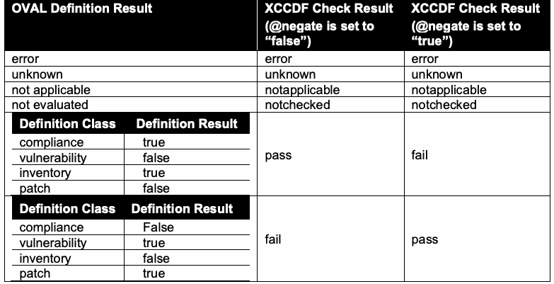
抽出したテキスト（原本と未照合・参考）
OVAL Definition Result XCCDF Check Result XCCDF Check Result (@negate is set to (@negate is set to “false”) “true”) error error error unknown unknown unknown not applicable notapplicable notapplicable not evaluated notchecked notchecked Definition Class Definition Result compliance true vulnerability false pass fail inventory true patch false Definition Class Definition Result compliance False vulnerability true fail pass inventory false patch true抽出したテキストの訳（原本と未照合・参考）
OVAL定義結果 XCCDFチェック結果 XCCDFチェック結果（@negateが「false」に設定されている場合） （@negateが「true」に設定されている場合） error error error unknown unknown unknown not applicable notapplicable notapplicable not evaluated notchecked notchecked 定義クラス 定義結果 compliance true vulnerability false pass fail inventory true patch false 定義クラス 定義結果 compliance False vulnerability true fail pass inventory false patch trueThe corresponding result value SHALL be recorded based on the @class attribute of the OVAL definition and the @negate attribute of the <xccdf:check> element, where applicable.
該当する場合、対応する結果値は、OVAL定義の@class属性および<xccdf:check>要素の@negate属性に基づいて記録されなければならない（SHALL）。
The mappings in Table 23 are specific to each OVAL definition class. For example, if an OVAL compliance class definition is processed, and OVAL returns a result of “true,” the content consumer is conveying the fact that the system was found to be compliant with that check and therefore returns a “pass” result for that check. A similar definition for a vulnerable condition will return results of “false” if that vulnerability was not found on the examined devices, resulting in a “pass” from the XCCDF check. Negations of check results or their combination in complex checks may result in additional modification before the final corresponding <xccdf:rule-result/xccdf:result> value is known.
表23のマッピングは、各OVAL定義クラスに固有のものである。例えば、OVALコンプライアンスクラスの定義が処理され、OVALが「true」の結果を返した場合、コンテンツコンシューマーはシステムがそのチェックに準拠していると判断されたという事実を伝えており、したがってそのチェックに対して「pass」結果を返す。脆弱な状態に関する同様の定義では、検査されたデバイスでその脆弱性が見つからなかった場合に「false」の結果が返され、XCCDFチェックからは「pass」となる。チェック結果の否定や複合チェックにおけるそれらの結合により、対応する最終的な<xccdf:rule-result/xccdf:result>値が判明する前に追加の変更が生じる場合がある。
If the <xccdf:Rule> element under evaluation has an <xccdf:check-content-ref> element with the @name attribute omitted and an <xccdf:check> element with its @multi-check attribute set to “true,” then the result of each evaluated OVAL definition SHALL be recorded as a separate <xccdf:rule-result> element. In this case, the <xccdf:rule-result>/<xccdf:check-content-ref> element SHALL identify the specific check result of each evaluated OVAL definition using the @href and @name attributes, as described in Sec. 4.5, item 8.
評価対象の<xccdf:Rule>要素に@name属性が省略された<xccdf:check-content-ref>要素があり、かつ@multi-check属性が「true」に設定された<xccdf:check>要素がある場合、評価された各OVAL定義の結果は個別の<xccdf:rule-result>要素として記録されなければならない（SHALL）。この場合、セクション4.5の項目8で説明されているように、<xccdf:rule-result>/<xccdf:check-content-ref>要素は、@hrefおよび@name属性を使用して評価された各OVAL定義の特定のチェック結果を識別しなければならない（SHALL）。
According to [XCCDF:Table 9;Table 35;Table 39], if the <xccdf:Rule> element under evaluation is selected, and its @role attribute is set to ”unchecked,” then the rule result SHALL be set to “notchecked.” If the <xccdf:Rule> element under evaluation is selected, and its @role attribute is set to “unscored,” then the rule result SHALL be set to “informational.”
[XCCDF:Table 9;Table 35;Table 39]によれば、評価対象の<xccdf:Rule>要素が選択されており、その@role属性が「unchecked」に設定されている場合、ルール結果は「notchecked」に設定されなければならない（SHALL）。評価対象の<xccdf:Rule>要素が選択されており、その@role属性が「unscored」に設定されている場合、ルール結果は「informational」に設定されなければならない（SHALL）。
4.6. OVAL Results
4.6. OVAL結果
The following requirements and recommendations pertain to content consumers that generate OVAL result data stream components. See the annex for additional requirements and recommendations.
以下の要件および推奨事項は、OVAL結果データストリームコンポーネントを生成するコンテンツコンシューマーに関連する。追加の要件および推奨事項については附属書を参照のこと。
Each OVAL result data stream component SHALL validate against at least one version of the OVAL results schema that corresponds to an OVAL component specification version that was specified in Sect. 2 of the annex, regardless of the version of the OVAL definitions document that was evaluated.
評価されたOVAL定義文書のバージョンにかかわらず、各OVAL結果データストリームコンポーネントは、附属書のセクション2で指定されたOVALコンポーネント仕様バージョンに対応するOVAL結果スキーマの少なくとも1つのバージョンに対して検証されなければならない（SHALL）。
An SCAP OVAL result data stream component SHALL include the results of every OVAL definition used to generate the reported results.
SCAP OVAL結果データストリームコンポーネントは、報告された結果の生成に使用されたすべてのOVAL定義の結果を含まなければならない（SHALL）。
In order to be SCAP-conformant, an SCAP content consumer SHALL be able to produce all types of OVAL result outputs described below. The specific result output SHALL be configurable within the SCAP content consumer.
SCAPに準拠するために、SCAPコンテンツコンシューマーは、以下で説明するすべてのタイプのOVAL結果出力を生成できなければならない（SHALL）。特定の結果出力は、SCAPコンテンツコンシューマー内で設定可能でなければならない（SHALL）。
In order to support SCAP instances where OVAL thin content (i.e., only the ID of the definition and the results) is preferred, SCAP content consumers SHALL support all valid values for the <oval-res:directives> that control the expected content of the results file.
OVAL の thin コンテンツ（すなわち定義の ID と結果のみ）が望まれる SCAP インスタンスをサポートするため、SCAP コンテンツ消費者は、結果ファイルに期待される内容を制御する <oval-res:directives> のすべての有効な値をサポートしなければならない（SHALL）。
To support the ability for results to be consumed by appropriate products, data results SHALL be expressed as a single machine without system characteristics, single machine with system characteristics, or single machine with thin results as follows:
適切な製品によって結果が消費される機能をサポートするために、データ結果は以下のように、システム特性のない単一マシン、システム特性のある単一マシン、またはシン結果を持つ単一マシンとして表現されなければならない（SHALL）：
•1. Single machine without system characteristics — A single result file that includes the results of all OVAL definitions evaluated and “full” result types, as described in the <oval-res:ContentEnumeration> element, without system characteristics.
•1. システム特性なしの単一マシン — 評価されたすべての OVAL 定義の結果と、<oval-res:ContentEnumeration> 要素で説明される「full」結果タイプを含み、システム特性を含まない単一の結果ファイル。
For this format, the values for the <oval-res:directives> element SHALL be:
この形式では、<oval-res:directives> 要素の値は次のとおりでなければならない（SHALL）：
<oval-res:directives include_source_definitions="false"> <oval-res:definition_true content="full" reported="true"/> <oval-res:definition_false content="full" reported="true"/> <oval-res:definition_unknown content="full" reported="true"/> <oval-res:definition_error content="full" reported="true"/> <oval-res:definition_not_evaluated content="full" reported="true"/> <oval-res:definition_not_applicable content="full" reported="true"/> </oval-res:directives>
<oval-res:directives include_source_definitions="false"> <oval-res:definition_true content="full" reported="true"/> <oval-res:definition_false content="full" reported="true"/> <oval-res:definition_unknown content="full" reported="true"/> <oval-res:definition_error content="full" reported="true"/> <oval-res:definition_not_evaluated content="full" reported="true"/> <oval-res:definition_not_applicable content="full" reported="true"/> </oval-res:directives>
When creating the OVAL system characteristics, as defined by the <oval-sc:oval_system_characteristics> element, the <oval-sc:collected_objects> and <oval-sc:system_data> elements SHALL NOT be provided.
<oval-sc:oval_system_characteristics> 要素で定義される OVAL システム特性を作成する際、<oval-sc:collected_objects> 要素および <oval-sc:system_data> 要素を提供してはならない（SHALL NOT）。
•2. Single machine with system characteristics — A single result file that includes the results of all OVAL definitions evaluated and “full” result types, as described in the <oval-res:ContentEnumeration> element and the system characteristics of the target evaluated.
•2. システム特性ありの単一マシン — 評価されたすべての OVAL 定義の結果と、<oval-res:ContentEnumeration> 要素で説明される「full」結果タイプ、および評価されたターゲットのシステム特性を含む単一の結果ファイル。
For this format, the values for the <oval-res:directives> element SHALL be:
この形式では、<oval-res:directives> 要素の値は次のとおりでなければならない（SHALL）：
<oval-res:directives include_source_definitions="false"> <oval-res:definition_true content="full" reported="true"/> <oval-res:definition_false content="full" reported="true"/> <oval-res:definition_unknown content="full" reported="true"/> <oval-res:definition_error content="full" reported="true"/> <oval-res:definition_not_evaluated content="full" reported="true"/> <oval-res:definition_not_applicable content="full" reported="true"/> </oval-res:directives>
<oval-res:directives include_source_definitions="false"> <oval-res:definition_true content="full" reported="true"/> <oval-res:definition_false content="full" reported="true"/> <oval-res:definition_unknown content="full" reported="true"/> <oval-res:definition_error content="full" reported="true"/> <oval-res:definition_not_evaluated content="full" reported="true"/> <oval-res:definition_not_applicable content="full" reported="true"/> </oval-res:directives>
When creating the OVAL system characteristics, as defined by the <oval-sc:oval_system_characteristics> element, the <oval-sc:collected_objects> and <oval-sc:system_data> elements SHALL be provided.
<oval-sc:oval_system_characteristics> 要素で定義される OVAL システム特性を作成する際、<oval-sc:collected_objects> 要素および <oval-sc:system_data> 要素を提供しなければならない（SHALL）。
•3. Single machine with thin results — A single result file that includes the results of all OVAL definitions evaluated and “thin” result types, as described in the OVAL results schema. A value of “thin” means that the minimal amount of information will be provided.
•3. thin 結果の単一マシン — 評価されたすべての OVAL 定義の結果と、OVAL results スキーマで説明される「thin」結果タイプを含む単一の結果ファイル。「thin」の値は、最小限の情報が提供されることを意味する。
For this format, the values for the <oval-res:directives> element SHALL be:
この形式では、<oval-res:directives> 要素の値は次のとおりでなければならない（SHALL）：
<oval-res:directives include_source_definitions="false"> <oval-res:definition_true content="thin" reported="true"/> <oval-res:definition_false content="thin" reported="true"/> <oval-res:definition_unknown content="thin" reported="true"/> <oval-res:definition_error content="thin" reported="true"/> <oval-res:definition_not_evaluated content="thin" reported="true"/> <oval-res:definition_not_applicable content="thin" reported="true"/> </oval-res:directives> When specifying OVAL system characteristics, a reference SHOULD be made to the target asset in the ARF report collection. Specifically, the <oval-sc:oval_system_characteristics>/<oval-sc:system_info> SHOULD be populated with a <con:asset-identification> element. That element SHALL be populated with a single <arf:object-ref> element that points to the <ai:asset> element in the ARF report collection pertaining to the OVAL result. See [ARF] for details on populating the <arf:object-ref> element.
<oval-res:directives include_source_definitions="false"> <oval-res:definition_true content="thin" reported="true"/> <oval-res:definition_false content="thin" reported="true"/> <oval-res:definition_unknown content="thin" reported="true"/> <oval-res:definition_error content="thin" reported="true"/> <oval-res:definition_not_evaluated content="thin" reported="true"/> <oval-res:definition_not_applicable content="thin" reported="true"/> </oval-res:directives> OVALシステム特性を指定する際は、ARFレポートコレクション内の対象アセットへの参照を作成すべきである（SHOULD）。具体的には、<oval-sc:oval_system_characteristics>/<oval-sc:system_info>に<con:asset-identification>要素を設定すべきである（SHOULD）。その要素には、OVAL結果に関連するARFレポートコレクション内の<ai:asset>要素を指す単一の<arf:object-ref>要素を設定しなければならない（SHALL）。<arf:object-ref>要素の設定に関する詳細については、[ARF]を参照されたい。
When specifying OVAL system characteristics, a reference SHOULD be made to the target asset in the ARF report collection. Specifically, the <oval-sc:oval_system_characteristics>/<oval-sc:system_info> SHOULD be populated with a <con:asset-identification> element. That element SHALL be populated with a single <arf:object-ref> element that points to the <ai:asset> element in the ARF report collection pertaining to the OVAL result. See [ARF] for details on populating the <arf:object-ref> element.
OVAL システム特性を指定する際は、ARF レポートコレクション内のターゲット資産への参照を行うべきである（SHOULD）。具体的には、<oval-sc:oval_system_characteristics>/<oval-sc:system_info> に <con:asset-identification> 要素を設定すべきである（SHOULD）。その要素には、OVAL 結果に関連する ARF レポートコレクション内の <ai:asset> 要素を指す単一の <arf:object-ref> 要素を設定しなければならない（SHALL）。<arf:object-ref> 要素の設定の詳細については [ARF] を参照のこと。
4.7. OCIL Results
4.7. OCIL 結果
The following requirements and recommendations pertain to content consumers that generate OCIL result data stream components.
以下の要件と推奨事項は、OCIL 結果データストリームコンポーネントを生成するコンテンツ消費者に適用される。
An SCAP OCIL result data stream component SHALL include the results of every <ocil:questionnaire>, <ocil:question_test_action>, and <ocil:question> element used to generate the reported results.
SCAP OCIL 結果データストリームコンポーネントは、報告される結果の生成に使用されたすべての <ocil:questionnaire>、<ocil:question_test_action>、および <ocil:question> 要素の結果を含まなければならない（SHALL）。
4.8. Result Data Stream Signing
4.8. 結果データストリームへの署名
Digitally signing SCAP result content is important for establishing integrity and provenance and for enabling content consumers to make trust decisions in accordance with [TMSAD]. Content consumers SHOULD digitally sign SCAP result content in accordance with [TMSAD] and the requirements in this section.
SCAP 結果コンテンツへのデジタル署名は、完全性と来歴を確立し、コンテンツ消費者が [TMSAD] に従って信頼に関する判断を行えるようにするうえで重要である。コンテンツ消費者は、[TMSAD] および本節の要件に従って SCAP 結果コンテンツにデジタル署名すべきである（SHOULD）。
4.8.1. Signature Location
4.8.1. 署名の場所
If a digital signature is included within a source data stream collection, it SHALL be placed in an <arf:extended-info> element within the ARF report.
ソースデータストリームコレクション内にデジタル署名が含まれる場合、それはARFレポート内の <arf:extended-info> 要素内に配置されなければならない（SHALL）。
4.8.2. Signature Representation
4.8.2. 署名の表現
Each digital signature SHALL be represented as a <ds:Signature> element and SHALL conform to the W3C XML Signature Syntax and Processing recommendation [DSIG]. The “ds” prefix is used in this section for clarity; any equivalent prefix bound to the XMLDSIG namespace MAY be used.
各デジタル署名は<ds:Signature>要素として表現されなければならず（SHALL）、W3C XML Signature Syntax and Processing勧告[DSIG]に準拠しなければならない（SHALL）。本セクションではわかりやすさのために「ds」プレフィックスを使用しているが、XMLDSIG名前空間にバインドされた同等の任意のプレフィックスを使用してもよい（MAY）。
4.8.3. Signature Requirements
4.8.3. 署名の要件
The <ds:Signature> element SHALL follow the recommendations in [TMSAD] along with the following additional requirements.
<ds:Signature>要素は、以下の追加要件とともに[TMSAD]の推奨事項に従わなければならない（SHALL）。
a) The <ds:Signature> SHALL cover exactly one target: the <arf:asset-report-collection> element (i.e., the ARF report).
a) <ds:Signature>は、正確に1つのターゲット、すなわち<arf:asset-report-collection>要素（すなわち、ARFレポート）を対象としなければならない（SHALL）。
b) The first <ds:Reference> element in a <ds:Signature> element SHALL be to the <arf:asset-report-collection> element. The element SHALL be referenced in the @URI attribute using the empty string convention “”.
b) <ds:Signature>要素内の最初の<ds:Reference>要素は、<arf:asset-report-collection>要素を指していなければならない（SHALL）。その要素は、空文字列の規約「“”」を使用して@URI属性で参照されなければならない（SHALL）。
c) Two XPath Filter 2 transforms SHALL exist on the first <dsig:Reference> element in a <dsig:Signature> element. Both SHALL specify a filter type of “subtract.” The first transform SHALL specify the XPath /arf:asset-report-collection/arf:extended-infos[count(arf:extended-info[dsig:Signature]) = count(*)]. The second transform SHALL specify the XPath /arf:asset-report-collection/arf:extended-infos/arf:extended-info[dsig:Signature]. In both cases, the namespace prefix “arf” SHALL map to the ARF namespace specified in this document.
c) <dsig:Signature>要素内の最初の<dsig:Reference>要素には、2つのXPath Filter 2変換が存在しなければならない（SHALL）。両方とも「subtract」のフィルタタイプを指定しなければならない（SHALL）。最初の変換は、XPath /arf:asset-report-collection/arf:extended-infos[count(arf:extended-info[dsig:Signature]) = count(*)] を指定しなければならない（SHALL）。2番目の変換は、XPath /arf:asset-report-collection/arf:extended-infos/arf:extended-info[dsig:Signature] を指定しなければならない（SHALL）。どちらの場合も、名前空間プレフィックス「arf」は、本ドキュメントで指定されたARF名前空間にマップされなければならない（SHALL）。
d) The second <dsig:Reference> element MAY be to the <dsig:SignatureProperties> element captured in a <dsig:Object> element with the <dsig:Signature> element. The <dsig:SignatureProperties> element SHALL be referenced in the @URI attribute using “#” and the @Id of the <dsig:SignatureProperties> element.
d) 2番目の<dsig:Reference>要素は、<dsig:Signature>要素とともに<dsig:Object>要素内にキャプチャされた<dsig:SignatureProperties>要素を指していてもよい（MAY）。<dsig:SignatureProperties>要素は、「#」および<dsig:SignatureProperties>要素の@Idを使用して@URI属性で参照されなければならない（SHALL）。
4.8.4. Key information
4.8.4. 鍵情報
Key information SHOULD be provided on the <dsig:Signature> element.
鍵情報は<dsig:Signature>要素で提供されるべきである（SHOULD）。
4.8.5. Countersigning
4.8.5. 副署
If countersigning the result is desired (e.g., a system signs automatically, and a human reviewer later adds a signature), the following SHALL apply:
結果への副署が望まれる場合（例：システムが自動的に署名し、後に人間のレビュー担当者が署名を追加する場合）、以下を適用しなければならない（SHALL）。
a) The <arf:extended-info> element that contains the original signature SHALL be removed from the resulting document.
a) 元の署名を含む<arf:extended-info>要素は、結果のドキュメントから削除されなければならない（SHALL）。
b) The original signature SHALL be captured as a <dsig:Object> element on the new <dsig:Signature> element.
b) 元の署名は、新しい<dsig:Signature>要素上の<dsig:Object>要素として取り込まれなければならない（SHALL）。
c) The first <dsig:Reference> element in the new <dsig:Signature> element SHALL reference the <dsig:Object> element that contains the original signature. The <dsig:Object> element SHALL be referenced in the @URI attribute using “#” and the @Id of the <dsig:Object> element.
c) 新しい<dsig:Signature>要素内の最初の<dsig:Reference>要素は、元の署名を含む<dsig:Object>要素を参照しなければならない（SHALL）。<dsig:Object>要素は、「#」と<dsig:Object>要素の@Idを使用して@URI属性内で参照されなければならない（SHALL）。
d) If the <dsig:SignatureProperties> element existed within the original signature, the second <dsig:Reference> element SHALL be to the <dsig:SignatureProperties> element captured in a <dsig:Object> element with the <dsig:Signature> element. The <dsig:SignatureProperties> element SHALL be referenced in the @URI attribute using “#” and the @Id of the <dsig:SignatureProperties> element.
d) 元の署名内に<dsig:SignatureProperties>要素が存在していた場合、2番目の<dsig:Reference>要素は、<dsig:Signature>要素を持つ<dsig:Object>要素内に取り込まれた<dsig:SignatureProperties>要素へのものでなければならない（SHALL）。<dsig:SignatureProperties>要素は、「#」と<dsig:SignatureProperties>要素の@Idを使用して@URI属性内で参照されなければならない（SHALL）。
e) A <dsig:SignatureProperties> element MAY be included in the <dsig:Signature> element. At least one <dsig:SignatureProperty> element MAY be populated with <dt:signature-info>, as specified in [TMSAD].
e) <dsig:SignatureProperties> 要素を <dsig:Signature> 要素に含めてもよい (MAY)。[TMSAD] で規定されているように、少なくとも1つの <dsig:SignatureProperty> 要素に <dt:signature-info> を設定してもよい (MAY)。
f) Key information SHOULD be provided on the <dsig:Signature> element in accordance with [TMSAD].
f) [TMSAD] に従って、鍵情報を <dsig:Signature> 要素に提供すべきである (SHOULD)。
g) The new <dsig:Signature> element SHALL be placed in a new <arf:extended-info> element in the ARF report collection.
g) 新しい <dsig:Signature> 要素は、ARF レポートコレクション内の新しい <arf:extended-info> 要素内に配置しなければならない (SHALL)。
A signature that has countersigned another signature (also known as an enveloping signature) MAY be countersigned. When doing so, the requirements above SHALL apply to the new signature creation.
別の署名に対して副署を行った署名（エンベローピング署名としても知られる）は、副署されてもよい (MAY)。そうする場合、上記の要件が新しい署名の作成に適用されなければならない (SHALL)。
5. Source Data Stream Content Requirements for Use Cases
5. ユースケースに応じたソースデータストリームのコンテンツ要件
This section discusses additional requirements for the following SCAP-conformant content use cases: compliance checking, vulnerability scanning, and inventory scanning. As stated in Table 3, each data stream is required to have a @use-case attribute in its <ds:data-stream> element with a value that corresponds to either one of the content types defined in this section or to “OTHER” for data streams that do not correspond to a defined use case. The required value for each content type is specified in the following subsection.
本節では、コンプライアンスチェック、脆弱性スキャン、およびインベントリスキャンというSCAP適合コンテンツのユースケースに関する追加要件について論じる。表3に記載されているように、各データストリームは、その<ds:data-stream>要素に@use-case属性を持つことが求められ、その値は、本節で定義されているコンテンツタイプのいずれか、または定義されたユースケースに対応しないデータストリームの場合は「OTHER」に対応する。各コンテンツタイプに必要な値は、以下の小節で規定されている。
Each use case is subject to the requirements presented in this section as well as all applicable requirements in Sec. 3 and 4.
各ユースケースには、本節に示す要件に加えて、第3節および第4節のすべての適用可能な要件が適用される。
5.1. Compliance Checking
5.1. コンプライアンスチェック
SCAP content can be used to compare system characteristics and settings against an SCAP-conformant checklist in an automated fashion. This can verify that operating systems and applications comply with security checklists and identify any deviations from those checklists.
SCAPコンテンツを使用することで、システムの特性および設定をSCAP適合チェックリストと自動化された手法で比較することができる。これにより、オペレーティングシステムやアプリケーションがセキュリティチェックリストに準拠していることを検証し、それらのチェックリストからの逸脱を特定することができる。
The SCAP source data stream component that SHALL be included for compliance checking is the XCCDF benchmark, which expresses the checklist. Each rule in the XCCDF benchmark SHALL reference one of the following:
コンプライアンスチェックのために含めなければならない（SHALL）SCAPソースデータストリームコンポーネントは、チェックリストを表現するXCCDFベンチマークである。XCCDFベンチマークの各ルールは、次のいずれかを参照しなければならない（SHALL）。
•An OVAL compliance definition. This definition SHALL be contained in an OVAL component, which holds definitions of compliance checks used by the checklist. An XCCDF benchmark’s rules MAY reference one or more OVAL compliance class definitions in an OVAL component.
•OVALコンプライアンス定義。この定義は、チェックリストで使用されるコンプライアンスチェックの定義を保持するOVALコンポーネントに含まれなければならない（SHALL）。XCCDFベンチマークのルールは、OVALコンポーネント内の1つ以上のOVALコンプライアンスクラス定義を参照してもよい（MAY）。
•An OCIL questionnaire. This questionnaire SHALL be contained in an OCIL component, which holds questionnaires that collect information that OVAL is not being used to collect, such as posing questions to users or harvesting configuration information from an existing database. An XCCDF benchmark’s rules MAY reference one or more OCIL questionnaires in an OCIL component.
•OCILアンケート。このアンケートは、ユーザーへの質問の提示や既存のデータベースからの構成情報の収集など、OVALが収集に使用されていない情報を収集するアンケートを保持するOCILコンポーネントに含まれなければならない（SHALL）。XCCDFベンチマークのルールは、OCILコンポーネント内の1つ以上のOCILアンケートを参照してもよい（MAY）。
•An OVAL patch definition. This definition SHALL be contained in an OVAL component, which holds definitions for patch compliance checks. These checks may be needed if an organization includes patch verification in its compliance activities. An XCCDF benchmark MAY reference an OVAL patch definition through a patches up-to-date rule in a manner consistent with Sec. 3.2.4.3.
•OVALパッチ定義。この定義は、パッチコンプライアンスチェックの定義を保持するOVALコンポーネントに含まれなければならない（SHALL）。組織がコンプライアンス活動にパッチの検証を含めている場合、これらのチェックが必要になることがある。XCCDFベンチマークは、Sec. 3.2.4.3と整合する形で、最新パッチ適用ルール（patches up-to-date rule）を通じてOVALパッチ定義を参照してもよい（MAY）。
Each XCCDF benchmark SHALL have at least one rule that references either an OVAL compliance class definition in an OVAL component or an OCIL questionnaire in an OCIL component.
各XCCDFベンチマークは、OVALコンポーネント内のOVALコンプライアンスクラス定義、またはOCILコンポーネント内のOCILアンケートのいずれかを参照するルールを少なくとも1つ持たなければならない（SHALL）。
All OVAL components and OCIL components referenced by the XCCDF benchmark SHALL be included in the SCAP source data stream.
XCCDFベンチマークによって参照されるすべてのOVALコンポーネントおよびOCILコンポーネントは、SCAPソースデータストリームに含まれなければならない（SHALL）。
If the XCCDF benchmark component references any CPE names, then the SCAP source data stream SHALL include a CPE component, which specifies the products or platforms of interest, and SHALL include one or more OVAL inventory class definitions in an OVAL component that contain the technical procedures for determining whether or not a specific target asset has a product or platform of interest.
XCCDFベンチマークコンポーネントがいずれかのCPE名を参照する場合、SCAPソースデータストリームは対象の製品またはプラットフォームを指定するCPEコンポーネントを含まなければならず（SHALL）、特定のターゲット資産に対象の製品またはプラットフォームが存在するかどうかを判断するための技術的手順を含む、OVALコンポーネント内の1つ以上のOVALインベントリクラス定義を含まなければならない（SHALL）。
The @use-case attribute in the <ds:data-stream> element SHALL be set to “CONFIGURATION.”
<ds:data-stream> 要素の @use-case 属性は「CONFIGURATION」に設定しなければならない（SHALL）。
5.2. Vulnerability Scanning
5.2. 脆弱性スキャン
SCAP content can be used to scan operating systems and applications to look for known software flaws that introduce security exposures. The content enables the consistent detection and reporting of these flaws.
SCAPコンテンツは、セキュリティ上の弱点をもたらす既知のソフトウェアの欠陥を探すためにオペレーティングシステムやアプリケーションをスキャンする目的で使用できる。このコンテンツにより、これらの欠陥の一貫した検出と報告が可能になる。
The SCAP source data stream component that SHALL be included for vulnerability scanning is the XCCDF benchmark, which expresses the checklist of the flaws to be checked for. Each rule in the XCCDF benchmark SHALL reference one of the following:
脆弱性スキャンのために含めなければならない（SHALL）SCAPソースデータストリームコンポーネントは、チェック対象となる欠陥のチェックリストを表すXCCDFベンチマークである。XCCDFベンチマーク内の各ルールは、次のいずれかを参照しなければならない（SHALL）：
•An OVAL vulnerability definition. This definition SHALL be contained in an OVAL component, which holds definitions of vulnerability checks used by the checklist. An XCCDF benchmark’s rules MAY reference one or more OVAL vulnerability class definitions in an OVAL component.
•OVAL脆弱性定義。この定義は、チェックリストによって使用される脆弱性チェックの定義を保持するOVALコンポーネントに含まれなければならない（SHALL）。XCCDFベンチマークのルールは、OVALコンポーネント内の1つ以上のOVAL脆弱性クラス定義を参照してもよい（MAY）。
•An OCIL questionnaire. This questionnaire SHALL be contained in an OCIL component, which holds questionnaires that collect information that OVAL is not being used to collect. An example of OCIL use is to give step-by-step directions for manually examining a system for a vulnerability that cannot be detected with OVAL. In such a case, OCIL is used for capturing information collected using manual examination. An XCCDF benchmark’s rules MAY reference one or more OCIL questionnaires in an OCIL component.
•OCIL質問票。この質問票は、OVALが収集に使用されていない情報を収集する質問票を保持するOCILコンポーネントに含まれなければならない（SHALL）。OCILの使用例としては、OVALでは検出できない脆弱性についてシステムを手動で調査するための段階的な手順を示すことが挙げられる。このような場合、OCILは手動調査を使用して収集された情報を取得するために使用される。XCCDFベンチマークのルールは、OCILコンポーネント内の1つ以上のOCIL質問票を参照してもよい（MAY）。
•An OVAL patch definition. This definition SHALL be contained in an OVAL component, which holds definitions for patch compliance checks. These checks may be needed if an organization includes patch verification in its vulnerability scanning activities. An XCCDF benchmark MAY reference an OVAL patch definition through a patches up-to-date rule in a manner consistent with Sec. 3.2.4.3.
•OVALパッチ定義。この定義は、パッチコンプライアンスチェックの定義を保持するOVALコンポーネントに含まれなければならない（SHALL）。組織が脆弱性スキャン活動にパッチ検証を含めている場合、これらのチェックが必要になることがある。XCCDFベンチマークは、Sec. 3.2.4.3と一貫した方法で、パッチ最新（patches up-to-date）ルールを通じてOVALパッチ定義を参照してもよい（MAY）。
Each XCCDF benchmark SHALL have at least one rule that references either an OVAL vulnerability class definition in an OVAL component or an OCIL questionnaire in an OCIL component.
各XCCDFベンチマークは、OVALコンポーネント内のOVAL脆弱性クラス定義、またはOCILコンポーネント内のOCILアンケートのいずれかを参照するルールを少なくとも1つ持たなければならない（SHALL）。
All OVAL components and OCIL components referenced by the XCCDF benchmark SHALL be included in the SCAP source data stream.
XCCDFベンチマークによって参照されるすべてのOVALコンポーネントおよびOCILコンポーネントは、SCAPソースデータストリームに含まれなければならない（SHALL）。
If the XCCDF benchmark component references any CPE names, then the SCAP source data stream SHALL include a CPE component, which specifies the products or platforms of interest, and SHALL include one or more OVAL inventory class definitions in an OVAL component that contain the technical procedures for determining whether or not a specific target asset has a product or platform of interest.
XCCDFベンチマークコンポーネントがいずれかのCPE名を参照する場合、SCAPソースデータストリームは、対象となる製品またはプラットフォームを指定するCPEコンポーネントを含まなければならず（SHALL）、特定のターゲット資産に対象となる製品またはプラットフォームが存在するかどうかを判断するための技術的手順を含む、OVALコンポーネント内の1つ以上のOVALインベントリクラス定義を含まなければならない（SHALL）。
The @use-case attribute in the <ds:data-stream> element SHALL be set to “VULNERABILITY.”
<ds:data-stream> 要素の @use-case 属性は「VULNERABILITY」に設定しなければならない（SHALL）。
5.3. Inventory Scanning
5.3. インベントリスキャン
SCAP content can be used to collect information on the software installed on systems. One example of how this could be used is to verify that a group of systems all have required security software programs installed. This could help verify compliance with technical security control requirements. Another example is to collect software inventory data on devices that are not directly connected to the enterprise network, such as smart phones.
SCAPコンテンツは、システムにインストールされているソフトウェアに関する情報を収集するために使用できる。これがどのように使用されるかの1つの例は、一連のシステムすべてに必要なセキュリティソフトウェアプログラムがインストールされていることを検証することである。これは、技術的セキュリティ管理策の要件への準拠を検証するのに役立つ可能性がある。もう1つの例は、スマートフォンなど、エンタープライズネットワークに直接接続されていないデバイス上のソフトウェアインベントリデータを収集することである。
Inventory scanning can also be applied to collect information on the presence of software artifacts on systems, such as malware or characteristics of malware that indicate its presence. SCAP content authored for this purpose can be used to detect classes or categories of malware based on system states that may be common across multiple malware instances. For example, it is a common practice to reuse malware code while making modifications to address available detection methods or change propagation characteristics. It is also possible to author content that detects a specific instantiation of malware. For example, the hashing of files can be used to identify a malicious executable or library.
インベントリスキャンは、マルウェアやその存在を示すマルウェアの特徴など、システム上のソフトウェアアーティファクトの存在に関する情報を収集するためにも適用できる。この目的のために作成されたSCAPコンテンツは、複数のマルウェアインスタンスに共通する可能性のあるシステム状態に基づいて、マルウェアのクラスまたはカテゴリを検出するために使用できる。例えば、利用可能な検出方法に対処したり伝播特性を変更したりするために修正を加えながら、マルウェアコードを再利用することは一般的な慣行である。また、マルウェアの特定のインスタンス化を検出するコンテンツを作成することも可能である。例えば、ファイルのハッシュ化を使用して、悪意のある実行可能ファイルまたはライブラリを特定できる。
The SCAP source data stream component that SHALL be included for inventory scanning is the XCCDF benchmark, which references the inventory checks and captures the results. Each rule in the XCCDF benchmark SHALL reference one of the following:
インベントリスキャンに含めなければならない（SHALL）SCAPソースデータストリームコンポーネントは、インベントリチェックを参照し結果をキャプチャするXCCDFベンチマークである。XCCDFベンチマークの各ルールは、次のいずれかを参照しなければならない（SHALL）：
•An OVAL inventory definition. This definition SHALL be contained in an OVAL component, which holds definitions of technical procedures for determining whether or not a specific target asset has software (e.g., product, platform, malware) of interest. An XCCDF benchmark’s rules MAY reference one or more OVAL inventory class definitions in an OVAL component.
•OVALインベントリ定義。この定義は、特定のターゲット資産に対象となるソフトウェア（例：製品、プラットフォーム、マルウェア）が存在するかどうかを判断するための技術的手順の定義を保持するOVALコンポーネントに含まれなければならない（SHALL）。XCCDFベンチマークのルールは、OVALコンポーネント内の1つ以上のOVALインベントリクラス定義を参照してもよい（MAY）。
•An OCIL questionnaire. This questionnaire SHALL be contained in an OCIL component, which holds questionnaires that collect information that OVAL is not being used to collect, such as posing questions to users or harvesting inventory information from an existing database. An XCCDF benchmark’s rules MAY reference one or more OCIL questionnaires in an OCIL component.
•OCIL質問票。この質問票は、ユーザーへの質問の提示や既存のデータベースからのインベントリ情報の収集など、OVALが収集に使用されていない情報を収集する質問票を保持するOCILコンポーネントに含まれなければならない（SHALL）。XCCDFベンチマークのルールは、OCILコンポーネント内の1つ以上のOCIL質問票を参照してもよい（MAY）。
The @use-case attribute in the <ds:data-stream> element SHALL be set to “INVENTORY.”
<ds:data-stream> 要素の @use-case 属性は「INVENTORY」に設定しなければならない（SHALL）。
Appendix A. Security Considerations
付録A セキュリティ上の考慮事項
Major security considerations for this version of SCAP include the following:
本バージョンのSCAPにおける主なセキュリティ上の考慮事項には、以下が含まれる：
•Confidentiality. SCAP does not define any mechanisms for protecting the confidentiality of SCAP content or results. Organizations can add on such protections as they deem appropriate, such as encrypting results files that contain sensitive information regarding system vulnerabilities.
•機密性。SCAPは、SCAPコンテンツまたは結果の機密性を保護するためのメカニズムを定義していない。組織は、システムの脆弱性に関する機密情報を含む結果ファイルの暗号化など、適切と判断する保護を追加できる。
•Malicious content. While SCAP provides mechanisms for ensuring the integrity of SCAP content and verifying content signatures, SCAP does not have any features specifically for handling malicious SCAP content (e.g., benchmarks, tailoring files). At a minimum, organizations should generate signatures for their content and verify the signatures on all content before using it to ensure that the content has not been maliciously altered. Additionally, organizations should not process content that fails validation and may choose not to use any content that has not been signed for stronger assurance.
•悪意のあるコンテンツ。SCAPはSCAPコンテンツの完全性を確保しコンテンツ署名を検証するためのメカニズムを提供しているが、SCAPには悪意のあるSCAPコンテンツ（例：ベンチマーク、テーラリングファイル）を処理するための特段の機能はない。組織は最低限、コンテンツが悪意を持って改ざんされていないことを確実にするため、コンテンツの署名を生成し、使用前にすべてのコンテンツの署名を検証すべきである。さらに、組織は検証に失敗したコンテンツを処理すべきではなく、より強固な保証のために署名されていないコンテンツを使用しないことを選択してもよい。
•Security value of content. Assertions or assessments regarding the security value of SCAP checklists and other forms of SCAP content is outside of the scope of SCAP’s capabilities. People and organizations may determine security values through their own methods (e.g., applying checklists to test systems and evaluating the results of those tests), but SCAP itself does not have any way of ensuring the security value of its content.
•コンテンツのセキュリティ価値。SCAPチェックリストおよびその他の形式のSCAPコンテンツのセキュリティ価値に関する主張や評価は、SCAPの機能の範囲外である。個人や組織は独自の方法（例：テストシステムにチェックリストを適用し、それらのテスト結果を評価するなど）を通じてセキュリティ価値を判断することができるが、SCAP自体はそのコンテンツのセキュリティ価値を保証する手段を持っていない。
•Component security. SCAP does not impose any additional security requirements on these on components that use SCAP (e.g., protocols, specifications, standards).
•コンポーネントのセキュリティ。SCAPは、SCAPを使用するこれらのコンポーネント（例：プロトコル、仕様、標準）に追加のセキュリティ要件を課さない。
Appendix B. List of Symbols, Abbreviations, and Acronyms
付録B 記号、略語、頭字語の一覧
Selected acronyms and abbreviations used in the guide are defined below.
本ガイドで使用されている主要な頭字語および略語を以下に定義する。
AI Asset Identification
AI 資産識別（Asset Identification）
API Application Programming Interface
API アプリケーションプログラミングインタフェース（Application Programming Interface）
ARF Asset Reporting Format
ARF 資産レポート形式（Asset Reporting Format）
CCE Common Configuration Enumeration
CCE 共通設定列挙（Common Configuration Enumeration）
CCSS Common Configuration Scoring System
CCSS 共通設定スコアリングシステム
CPE Common Platform Enumeration
CPE 共通プラットフォーム列挙（Common Platform Enumeration）
CVE Common Vulnerabilities and Exposures
CVE 共通脆弱性識別子
CVSS Common Vulnerability Scoring System
CVSS 共通脆弱性評価システム
DHS Department of Homeland Security
DHS 国土安全保障省
DoD Department of Defense
DoD 国防総省
DSIG Digital Signature
DSIG デジタル署名
FISMA Federal Information Security Modernization Act
FISMA 連邦情報セキュリティ近代化法
IR Interagency Report
IR 省庁間報告書（Interagency Report）
IT Information Technology
IT 情報技術（Information Technology）
ITL Information Technology Laboratory
ITL 情報技術研究所（Information Technology Laboratory）
NIST National Institute of Standards and Technology
NIST 米国国立標準技術研究所（National Institute of Standards and Technology）
NVD National Vulnerability Database
NVD 国家脆弱性データベース（National Vulnerability Database）
OASIS Organization for the Advancement of Structured Information Standards
OASIS 構造化情報標準促進組織（Organization for the Advancement of Structured Information Standards）
OCIL Open Checklist Interactive Language
OCIL オープンチェックリスト対話言語（Open Checklist Interactive Language）
OMB Office of Management and Budget
OMB 行政管理予算局（Office of Management and Budget）
OS Operating System
OS オペレーティングシステム
OVAL Open Vulnerability and Assessment Language
OVAL オープン脆弱性評価言語
PCI Payment Card Industry
PCI ペイメントカード業界
RFC Request for Comments
RFC Request for Comments
SCAP Security Content Automation Protocol
SCAP セキュリティ設定共通化手順
SP Special Publication
SP 特別刊行物
TMSAD Trust Model for Security Automation Data
TMSAD セキュリティ自動化データのための信頼モデル
URI Uniform Resource Identifier
URI 統一資源識別子
URL Uniform Resource Locator
URL Uniform Resource Locator
XCCDF Extensible Configuration Checklist Description Format
XCCDF Extensible Configuration Checklist Description Format
XML Extensible Markup Language
XML 拡張可能マークアップ言語（Extensible Markup Language）
Appendix C. Glossary
付録 C. 用語集
This appendix contains definitions for selected terms used within the document.
この付録には、本文書で使用される一部の用語の定義を掲載する。
component schema — The schema for an SCAP component specification (e.g. XCCDF, CPE, CVSS). Within this document, this term is distinct from “OVAL component schema,” which is defined by the OVAL specification.
component schema — SCAP 構成要素仕様（例：XCCDF、CPE、CVSS）のスキーマ。本文書では、この用語は OVAL 仕様で定義される「OVAL component schema」とは区別される。
component specification — One of the individual specifications that comprises SCAP.
component specification — SCAP を構成する個々の仕様の 1 つ。
content consumer — A product that accepts existing SCAP source data stream content, processes it, and produces SCAP result data streams
content consumer — 既存の SCAP ソースデータストリームコンテンツを受け入れて処理し、SCAP 結果データストリームを生成する製品
content producer — A product that generates SCAP source data stream content.
content producer — SCAP ソースデータストリームコンテンツを生成する製品。
globally unique identifier — An identifier formatted following special conventions to support uniqueness within an organization and across all organizations creating identifiers. See Sec. 3.1.3 for the conventions.
globally unique identifier — 組織内および識別子を作成するすべての組織にわたって一意性を確保するため、特別な規約に従った形式の識別子。規約については 3.1.3 節を参照のこと。
result content — Part or all of one or more SCAP result data streams.
result content — 1 つ以上の SCAP 結果データストリームの一部または全体。
Security Content Automation Protocol (SCAP) A suite of specifications that standardize the format and nomenclature by which software flaw and security configuration information is communicated to machines and humans.
セキュリティ設定共通化手順（Security Content Automation Protocol：SCAP） ソフトウェアの欠陥およびセキュリティ構成情報が機械や人間に伝達される際のフォーマットと命名規則を標準化する一連の仕様。
SCAP component A logical unit of data expressed using one or more of the SCAP component specifications.
SCAPコンポーネント（SCAP component） 1つ以上のSCAPコンポーネント仕様を使用して表現されるデータの論理単位。
SCAP-conformant A product or SCAP data stream that meets the requirements of this specification.
SCAP適合（SCAP-conformant） 本仕様の要件を満たす製品またはSCAPデータストリーム。
SCAP content Part or all of one or more SCAP data streams.
SCAPコンテンツ（SCAP content） 1つ以上のSCAPデータストリームの一部または全部。
SCAP data stream A specific instantiation of SCAP content.
SCAPデータストリーム（SCAP data stream） SCAPコンテンツの特定のインスタンス化。
SCAP data stream collection A container for SCAP data streams and components.
SCAPデータストリームコレクション（SCAP data stream collection） SCAPデータストリームおよびコンポーネント用のコンテナ。
SCAP result data stream An SCAP data stream that holds output (result) content.
SCAP結果データストリーム（SCAP result data stream） 出力（結果）コンテンツを保持するSCAPデータストリーム。
SCAP source data stream An SCAP data stream that holds input (source) content.
SCAPソースデータストリーム（SCAP source data stream） 入力（ソース）コンテンツを保持するSCAPデータストリーム。
SCAP source data stream collection A container for SCAP data streams and components.
SCAPソースデータストリームコレクション（SCAP source data stream collection） SCAPデータストリームおよびコンポーネント用のコンテナ。
SCAP use case — A pre-defined way in which a product can use SCAP. See Sec. 5 for the definitions of the SCAP use cases.
SCAP use case — 製品が SCAP を使用できる、あらかじめ定義された方法。SCAP ユースケースの定義については 5 節を参照のこと。
source content — Part or all of SCAP source data streams.
source content — SCAP ソースデータストリームの一部または全体。
stream component — A major element of a data stream, such as an XCCDF benchmark or a set of OVAL definitions.
stream component — XCCDF ベンチマークや OVAL 定義の集合など、データストリームの主要な要素。
well-formed — An SCAP-conformant data stream or stream component.
well-formed — SCAP 準拠のデータストリームまたはストリームコンポーネント。
Appendix D. Normative References
付録D 引用規格（Normative References）
This appendix provides normative references to the specifications that are required to implement the SCAP 1.4 components. See the annex for normative references to the XML and Schematron schema locations related to these specifications.
本付録は、SCAP 1.4コンポーネントを実装するために必要な仕様への引用規格（規定の参照文献）を提供する。これらの仕様に関連するXMLスキーマおよびSchematronスキーマの場所に関する引用規格については、別添を参照すること。
Table 24 lists the normative references to specifications.
表24に、仕様への引用規格（規定の参照文献）を示す。
Table 24. Specification locations
表24. 仕様の場所
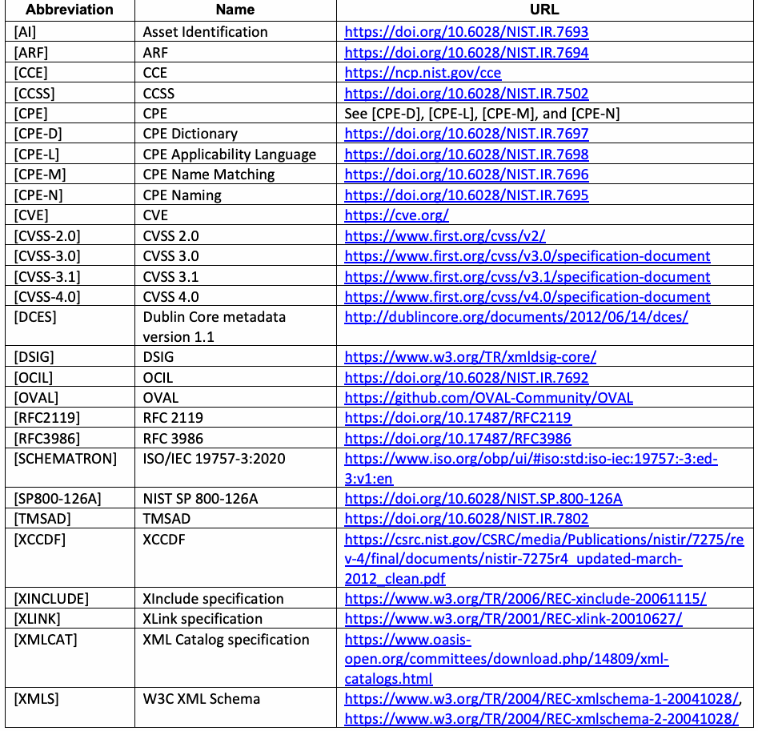
抽出したテキスト（原本と未照合・参考）
| Abbreviation | Name | URL |
| [AI] | Asset Identification | https://doi.org/10.6028/NIST.IR.7693 |
| [ARF] | ARF | https://doi.org/10.6028/NIST.IR.7694 |
| [CCE] | CCE | https://ncp.nist.gov/cce |
| [CCSS] | CCSS | https://doi.org/10.6028/NIST.IR.7502 |
| [CPE] | CPE | See [CPE-D], [CPE-L], [CPE-M], and [CPE-N] |
| [CPE-D] | CPE Dictionary | https://doi.org/10.6028/NIST.IR.7697 |
| [CPE-L] | CPE Applicability Language | https://doi.org/10.6028/NIST.IR.7698 |
| [CPE-M] | CPE Name Matching | https://doi.org/10.6028/NIST.IR.7696 |
| [CPE-N] | CPE Naming | https://doi.org/10.6028/NIST.IR.7695 |
| [CVE] | CVE | https://cve.org/ |
| [CVSS-2.0] | CVSS 2.0 | https://www.first.org/cvss/v2/ |
| [CVSS-3.0] | CVSS 3.0 | https://www.first.org/cvss/v3.0/specification-document |
| [CVSS-3.1] | CVSS 3.1 | https://www.first.org/cvss/v3.1/specification-document |
| [CVSS-4.0] | CVSS 4.0 | https://www.first.org/cvss/v4.0/specification-document |
| [DCES] | Dublin Core metadata version 1.1 | http://dublincore.org/documents/2012/06/14/dces/ |
| [DSIG] | DSIG | https://www.w3.org/TR/xmldsig-core/ |
| [OCIL] | OCIL | https://doi.org/10.6028/NIST.IR.7692 |
| [OVAL] | OVAL | https://github.com/OVAL-Community/OVAL |
| [RFC2119] | RFC 2119 | https://doi.org/10.17487/RFC2119 |
| [RFC3986] | RFC 3986 | https://doi.org/10.17487/RFC3986 |
| [SCHEMATRON] | ISO/IEC 19757-3:2020 | https://www.iso.org/obp/ui/#iso:std:iso-iec:19757:-3:ed- 3:v1:en |
| [SP800-126A] | NIST SP 800-126A | https://doi.org/10.6028/NIST.SP.800-126A |
| [TMSAD] | TMSAD | https://doi.org/10.6028/NIST.IR.7802 |
| [XCCDF] | XCCDF | https://csrc.nist.gov/CSRC/media/Publications/nistir/7275/re v-4/final/documents/nistir-7275r4_updated-march- 2012_clean.pdf |
| [XINCLUDE] | XInclude specification | https://www.w3.org/TR/2006/REC-xinclude-20061115/ |
| [XLINK] | XLink specification | https://www.w3.org/TR/2001/REC-xlink-20010627/ |
| [XMLCAT] | XML Catalog specification | https://www.oasis- open.org/committees/download.php/14809/xml- catalogs.html |
| [XMLS] | W3C XML Schema | https://www.w3.org/TR/2004/REC-xmlschema-1-20041028/, https://www.w3.org/TR/2004/REC-xmlschema-2-20041028/ |
抽出したテキストの訳（原本と未照合・参考）
| 略語 | 名称 | URL |
| [AI] | Asset Identification | https://doi.org/10.6028/NIST.IR.7693 |
| [ARF] | ARF | https://doi.org/10.6028/NIST.IR.7694 |
| [CCE] | CCE | https://ncp.nist.gov/cce |
| [CCSS] | CCSS | https://doi.org/10.6028/NIST.IR.7502 |
| [CPE] | CPE | [CPE-D]、[CPE-L]、[CPE-M]、および[CPE-N]を参照 |
| [CPE-D] | CPE Dictionary | https://doi.org/10.6028/NIST.IR.7697 |
| [CPE-L] | CPE Applicability Language | https://doi.org/10.6028/NIST.IR.7698 |
| [CPE-M] | CPE Name Matching | https://doi.org/10.6028/NIST.IR.7696 |
| [CPE-N] | CPE Naming | https://doi.org/10.6028/NIST.IR.7695 |
| [CVE] | CVE | https://cve.org/ |
| [CVSS-2.0] | CVSS 2.0 | https://www.first.org/cvss/v2/ |
| [CVSS-3.0] | CVSS 3.0 | https://www.first.org/cvss/v3.0/specification-document |
| [CVSS-3.1] | CVSS 3.1 | https://www.first.org/cvss/v3.1/specification-document |
| [CVSS-4.0] | CVSS 4.0 | https://www.first.org/cvss/v4.0/specification-document |
| [DCES] | Dublin Core metadata version 1.1 | http://dublincore.org/documents/2012/06/14/dces/ |
| [DSIG] | DSIG | https://www.w3.org/TR/xmldsig-core/ |
| [OCIL] | OCIL | https://doi.org/10.6028/NIST.IR.7692 |
| [OVAL] | OVAL | https://github.com/OVAL-Community/OVAL |
| [RFC2119] | RFC 2119 | https://doi.org/10.17487/RFC2119 |
| [RFC3986] | RFC 3986 | https://doi.org/10.17487/RFC3986 |
| [SCHEMATRON] | ISO/IEC 19757-3:2020 | https://www.iso.org/obp/ui/#iso:std:iso-iec:19757:-3:ed- 3:v1:en |
| [SP800-126A] | NIST SP 800-126A | https://doi.org/10.6028/NIST.SP.800-126A |
| [TMSAD] | TMSAD | https://doi.org/10.6028/NIST.IR.7802 |
| [XCCDF] | XCCDF | https://csrc.nist.gov/CSRC/media/Publications/nistir/7275/re v-4/final/documents/nistir-7275r4_updated-march- 2012_clean.pdf |
| [XINCLUDE] | XInclude specification | https://www.w3.org/TR/2006/REC-xinclude-20061115/ |
| [XLINK] | XLink specification | https://www.w3.org/TR/2001/REC-xlink-20010627/ |
| [XMLCAT] | XML Catalog specification | https://www.oasis- open.org/committees/download.php/14809/xml- catalogs.html |
| [XMLS] | W3C XML Schema | https://www.w3.org/TR/2004/REC-xmlschema-1-20041028/, https://www.w3.org/TR/2004/REC-xmlschema-2-20041028/ |
Appendix E. Change Log
付録E 変更履歴
Revision 4 Release 1 – June 2026
改訂4 リリース1 – 2026年6月
•Updated all references of SCAP 1.3 to SCAP 1.4
•SCAP 1.3のすべての参照をSCAP 1.4に更新
•Removed backward compatibility requirements for SCAP 1.1 and 1.0
•SCAP 1.1および1.0の下位互換性要件を削除
•Revised digital signature requirements
•デジタル署名要件を改訂
•Removed SWID requirements
•SWID要件を削除
•Removed references to OVAL ‘core’ and ‘platform’ schema versions
•OVAL ‘core’ および ‘platform’ スキーマバージョンへの参照を削除